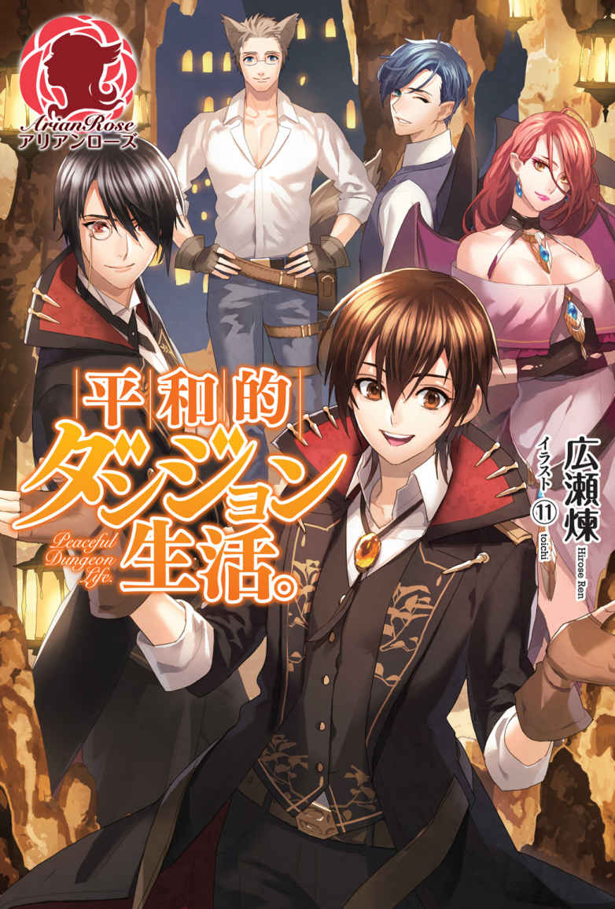
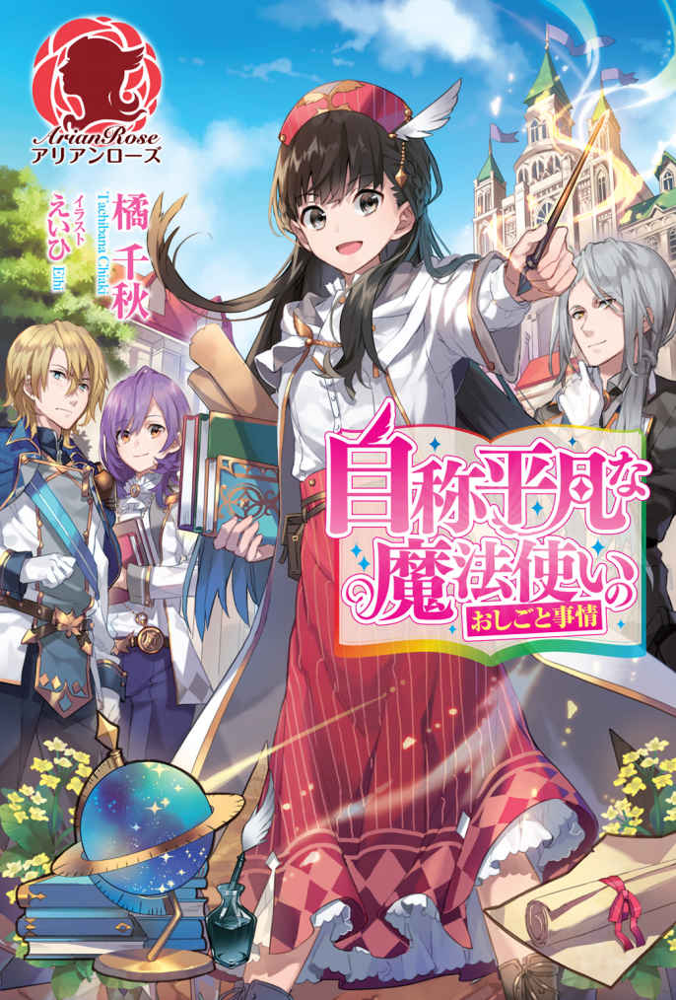

| アリアンローズを読もう！トライアルBOOK4 アリアンローズトライアルBOOK | |
| 沙川蜃 & 新山サホ & 橘千秋 & 花木もみじ & 広瀬煉 & おきょう | |
| 株式会社フロンティアワークス (2019) | |
この作品はフィクションです。
実在の人物・団体・事件などに一切関係ありません。
ヤンデレ系乙女ゲーの世界に転生してしまったようです １ 《サンプル版》
著者 花木もみじ
イラスト シキユリ
一 リコリス・ラジアータそして『リコリス・ラジアータ』
実際は一度も体験していないことを、かつて体験したと感じること。
私の人生は既視感にあふれていた。ただ普通と少し違うのは、私の既視感は『前はこうじゃなかったな』と感じるものだということ。
私の名前は、リコリス・ラジアータ。六歳になったばかり。
語り口が子供らしくないと、よく言われる。
外見も、大人っぽいとは言われても可愛らしいとはあまり言われたことがない。『可愛い』って、子供に対する万能の
身分はなんと、公爵令嬢。
母親は物心つく前に亡くなったが、絵姿はたくさん残っている。とても美しいが、少し冷たい感じのする女性だった。
父の公爵は外国を飛び回る仕事をしていて、家に帰ることが少ない。けれどたくさんの使用人や家庭教師に囲まれているので、寂しいと思ったことはあまりない。
記憶力の良さを重点的に褒められるので、それを特技と思っている。
......こうやって自分のことをつらつら考えているだけで、違和感がふくれ上がっていく。
違う違う、絶対違う、もう何か決定的に違う、と心の
我ながら
相手に選んだのは、身近な大人の中でも特に信頼しているばあや。
私が
しばらく
──そういえば。
デジャヴとはいったいどこの言葉で、私はなぜそれを知っているのだろう。たぶん『Ｄｅｊａ Ｖｕ』と表記するのだと思うのだが、これもまたいったいどこの国の文字だか分からない。
一大決心の結果は、疑問が増えてさらに混乱するだけで終わった。
私は
『Ｄ』『ｅ』『ｊ』『ａ』『Ｖ』『ｕ』
紙に書き起こしたこの六つの文字。これは私の抱える疑問解決の、大きな手がかりになるはずだった。
まず私は、周囲の大人たちにこの文字について見覚えがないかを
結果は完全な敗北。ほぼ全員が全員、大きな困惑を顔に浮かべておかしなことを始めた私を不思議そうに見るのだった。
あまり家にいない父を除けば、我が家で唯一語学に
こうして私は、熱心に本を読むようになった。
さいわい時間はたくさんあったし、本を読むという作業は一人でできることである。仕事で忙しい大人たちの手をわずらわせることもない。私はこの、
我が家──リーリア公爵邸の図書室はとても立派なものだ。
私は世界にある、様々な文字にあたってみた。
六つの文字に似た形を持つ文字体系は確かにあった。けれどそれらはどれも発音がまったく違う。私はすぐにこの作業の難しさを思い知ることになった。
そもそも文字というものは
文字探しに煮詰まって、けれど私が本のページを
歴史、地理、語学については家庭教師について習った基礎的な知識が、読書の上でおおいに役に立った。
他にも神話、伝承、果ては哲学、宗教学。
当初は本を運ぶ手間を惜しんで常に図書室に入り
おかげで、幼い公爵令嬢に
気のいいばあやが私を心配する気持ちは分かる。貴族として必要とされる以上の知識は、特に女である私には必要ないのではと遠回しに言われたりもする。
朝食もそこそこに、私は今日もまた自室で積み上げた本の中から一冊を手にとった。
椅子に背を預けて、本を開く。
今手にしているのは比較的小さな本で、私の手でも支えるのに苦はなかった。世界中に散らばる伝承やお
本の
私はその地図をじっと見つめ、いつものように思った。
（......違う）
いったい私の頭は、もしくは心は、何を否定しようというのだろうか。
この世界の、この国に生まれ、私は国から一歩も外に出たことはない。父も母も、ばあやも家庭教師の先生もすべてこの国の人間で、私だってもちろんこの国の人間だ。
新しい知識を得るということは、真っ白な紙に何かを書き綴るような行為のはずではないか。
それなのに私は、白紙のはずの紙に文字を綴りながら、無いはずの下書きとずれてしまったと感じ続けている。
違う、と。
前はこうじゃなかった、と。
でも『前』って何？
考えても答えは浮かばず。私はまた本のページを捲った。
本を読みつづける理由の一つは、もはや怖いもの見たさのようなものだった。読む度に違和感は増し、けれど知らずにいるのはどこか恐ろしい。その何か得体のしれないものの正体が、私に分かる日は来るのだろうか。
そうして私はまた新しい本を手に取るのだ。
子供らしい遊びにも興味を示さず様々な本を読み
ちなみにこの頃、私には
こんな六歳児は嫌だ。
私が十歳を迎えて少し経った頃のことだ。
その日のことは、忘れもしない。
私は自分の婚約者について初めて父から聞かされたのだ。
「やあ、久し振りだね、私の小さなお姫様」
そんな気恥ずかしい
呼ばれて書斎まで来た私のために、父は手ずから扉を開けてくれた。
「お元気そうで何よりです、お父様」
親子らしくないどこか他人行儀な挨拶を返しながら、私はじっと父の顔を見つめた。
金と茶の中間のような色合いの髪を後ろにきっちりと
「君も、元気そうだね。少し背が伸びたかい？」
父の私を見つめる濃い茶色の瞳は、あくまでも優しい。
「そうかもしれません。私の背があまり高くなってはと、ばあやが気にしているようです」
私の冗談交じりの言葉に、父は
「背の高い女性の魅力は、背の低い女性の魅力に勝るとも
父は器用にウィンクをしてよこした。
子供の私に社交界のことはよく分からない。でも父は、人好きする容姿に朗らかな笑顔と語り口、他人を褒める言葉を惜しまない人である。周囲に人を集める様子は目に浮かぶようだ。まして父は、外交に
折につけ父の話を聞いているだけで、とても顔が広い人だと分かる。娘の目から見ても魅力的な人だと思うのだ。
家の者が言うことを話半分に聞くとしても、公人としては
べつに、血縁関係の有無を疑っているとかいうことではない。この人は父親失格だ、なんて思っているのでもない。むしろ自分には過ぎた人だ。この思考がすでに、娘としてすごく可愛くないなぁと思う。
『リコリス様はお父様に甘えるのがあまりお得意ではございませんね』と、ばあやによく言われる。そしてだいたい『親子の時間が少なすぎますものね』と続く。たぶんそういうことなのだ。
私は父のことをけして嫌ってはいない。ただ、それほど気安い相手ではない。娘として、どのように接するのが良いのか分からないとも言える。
では、父のほうは私のことをどう思っているのか。
それこそ、よく分からないと言うしかない。一年の大半を国外で過ごし、ごくたまに、しかし必ずお
けれど時折ふと、
もちろん、ただの私の考え過ぎかもしれない。
そんな父がニコニコと笑って差し出してきた手に軽く片手を預け、私は導かれるまま柔らかな長椅子に腰を落ち着けた。
「今日は君に素晴らしい話を持ってきたんだ」
前置きもそこそこに、父は私の平穏な日常を終わらせる一言を放ったのだ。
「君の婚約者が正式に決まったんだよ。相手はヴォルフガング・アイゼンフート
父が言うなり、壁際に
「どうだい？ 美男子だろう？ 明日は初顔合わせだ。君もきっと彼が気に入るよ」
父の声をどこか遠くに聞きながら、私の視線は絵に
これはけしてむやみに大げさに言うのではなく。
私のそれまで日常と信じていた日常は、この日この時いったん崩壊したのだ。
ヴォルフガング・アイゼンフート。
その名と姿を耳に、目にした瞬間。私は目がさめるような思いがした。
手探りで進む暗闇の中で、ぱっと突然に
既視感も、おかしな知識もすべてが一つに
それは、私の『かつての生』と比較した既視感であり、『かつての生』で得た知識だったのだ。
ヴォルフガング・アイゼンフートという名前も、その記憶の中にあった。やわらかな金の髪の少女と、青年が抱き合う絵が頭に浮かぶ。青年は、先ほど目にした絵の少年の面影をはっきりと残し、印象的な青紫の瞳も同じ色だ。
正確には絵というか、『乙女ゲーム』の『スチル』である。つまり、ゲームの中で特別なイベントが起こった時に表示されるイラストのことだ。
頭の中にあふれた情報を信じて、今の私の状況を端的な言葉にするなら。
私は微妙に前世の記憶を持ったままに『転生』をした──のかもしれない。
それも──ヤンデレ満載乙女ゲームの世界に。
ヤンデレ、というのはあれだ。キャラクターの一分類で、『
あえてそういう方々と
ちなみに冒険の結果、真実の愛と幸せな未来を得られるのは一番いいエンディングに
火遊びは火遊びでも、火薬庫の中でする火遊びみたいなものである。
さてそんなゲームの中で、私──リコリス・ラジアータの立ち位置はというと。金の髪の少女＝ゲームヒロインの、ライバルキャラだ。死亡ルート有り。
なんだそれは。
そもそもが転生？ フィクションの世界に？
フィクションというのは作り事、
しかもただのフィクションではない。ヤンデレが攻略対象の乙女ゲームの世界にだ。よりにもよって。
それが本当なら、私が今まさしく立っているこの世界に、ゲームに出てくるヤンデレたちが実在していることになるではないか。
ゲームのプレイヤーとして攻略キャラクターに接するなら、それがたとえツンデレだろうがヤンデレだろうが恐れるに足りない。
しかし、現実でヤンデレに出会いたいはずがない。
ツンデレが振りかざす言葉の
いや、出刃包丁はただの私の中のイメージであって、ゲーム中にそういうシーンがあったわけではない。
とにかくヤンデレと
ヒロイン補正という素晴らしいスキルなしに、むしろ物語の筋にとって邪魔な脇役としてヤンデレに
いや、撃てないけど。
もう一度言おう。
なんだそれは。
私は父親にぼそぼそと何かしら適当な言い訳をして（内容をあまり覚えてない）自室に引っ込んだ。そしてなんとか、混乱する頭を落ち着けようと試みた。
自分の頭がまともだと信じるならば、今の私は前世の記憶を持っているのだと言うしかない。
頭の中で渦巻くこれが、本当に前世の記憶なのか、具体化しすぎた空想なのか。その辺りは考えだすと実に哲学的で、つまり終わりの見えない泥沼に足を突っ込むような行為なのでやめようと思う。
とりあえず今は大前提として、自分を──自分の記憶を信じてみよう。
前世の私は、日本という国に住むＯＬだった。小さな会社の総務課にいて、毎日数字とにらめっこしたりコピー機と格闘したり。
残念ながら恋人はいなかった。あと三年、いや五年ほど時間があれば、電撃的な大恋愛をしていた──と信じたい。
前世というからには、私は一度死んだのだ。
実感はまったくないけれど、記憶の中から死因を探ることは出来る。交通事故だ。
あまり、痛かったとか怖かったとかは覚えていない。自分のほうに突っ込んでくる車を見て、ヒヤッとしたのは確かだ。その後なんだかすごい衝撃を受けた気がするのだが、あまりに一瞬の出来事だった。
両親は死んだ私と対面したのだろうか。いや、しないはずがないのだけれど。
何を成したかと言われると首を
しかし先ほどから、自然に思い浮かぶ以上の細かいところを思い出そうとすると、ぼんやり頭が重くなる。細かい作業で神経を酷使した時のような、不快な疲労感があった。
おかげで、人一人の人生分にしては思い出せることがずいぶんと少ない。
そのくせ、おかしなくらい鮮明に覚えていることもあるのだ。たとえば前世でプレイしたとあるゲームのこと。その登場人物について。
知恵熱が出たらしい頭を
鏡に映る自分にもやはり違和感があるが、その原因が分かったせいか、不思議とためらいなく直視できる気がした。
私が手をあげると、鏡の中の子も手をあげる。唇を横に引っ張ってみると、鏡の中の子もしっかり変な顔をしてくれた。
黒い髪に黒い目、白い肌というモノトーンの配色の中で、何も
臙脂色の生地に白いレースやリボンを配置したドレスも、あまりさわやかとか可愛らしいという印象ではない。臙脂はリーリア公爵家のイメージカラーのようなものだそうで、私の洋服ダンスに入っているドレスには、ほとんどすべてこの色が使われている。
鏡に向けて精一杯の
（ゲームの中でもこんな格好をしてた。笑っているイメージもぜんぜんないわ）
ゲームの中でのリコリス・ラジアータ。あえて『私』ではなく『彼女』と言わせてもらうが──彼女はゲームヒロインのライバル役である。
これは前世に限らず、この世界にある物語でもそうだけれど。ライバル役と一言に言っても、その
たとえば初めは敵として現れるが、
しかし『リコリス・ラジアータ』はそのどちらとも違う。
彼女は、言うなればヒロインがヴォルフガング・アイゼンフートという青年と恋をする際の、乗り越えるべき障害だった。
ゲームの中でリコリスは、ヴォルフガングの婚約者として登場し、かなりアグレッシブに暴走する。彼女は親が定めた婚約者に対して異常な執着を持ち、ヒロインを
もっとも、ヤンデレは彼女だけではない。ヴォルフガングという男性キャラもそうだし、その他のヒロインと恋愛をするキャラクターもみんなヤンデレだ。そういうゲームだから。
さいわい、というか、リコリスが死ぬエンディングについてはわりと細かく覚えている。
ヒロインを傷つけまくったリコリスを、ヴォルフガングが殺害＆
ヒロインと二人で愛の逃亡生活エンドである。彼は高い身分ゆえの
さて。
婚約者に殺されてしまう。それはゲームの中の『リコリス・ラジアータ』の身に起こることだ。問題はそれが私の身にも振りかかることなのか、その一点である。
前世の記憶を思い出して、そして自分の未来を知ってしまったというならば、それはいったいどういう
因果といえば、どうして『この世界』なのかというのも疑問だ。前世の私はゲームが好きだったけれど、それを言ったら本だって漫画だって好きだった。ヤンデレばっかり攻略するゲームなんて他にしたことはなかったから、少しは特別なものとして記憶に残っているかもしれない。でも、それだけだ。
（ゲームのタイトルは............あれ？）
なぜか、思い出せない。
ゲームの中身についてはこんなに覚えているのに、おかしな話だ。たしか日本語ではなかったような気がするので、前世で壊滅的だった英語力が足を引っ張っているのだろうか。
しばらく悩むが、やはり頭がぼんやりとして重く感じられてくる。なんとなくすっきりしないが、諦めることにした。
とにかくそれは、暴力的な言動と展開盛りだくさんで年齢制限が設けられていたようなゲームだ。
発売される前から、話題には
ディレクター兼メインシナリオ担当が無類のヤンデレ好きだとか（もともと小説家で、そんな話ばかり書いていたらしい）。サブシナリオ担当がユーザーに精神的ダメージを与えることに喜びを感じる人種で、過去に担当したゲーム作品のバッドエンドのえげつなさには定評があるとか。
そんな中、タイトルに
現実に『リコリス・ラジアータ』として今ここにいる私にとっては、とてもじゃないが
キャッチコピーにおける『君』はもちろんゲームヒロインのことだが、リコリスは言ってみればそのついでとばかりに殺されるかもしれないのだ。
怖い。
絶対回避したい。
死ぬこともそうだが、絶望的な恋に身を
リコリスはゲームの中では脇役だったかもしれないが、今現在の私は、私の人生において
現状を理解した、とはとてもとても言えないのだが、とにもかくにも確かなことには、将来的に不幸にはなりたくない。いやむしろ幸せになりたい。
今思い出したようなことが未来に起こり得るというのなら、今からなんとかして回避するべく行動しよう。
私は、決意を込めて鏡の中を
と、やっと混乱が一段落した頭に、父の言葉がフラッシュバックした。
『明日は初顔合わせだ。君もきっと彼が気に入るよ』
初顔合わせ。
誰にって、婚約者で、もしかすると将来自分を殺すのかもしれない相手にだ。
ザッと全身から血の気が引いた。
いきなりの、ド修羅場である。
二 マイ・リトル・フィアンセ
翌日。
私は婚約者の住まうラナンクラ公爵邸へ向かう馬車に揺られていた。
いちおう、事態を回避する努力はしたのだ。
私は再度父のもとを訪れ、精一杯のか弱い公爵令嬢を演じながら
父は言った。
「とにかく会ってみないことには嫌な相手かどうかも分からないだろう？ 私も一緒に行くのだから大丈夫だよ。今日はもう寝なさい」
うん。そう返しますよね。大人としては。
我が家からラナンクラ公爵邸への道のりは、実際に馬車を走らせれば十日以上はゆうにかかってしまうそうだ。
そこで活躍するのが
リーリア公爵領に一つしかない転移の塔から、ラナンクラ公爵領に同じく一つしかない転移の塔まで飛ぶ。そうすると十日の旅程がたったの半日に減るというわけだ。そこからは馬車での移動になる。
十日かかっても良かった。
むしろ一生目的地になど着かなければいい。
それが私の心境だった。
しかし車輪は回り、景色は無情に過ぎ去っていく。
ラナンクラ公爵領の主要な街は、ほとんどが港街である。知識として持っているその情報を実際に目にしながら、しかし楽しい気持ちにはとてもなれない。
いろいろなことが頭を
父が気を使って、時折馬車を止めて外の空気を吸わせてくれる。とはいえ、時間としては
結局私は、たいした策も持たずに敵陣に足を踏み入れることになった。
ラナンクラ公爵邸は立派な邸宅で、私はその外観を見た時点ですでに
我が家と比較して、ラナンクラ公爵邸の内装は少し男性的に思えた。壁に飾られた絵には英雄
ラナンクラ公爵家には男児が一人、我がリーリア公爵家には私しか子供がいない。それがこんなところにもあらわれているのかもしれなかった。
普段であれば居心地が悪いというほどのことではなかっただろうが、もうとにかく『おうちに帰りたい』というのが本音だ。毛足の長いじゅうたんの上をそろそろと歩く間にも、私の心に不安が
（失敗したわ......）
通された応接間の柔らかい椅子の上で、ついに私の不安は最高値に達していた。
「リコリス、大丈夫かい？」
隣に座った父は、私の顔色が悪いのを気にして温かい飲み物を勧めてくる。しかしとても
失敗したのは、昨夜からこの時まで、いろいろと思い悩むばかりできちんと休息を取らなかったことだ。馬車の中でも、せめて目を閉じておとなしくしていればよかったのだ。実際に私がしていたことといえば、まとまらない思考をぐだぐだとループさせるか、もしくは窓の外ばかり
結局建設的な案が浮かばないのなら、せめてよく眠って、体調を万全に整えてからこの場に臨めば良かった。
後悔先に立たずの格言を
私は父に合わせて立ち上がり、入室者を迎える。
入ってきたのは黒髪に白いものが混じっているが、足運びもキビキビと姿勢の良い紳士。次いで
私は意図的に視線を
父と紳士は気さくな挨拶を交わし、すぐに私のほうに向き直った。
「紹介いたします、ラナンクラ公。これは私の娘で、リコリスと申します。リコリス、ラナンクラ公爵
公爵に私を、次いで私に公爵をごく簡潔な言葉で紹介した父はすっと身を引いてしまう。自然、私と紳士が直接向き合う形になった。
「お初にお目にかかります。リコリス・ラジアータです」
ラナンクラ公は私の父よりもずっと年上で、たしか五十近いはずだ。目元の笑いじわに年齢が現れていた。
「ああ、はじめまして。といっても、君が赤ん坊の頃には会ったことがあるのだが」
公はごく気さくな口調で言うと、私の手の甲に軽くキスをした。白髪交じりの
私がそれについ口角をあげてしまうと、公の目尻のしわはますます深くなった。お互いに笑い合って、短い挨拶が終わる。
「とても愛らしく成長していて驚いたよ。髪や目の色は母君に似ているが、目の形が父上そのものだ」
私と父とを交互に見比べながらの言葉に、父が少し照れたように「よく言われます」と返した。私はというと、『愛らしい』という言われ慣れない褒め言葉に動揺していた。
「しかし顔色が良くないな。長旅で疲れさせてしまったようだ。馬車に長く乗るのは初めてかい？」
心配といたわりを多分に
「だ、大丈夫です。立ったり歩いたりしていたほうが、気が
無駄にどもって答えてしまった。
「やはりこちらから出向くべきだったな。すまないことをした」
「いいえ！ ええと......知らない土地に行くのは楽しいです。大きな街の向こうに海が見える景色がとても新鮮でした。街道沿いに見えた円形の風車とか、初めて見る形でとても興味深......あ、いえ、今日は、お招きいただいて、とても嬉しく思っています」
私は挨拶を終えたばかりの相手に向けて、おかしなほど
でも。目で、声で、挙動のすべてで好意を伝えてくるようなラナンクラ公の態度が、
焦る私にラナンクラ公はむしろ嬉しそうにニコニコっと笑って、風車の形について私の疑問に答えて説明までしてくれた。
その話をうんうんと
気さくな笑顔のこの方、実は我が国の
この国は王政で、家柄としては王家の下に五つの公爵家がある。その中でもラナンクラ公爵家と我がリーリア公爵家は共に宰相が輩出する家柄だ。
その地位と、そして何より『ヤンデレ男の父親』という先入観のせいで、このような好人物が現れるなどと思いもしなかった。本当に失礼だったと思う。反省します。
加えて宰相様に、「君には知識欲という素晴らしい才能があるな」などと感心したように言われて嬉しくないはずがない。
正直、ときめいた。
どのくらいときめいたかといえば、隣に立つヤンデレ......じゃなかった、我が婚約者殿の存在をいっとき忘れてしまったほどである。
後方に立つ父が、私たちの注意をひくために
宰相様の
「これは申し訳ない。リコリス、私の息子を紹介しよう」
宰相様の大きな手に導かれて一歩足を踏み出した十歳のヴォルフガング・アイゼンフートは、「どうぞよろしく」と最低限の挨拶をして軽く目を伏せた。
私も「こちらこそ」と返しただけで、会話はそこで
互いに取り付く島もない。
向こうからしても、性別も違う初対面の相手に何を話していいかなど分からないのだろう。こちらも同じである。
というか、正直な私の心境としては、『
先程はラナンクラ公の好人物っぷりについ心が
ピリピリとした空気を
シンと静まり返った部屋の空気に、大人たち二人はどうやら焦ったらしい。
「我々がいては話がし
「リコリス、ご子息に庭を案内していただいたらどうだい？」
いきなり『あとはお若い二人で......』とばかりに十歳の子供二人を庭園に放り出すことにしたようだ。
はっきり言って国を支える職に就くお大臣たちの策とは思えない、
まずは大人二人が話題を誘導して場を
しかし考えてみると、ドラマの中の見合いの席でそういう役割を
──などと、ついつい分析してしまった。
もちろんこの時私は、動揺していたし、かなりびくついていたのである。
庭園へと続く道を連れ立って歩くことになったヴォルフガング少年は、線の細い美少年だ。
意外というか、この年齢ならしかたのないことかもしれないが、同年の私よりも背が低い。
艶のある黒髪を前分けにして額を見せる髪型が、理知的な顔立ちにとてもよく似合っている。キリッと前方を
少年らしく頬の
ゲームのキャラクターにはだいたいイメージカラーが設定されているものだが、『ヴォルフガング』の場合は黒である。作中では、ほとんどつねに黒っぽい服を着ていた。
今目の前にいる少年もやはり、服は黒の配分が多いモノトーンカラーだ。上着の
私は横、もしくは斜め後ろという好位置から相手を観察しつつ、なんとか遅れないようについて歩いた。
ヴォルフガング少年は庭園の一角、花のアーチに視界が
「お前、俺の婚約者に決められたということは承知しているのか？」
突然だったので反応が遅れたが、なんとか頷くことで返事をする。
すると彼はその印象的な青紫の瞳で、強く私を
「......気に入らないな。顔はまあまあ見られるが、そもそも全体の印象が
............。
ああ......うん。
こういうキャラだったなぁ。
そう頭の片隅で思いながら、実のところ私の心は大きな
私が一番恐れていたことは、どうやら起こらなかったようなのだ。
それはたとえば、ヴォルフガング・アイゼンフートに会った瞬間に、自分の中身がまるごと変わってしまうのではないか。そんな
よく分からない心の動きが起こって、制御もできないほど相手のことを好きになってしまうのではないか。先にあるのが破滅と分かっても、目が
うん。良かった。
これは────『ない』。
だって私マゾじゃないし。
この生意気なクソチビの頭を
けれど前世も含めればとうに大人、という人生経験が私を攻撃性から遠ざけてくれていた。
自分より下にある青紫の瞳を、思い切り見下ろしながら鼻で笑うにとどめておこう。──と、思ったのに。
「図体も小さければ、おっしゃることも小さいですわね」
あ。口が、
私のぽろっと口をついた言葉にヴォルフガング・アイゼンフートがどうしたかというと。
ただ、驚きに目を見開いて呆然としている。
（あ、あれ？ なんか思ってた反応と違う）
手を出してくるかもしれないと身構えたのが完全に無駄になった。
今の彼の様子をたとえるなら、未知なる敵に遭遇したネコ。警戒心よりも驚きが
推察するに彼は、少なくとも同年代の人間から悪口を返されたことがないのではないか。身分を考えれば、相手が大人であってもそうそう彼に面と向かって反論はできないはずだ。
彼の父親である公爵は、自分の息子に背が低いとか言いそうにない。
私の背中を冷や汗が伝った。
平和な現代日本に生きる方々からはけっこう同意を得られると思うのだが。私は被害者になりたくないのはもちろんのこと、加害者にもなりたくない。
たとえ相手が将来ヤンデレになるにしても。今は、自分が言ったのと同じようなことを言い返されただけで機能ストップしてしまうメンタル弱めのお子様なのだとしたら。私の先ほどのもの言いは相当
「ええと、失礼なことを申し上げました。謝罪いたします。申し訳ありませんでした」
私の言葉を機に
「ゆ、許すものか！」
「はあ。まあ、許していただかなくても結構ですけど」
「......っ！」
それにしてもこの少年、普段どれだけ甘やかされているのだろう。言い返されるたびに驚いている。
ラナンクラ公は素敵な紳士だと思ったけれど、息子を
（......ん？ そういえば）
私はとある可能性に思い至った。
「あの、お父上のラナンクラ公爵様は、ふだんは王都にお住まいですよね？」
「父に言いつけるつもりか」
父親に言いつけられるのが怖いなんて可愛いところがあるじゃないと思いながら、私は
「いいえ。そんなことはいたしませんから、代わりに少しわたくしのおしゃべりに付き合っていただけませんか？」
私の提案にヴォルフガング少年は、今度こそ警戒心に全身の毛を
私は言葉を重ねてなんとか彼の警戒心を解こうと試みた。
「というのも、
こちらの手の内をあかしてみせると、少し彼の興味を引けたようだった。
「たしかに父は普段王都にいる。こちらに帰って来られるのは月に数回というところだ。しかし、リーリア公との会話に困るというのは意外だな。多弁な
「ええ。ですからわたくしたちの会話は、父が一方的に口を開くばかりです。父は話術の
相手の警戒心を解く手段のはずが、思いの
しかしそれが功を
「......私と父の例はあまり参考にならないだろう。どちらもあまり弁が立つほうではない。私が勉学の成果を報告して、父は褒めてくれるが会話といえばその程度だ。──もっと昔、母が生きていた頃は違ったのだが」
ヴォルフガング少年の一人称が、『俺』から『私』になった。母親について口にしたせいだろうか。
少し表情もやわらいでいて、なんとなくだけれど『私』のほうが素に近いのかなと感じた。
「お母様はどのような方でしたか？ わたくしの場合、母は物心つく前に亡くなっていますから、ほとんど覚えていないのです」
「そうか。それは、その」と、もごもごと口ごもったのは、たぶん
私はスカートを持ち上げて丁寧に礼をして、彼の心が伝わっていることを示した。彼も理解したようで表情を
「......私の母は、四年前に亡くなった。あまり口数の多い人ではなくて、褒めることも叱ることも少なかった。だがどんな時でも、私を見守っていてくれたように思う。美しくて、優しい人だったな」
過去を懐かしんだ後にふと、「ありきたりな表現だが」と照れたように言った。その子供らしからぬ表情に、私はなんだか切なくなった。
はっきりと思い出したのは昨日とはいえ、私には前世がある。けれど彼は
思わず「寂しくありませんか」と聞いてしまうと、使用人や家庭教師がいるから寂しくないと返ってきた。
「友達は？」
「......特には、いない」
「
二人で顔を見あわせてため息を付いた。
男女の違いはあるが、彼と私の境遇には似たところがあるようだ。
双方、幼くして母親を亡くしている。父親は仕事に忙しくてなかなか会えない。使用人や家庭教師など、大人に囲まれて暮らしていて、同年代の遊び相手はいない。
私は、話題を家族のことから他に移すことにした。
政治学や歴史学の進行具合から始まって、最近読んだ興味深い本のことや、乗馬の腕前について。
興味のある分野にズレがあるものの彼も読書家だということが分かって、なかなか話していて面白い相手だった。
話が興に乗って、私は父親にさえ秘密にしていたことを彼に話してしまった。
「家にこもってばかりの令嬢と
ヴォルフガングが
「もちろん、一人で家を抜けだして街まで行ったということではないけど。......そんなことをしたら、さすがに父に知られてしまうでしょうし」
私はヴォルフガングに詳しく説明して聞かせた。
山からの風がいちだんと強い日のことだ。
私は使用人の一人が街に行くのに、わがままを言って同伴した。
計画は前からあったのだ。私はあらかじめ
そして彼が交渉事に熱中しているのをいいことに、少しだけ側を離れて街を歩いた。
「強い風が吹いて、外套のフードがばさっとめくれてしまったの。ヒヤッとしたわ。でも、誰も私に気がつかなかった。それどころか、『邪魔だよ！』って
言ってみればそれだけのことだ。けれど、私にはとても興奮する出来事だった。
「近くにいた小さな子供が、私の動きを見て笑うの。それが伝染したみたいで、私、馬鹿みたいに大きな声で笑ってしまって......連れに見つかって、冒険はおしまい」
時間にすればとても短い、私にとっての冒険譚。
大人に言えば、身の安全を理由に怒られるだろう。だからこの大事な秘密は、誰か同年代の子供にこっそりと教えるものと決めていたのだ。
ヴォルフガングは私の話を馬鹿にしたりしなかった。彼は青紫の目を驚いたように見張って、その目に少しだけ賞賛の色をにじませて言ったのだ。
「......すごいな」
シンプルな感嘆の言葉。私にはそれで十分だった。
この時は自覚していなかったが、私はどうも少しはしゃいでいたようだ。
思い返してみれば、私の人称は普段話す時に気をつけている『わたくし』に『わたし』が入り混じっていたと思う。人のことを言えない。
言い訳のようだが。これほど話題を選ばなくていい話し相手に会うのは、少なくともこの生において初めてのことだ。私には年の近い
家にいる大人の中では、ばあやは比較的どんなことでも相談できる相手で、彼女は使用人としての職務以上に私のことを気にかけてくれていると思う。限りなく家族に近い存在ではあるが、やはり友達とは違う。
ヴォルフガングと話す時間は思いの外楽しく、時間は駆け足で過ぎ去った。
私たちがハッと我に返ったのは、双方の父親がなにやら笑みをこらえきれないような妙な顔で、夕食の支度ができたと呼びに来た時だった。
その頃には私たちは、ヴォルフ、リコリスと呼び合う仲になっていた。
仲良くなってどうする、私。
三 夜の子供たち
豪華な、けれど適度な量の夕食を食べ終える頃には、私の胃はすっかりと元気を取り戻していた。
大人たちは、二人でお酒を飲むことに決めたようだった。
父は家ではあまりお酒を飲まない人で、酒が好きでないと言っていた気がするが、まあ飲みたい気分の時もあるのだろう。
私はもう少しならヴォルフと話をしていてもいいと言われたので、さっそく彼を誘ってこの館の図書室を案内してもらうことにした。
話したいこともあったのでちょうどいい。
独特の古びた紙のにおい。
そびえ立つ本棚。
夜の図書室を、魔法の
その様が、今の私の目には格別幻想的に見えた。通い慣れた自宅の図書室と造りが違うということもあるだろう。もしかするとそれ以上に大きいのは、前世の記憶が
この世界には、魔法がある。
誰にでも
『そうだ』とか『らしい』とか
とても残念なことに、我が家の図書室には魔法について詳細が記された本は存在しない。あったとしても、子供が容易に手を伸ばせる場所には置かれていないはずだ。それはこのラナンクラ公爵邸の図書室でもおそらく同じこと。
魔法とはそもそもどんなものか。どうすれば使えるのか。そういった知識は得られないものの、魔法は確かに生活の中に存在している。
たとえば私たちがこのラナンクラ邸に来る途中で利用した転移の塔しかり、今図書室に広がる暗がりを照らす魔法灯しかり。
燃えやすい本が集まったこのような場所には、魔法の灯が最適だ。火事の心配もなく、長時間使っても油が切れることもない。何より炎と違って
魔法灯のような道具は、作る段階で魔法の力が込められるそうだ。そのため、使用する時には魔力を使わない。つまり手順さえ間違えなければ、仕組みを知らずとも、魔力を持たずとも使えるようになっている。
けっこうな高級品だが、魔法灯は
ガラス製の器の中から、手のひらサイズの球体を取り出すことができる。それを日中太陽光に当てておけば、夜の間はずっと照明として使える。
充電式太陽光発電とたとえれば、想像がしやすいだろうか。
一つ難を言うならば。電灯のように、スイッチで消すということはできない。そういう融通はきかないので、灯を消したければ
その魔法灯の下で、私はヴォルフに切り出した。
「いくつか質問をするから、答えてくれる？」
「質問？」
答えるヴォルフの声は近い。
私たちは図書室の飾り
もちろんこの部屋にはいくつも椅子がある。夜に読書や調べ物などをするために、大きな魔法灯の下にしつらえられたソファーセットもある。
私たちがそれらの場所ではなく飾り暖炉の前を選んだのは、この場所なら図書室の入り口から直接は見えないからだ。
別に悪いことをしようというわけではないけれど、二人でなんとなくこの場所を選んだ。
「あなたについて知りたいと思って」
「では、君も答えてくれないと不公平だろう」
「え？ ......ああ、言われてみればそうね」
私は少し考え、公平と思えるやり方を提案した。
「じゃあ、お互い交互に質問をし合うというのはどう？ 自分がした質問にはまず自分の答えを提示するの。そうしたら公平でしょ？」
「分かった。一つ目の質問をどうぞ」
私は頷きながら、紙にヴォルフの名を書き出した。今後の参考のために、ヴォルフのプロフィールを作成するつもりなのだ。
「じゃあ、異性の好みは？ つまり、どういう女の子が好き？」
「......いきなりそれか」
「あら。唐突すぎた？」
「というか、答えづらい。好みの相手を好きになるというものでもないだろう。君は、簡単に答えられるか？」
なるほど言われてみれば、好みの相手というのはわりに難しい質問かもしれない。私の場合、しいていうなら年上がいいかな、とぼんやり思うくらいだ。そうでなくとも、今日が初対面であることを考えれば、我ながら少しがっつき過ぎの質問だ。
もちろん私としてはヴォルフがどういう恋をするのか、どんな相手を好きになるかというのは非常に重要な問題なのだが。
「じゃあ無難なところで......好きな食べ物。私はね、一番というと悩むけど、う〜ん......生のフルーツがたっぷりのったタルトにしておくわ」
「好きな食べ物か。あまり考えたことがないが......強いていうなら、肉」
「ちょっと意外......」
私が紙に『肉食男子』という意味あいの言葉を書くと、ヴォルフに変な顔をされた。
「おかしな書き方をしないでくれ。だいたい、なぜ君の答えは書かないんだ」
「自分の答えをメモしても仕方ないじゃない」
ヴォルフが納得がいかないと主張するので、仕方なく私はメモの書き方を変えた。真ん中に質問を書き連ね、その左右にそれぞれの答えを記入することにする。
「では次は私の質問だ。そうだな......趣味は？」
「まずはヴォルフの答え、でしょ」
「読書も好きだが、どちらかといえば体を動かすことのほうが好きだ。剣術の
「私は逆かな。体を動かすのも好きだけど、読書ばっかりしているわ」
お互いに意味があるようなないような質問を重ね、そのたびに紙面はどんどん文字で埋まっていく。
おすすめの本は？
愛馬の名前は？
動物を飼ったことは？
話題は

この場にいるのは二人きりで、近くに人の気配はない。でもなんとなく、私たちは小声で話をしている。示し合わせたわけではなく、暗黙のうちにそうしていた。
これはおそらく、子供に許された『夜の時間』があまりに少なく限られている
私たち子供は、大人に聞きとがめられないよう、夜には出来るだけ気配を殺そうと努めるのだ。
なぜなら大人たちは、私たちが夜中に何かしている気配に敏感だ。そうして『子供はもう寝なさい』というたった一言で、大事なこの時間を奪おうとするのである。
私とヴォルフの間にごく小さな声で交わされる会話は、この時間がいつまでも続いてほしいと願う心のあらわれだった。
楽しい時間はあっという間に過ぎる。いつの間にか大きめの紙面には、二人についての情報があふれてはみ出しそうになっていた。
ヴォルフのプロフィールに目を通しながら、私は一つの確信を得ていた。
目の前のヴォルフからは、非道徳的な考え方とか、精神的な不安定とか、そういったものをまったく感じないのだ。
ゲームの『ヴォルフガング』は
『ヴォルフガング』がこんな
目の前にいるヴォルフと、ゲームの『ヴォルフガング』は、必ずしも同じ人物ではない。
話題が途切れた時を
「ねえヴォルフ、私たちの婚約のことなのだけど」
私の唐突な言葉に、ヴォルフはちょっと面食らって「えっ!? 」と声をあげた。
「父たちが言っている婚約のことよ。いろいろと問題のある話だし、父たちがどれだけ本気なのかは分からないけど、とにかくこちらの意志をはっきりさせておきたいと思って」
『いろいろと問題のある』という部分については、ヴォルフもすぐになんのことを言っているかわかったようだった。
私とヴォルフの婚約話は、実のところリーリア公爵家にとっては少しばかり危険な
疑問というのはもちろん、リーリア公爵たる父の一人娘である私が他家に
この国の
それをしない理由は父
そうして父は、自分がまだ若いのを利用して賭けに出ることにした。現宰相の息子にして家柄も才覚も父の眼鏡にかなったヴォルフに私を嫁がせ、その子供、つまり自分にとっての孫にリーリア公爵位を継がせたいと考えた。
つまり、私がラナンクラとリーリア双方の跡を継ぐ二人以上の子供、それもできれば男児を産むことに父は賭けたのだ。
私とヴォルフの婚約が発表される段になれば、父の思惑は知れ渡るだろう。五公のうちでも力の強い二家が
私個人としても、もちろん
けれど、私の置かれた状況は現代日本に生きていた時とは大きく違うのだ。父がもろもろの事情を私に説明してくれたことに、私はむしろ感謝せねばならない。
それは父なりの私への誠意であって、私もまた父に誠意を示す必要がある。つまり、明確に反対するには少なくとも、父を納得させられるだけの理由が必要だった。
初めはヴォルフの性格に難あり、という証拠を用意してその理由にするしかないと思っていた。それだってあまり良い案とは言えない。それで婚約が破談になったとしても、ラナンクラ公爵家に
それよりもむしろ──。
「私たちは、協力できると思わない？」
「協力？」
「そう。だってこの婚約話、率直に言ってあなたも反対よね？」
「......え？」
さっきから、私の言葉の反復もしくは『え』しか発音していないことに彼は気づいているのだろうか。
「だって、家柄とか爵位とかいろいろな事情があるのは分かるけれど、私たちの気持ちを無視しているわ。私たちはまだ子供で、これからどんな出会いがあるか分からないじゃない」
具体的には、ヴォルフは十二歳から通い始める学園で、金の髪に鮮やかなエメラルドグリーンの瞳の少女と運命的な出会いをする──かもしれないのである。ただし彼女が転入してくるのは彼が最高学年である六年になった年だから、けっこう先の話になる。
「だから、親にだくだくと従って結婚する必要なんてまったくないと思うの。でも、私たちの家柄からして、この婚約話を断ったところで次の話を持ってこられるだけなんじゃないかしら」
「............」
「つまりね。お互いに婚約に納得しているふりをしないかってこと。心に留めておいてほしいのだけど、あなたに他に結婚したい子ができたら、言ってくれれば協力は惜しまないわ」
だから私を刺し殺すのはやめてね、とは言わないでおく。
私なりに最大限の誠意を持ってこの婚約話に対処しようと考えた結論だった。
「それで、君は......？」
だからヴォルフが、こんな暗い声を出すのは完全に予想外だった。
「君にはもう、結婚したい相手がいるのか？ だから私は眼中にない、と」
ヴォルフが手を伸ばして、私の手首を
痛みを感じるような力ではなかったけれど、突然のことだったのでまるで
「......なんの話？」
手を振り払おうとすると、逆に手首を握られた力が増して体が近づいてしまった。
背は私のほうが高いのに、手の大きさは格段にヴォルフのほうが大きかった。剣を習っているならば当たり前かもしれないが、握力も強い。
体を離すことができなくて、私はそのまま吸い込まれそうに深い青紫の瞳と接近遭遇した。
「『これからどんな出会いがあるか
恋人の
親が決めた、今日まで顔も見たことのなかった婚約者にそんなことを言われる筋合いは──というようなことに考えが至ったわけではなく。ただとっさのことにびっくりして、とにかく否定しなくてはいけないと首を振る。ブンブン音がするくらい振る。
と、今の今まで怒っているような雰囲気だったヴォルフの目尻がやわらいだ。次いで少し
「君は、どれだけ男が周囲にいない生活をしているんだ？ いや、公爵令嬢として当たり前か......」
「え？ ヴォルフは周りに女の人がいるの？ あ、あの、もしかして綺麗な侍女のお姉さんと......とか......」
友達はいないけどセフレはいます、みたいな未知なる生活を送っていたりするのだろうか。と、想像力をたくましくさせたら嫌な顔をされた。
「そんなはずがないだろう。私自身は
だから
ヴォルフの手が相変わらず私の手首を
痛いわけではないが、なんとなくその場所が熱を持っているような感じがする。そして、顔が近い。
動揺とともに、私の中で『負けるものか』という気持ちがむくむくと
とにかく相手のペースに流されるばかりではいけない。何がいけないって、なんだか顔が熱いし、危機感のようなものを感じるし。でも相手は十歳の子供なのだと思うと、すごく複雑な気持ちになるし。
前世の知識を生かして、何か彼の
下ネタ？
保健体育の知識？
だいたいあなた女嫌いキャラのくせに、こんなに近づいちゃっていいわけ？
いや、ものすごくいまさらだけど。さっきこのヴォルフとゲームの『ヴォルフガング』とは違うという結論を出したばかりだけど。
わたしは、こんらん、している。
その混乱を見ぬいたように、ヴォルフがふっと大人びた笑みを浮かべた。大人びたというか、どこか意地の悪い笑い方だ。
「つまり君は、そういう意味で情緒が育っていないだけか」
そ、そんなこと十歳児に言われたくない！ 絶対に！
「物語の中の王子様に
そんなことも言われたくない！ 王子様に憧れとか、ちょっとなんとなく思い当たる
私の抗議は声にならなかった。声にするには、あまりにも情けなかったからである。
「......婚約解消はしない」
ヴォルフはきっぱりと言い切って、やっと私の手首にまわしていた指をほどいた。
けれど完全に解放はせず、圧迫したその場所を
さっきからヴォルフのなすがままで、ろくに反抗すらできていない。
我ながら本当に
ヴォルフが立ち上がって『部屋に帰ろう』と言った時も、私はただただ何度も頷いた。とにかく一人になって落ち着きたい気分だ。
「おやすみ、婚約者どの。良い夢を」
だから客間まで私を送ってくれたヴォルフが別れ際、最後のとどめとばかりに目尻（もしかすると泣きぼくろの上）にキスをしてきたのに、無断で何するんだと文句を言うことも出来なかった。
親が決めた私の婚約者は、どうもヤンデレとは言いがたい。
けれどなかなかに、侮りがたい人物ではあるようだった。
※この続きは製品版でお楽しみください。
観賞対象から告白されました。 １ 《サンプル版》
著者 沙川 蜃
イラスト 芦澤キョウカ
一・面食いで何が悪い
それは、どこかで見た話のような出来事だった。
日本にて、若くして運悪く病気になり、わたしは死んだ。そして地球ではない別の世界に転生したらしいのだが、どういう訳か記憶がうっすら残っていたのだ。
普通、前世の記憶というのは次の生の妨げになる可能性もあるので、完全とまではいかなくとも消されるはずだ。けれど、言語などを除いて、好きだった事や物、自分の性格などについての記憶が残っていたのである。
当然、理由を知りたくてあれこれ聞いたし、文献も読める範囲で読んでみた。
その結果、わたしが転生した場所というのは、魂の記憶が完全に消されにくい組成をしているのだそうだ。なので、似たような記憶保持者が周囲にもたまにいる。
そんなファンタジーなことあるか、と思いつつ、記憶を持ったまま生まれてしまったものは仕方が無い。何とか生きて、手に入る範囲で幸せな人生を送ろうと決めた。
そんな訳で、わたしは日々をそれなりに生きてきた。
嬉しい事に厳しい寒村に生まれ落ちたり奴隷の身分に生まれたりすることもなく、とんでもない能力があって戦いの日々に身を投じなければならないという事態にも陥らずに済む家庭に生まれることが出来たので、その場所に置いての常識にのっとってそれなりに頑張ってやっていれば、程度の差こそあれ報われる訳だ。
わたしが生まれた家とは、まあ、
どこか欧州に似たこの世界のこの国には、そういう階級が当然のように存在していた。まあ、一種のパラレルワールドなのだろうなと勝手に解釈している。もちろん、知識が貧困なので間違っている可能性が高い。
だからといって、別に何も困りはしない。
わたしの生まれた家は、バルクール男爵家という。収入はそこそこ、父は凡庸な男で、のんびり領地を管理しては時々釣りをして過ごすような人。ただし、母親は違った。他国の貴族の娘で、父のどこが良かったのか、追いかけて無理矢理に結婚したという女傑だ。しかも美人。
その母の血を受け継いだ兄は非常に美しく、令嬢たちの引く手
わたしにとっては優しい大切な兄だ。
そしてわたし。容姿は父親に似て凡庸。と言っても不美人ではないし、着飾ればそれなりに見栄えもする。残っていた記憶のせいで、ちょっと人とは違う考え方をするけれど、まあ、とりあえず平凡さが売りの十八歳だ。唯一自慢出来るのは、髪の色と目の色で、母譲りの
そんなわたしも、これから何とか結婚相手を見つけなければならない。お貴族様に生まれた女は、労働を許されていないので、旦那様に一生を養ってもらうしかないからだ。
でなければ兄と将来の
なので、母の妹、つまりおばとその娘に金魚のフンよろしくくっついて、社交の場へと顔を出すのがここ数年の大イベントだった。そんな訳で、今もそういった集まりに参加していると言う訳だ。
さて、ここからが本題。
今、わたしの目の前に、見目麗しい男性が立っている。
彼は何やらわたしを呼びとめ、話があるからと庭園の
いいかげんにしびれを切らしてわたしは訊ねた。
「あの〜、お話っていったい何なんでしょうか？」
「あ、申し訳ない、少し考えをまとめているので、待っていて欲しい」
「......はあ」
彼は何を言いたいのだろうか。わたしにはわかりかねる。
相変わらず、小声で「いや」とか「ふむ」とつぶやく以外動きを見せない。
仕方ないので、ぼんやりと庭園に目をやる。綺麗だな、と素直に思う。今わたしが招かれている屋敷は侯爵家の荘園で、狩りのためだけに作られたものだった。
わたしは今、侯爵家に招かれた客のひとりだ。今夜は舞踏会が開かれる予定である。とはいえ、その時間まではまだかなりあり、支度するにしても余裕があるので侯爵の所有する広大な庭園を散策していたのだ。そこで、彼につかまったと言う訳だ。
彼───確か名前をジェレミア・カスタルディと言ったと思う。侯爵家の長子で、次期当主。やや長めの黒い髪に、青い瞳をした
財力、容姿ともに優れており、わたしも遠くから観賞対象としてじろじろと眺めてきた。
転生前のわたしは、いわゆるアイドルが好きだった。
それほど熱心な追っかけという訳ではなかったし、テレビで見たり、曲が聞ければ満足だったのだが、それでも彼らを見ていると何となく楽しい気持ちになれた。
アイドルだけでなく、イケメン俳優たちも好きだった。彼らの活躍に目を輝かせながら、日々病気と闘っていたのだ。彼らの見せる夢がわたしの支えとなっていた。
世の中にはあんなに綺麗なものがある、それが見られただけで、生きていて良かったと思えた。
こちらに来てからもその観賞熱は冷めることなく、社交界のイケメンを見つけては、友人たちとあの方素適よね、あちらの方はああいうタイプなのかしら、彼らはどんな女性が好きなのかしらなどとキャイキャイ言って楽しんだものだ。
当然、観劇も大好きだ。いや、一番の趣味といって良いかもしれない。
何しろ、海外俳優張りのイケメンがけっこうな確率でごろごろしているのである。
実に楽しい毎日だった。
当然、結婚相手として見ている訳ではない。そんなのはおこがましいと考えていた。
やがて、ようやくジェレミアが口を開いた。
彼の口から飛び出したのはびっくりする言葉だった。
「今夜、どうか私とだけ踊って頂きたい！」
え？
わたしは一瞬耳を疑った。突然のことに頭が混乱する。思わず口からこぼしたのは、次のようなセリフだった。
「......あの、それは構いませんけど、またどうしてわたしなのですか。何だか納得がいきません。そもそもあんまり話したこともないですし、容姿は平平凡凡ですし、他にもたくさん綺麗なお花が咲いているのにどうしてまた......?? 」
ぐだぐだと長ったらしい返事を返すと、彼、ジェレミアはしばし沈黙した。それから、ようやくわたしの長ゼリフが飲み込めたのか訊ね返して来た。
「ええと、それは肯定と受け取っても？」
「ええ、断る理由が皆無ですから。ですけれど、やっぱり不思議です」
「不思議でも何でも良いのなら良かった！ ありがとう、よろしくお願いしますよ」
素適爆発な笑顔に、わたしの美的感覚が刺激された。うわあ、何と言う破壊力。思わず目まいがしそうになるが、ここはこらえろ、こらえるんだわたし。折角至近距離で観察出来る機会が訪れたんじゃないか。倒れてたまるか、目前に〇リウッドスター張りのイケメンがいるんだ。しっかりしろ。
ああ、写メ撮りたかった！
しかしこの世界には残念ながらそのような
わたしは何とか返事をした。
「う......はい」
「では、早速私と対等に踊って頂けるようにレッスンを致しましょうか」
「え......？」
「私と踊るのですから、適当に踊られては困ります。私の品性が下がりかねませんからね。
いや、良かったですよ。気位の高そうな令嬢たちではこのようなことは頼めませんからね。ぜひ、この集まりが終わるまでの間、私の相手役を務めて頂きたいと思います。
ああ、謝礼もいたしますよ？
何か宝石でもお送りしましょう、それともドレスが良いでしょうかね。まあ、それは好きに決めて頂いて結構ですよ。
おや、何か変なお顔をされていらっしゃいますね。
そうか、肝心なことを言い忘れていました。
では、順を追ってご説明いたします。
私は自分がご令嬢方に良い結婚相手として見られていることは知っています。ですが、正直まだそんな気にはなれないのですよ。そこで、彼女たちには今夜、私が
こんなことを頼めるのは、あまり評判のよろしくない令嬢か未亡人の方が向いているとは思うのですが、何しろ、私は
ですが、貴女ならば影は薄いですし、目立ちませんし、地味ですし、従順そうですし、話も理解して下さりそうでしたし、出自にも何も問題はありません......と言う理由からお願いした訳です。
あの、もしかしてお嫌でしたでしょうか？」
勝手な理由を
さっきはそんなこと言っていなかっただろう、とか、そんな計画あるならそっちから話せとか、失礼なことを言いすぎだとか、どうして引き受けると決めてかかっているのか、などなど、疑問だらけではあったものの、イケメンスマイルの破壊力の前に、わたしは敗北するしかなかった。
くそ、わたしの面食いめ......。
「いえ、引き受けた以上は頑張りマス」
ついでにその顔ガン見して穴を開けてくれる。わたしはこっそりとそう誓った。
かくして、わたしは彼の相手役を務める羽目に陥ったのであった。
二・ダンスレッスンは筋肉痛の予感
「そこ、ステップが違う！ もっと優雅に、優美に」
「す、すみません」
わたしは何度目かの叱責を受けて体を縮めた。
もともとそう運動神経の良い方ではないので、どうしても慣れない踊りでは足がもつれる。いちおう努力はしているが、もともと備わっていないのだから仕方が無い。
今、わたしは侯爵邸の中にあるダンスホールにいた。
いくつかあるホールの中では小さい方で、家族など親しいものだけで開くパーティ用らしい。他には練習用としても使用されているのだそうだ。
室内には軽やかなピアノの音色が響いている。
驚いたことに、あちらの世界とほとんど同じピアノがここには存在している。詳しい仕組みはわからないので、全く同じかは知らないが、とにかく素人目にはほとんど同じに見えた。
ホールの一角を占める形でどーんと置かれたそのピアノには、彼の友人の妻（美人）が腰かけ、その近くでは彼の友人（観賞対象だった伯爵子息）が楽しそうに笑っている。
笑っていないで助けて欲しいが、わたしのＳＯＳは悲しいかなふたりには届かない。
仕方なく、わたしは必死に、ない運動神経よ覚醒せよ！ という気分でステップを踏む。
はっきりいって苦痛の時間だ。とっとと解放されたい。
あれから、わたしは自分なりに彼の失礼な言葉を読み解いてみた。直接聞いても良かったのだが、失礼になるかも、と思ったのだ。
そして出た結論は、この期間だけ恋人のフリをしろ、もしくは彼にとっての意中の人物がわたしだと思わせておけということらしい。ようするに
もし間違っていたら赤面ものなので、わたしはここへ連れてこられるまでの間に思い切って、勇気をふりしぼって訊ねてみた。帰ってきた答えは「わかっていて頷いてくれたとばかり思っていたんだが」だった。
「貴女はよく私を見ていたし、その上で恋に落ちている風でもなかったから、きっと純粋に私に敬服しているのだと解釈したんだ。
しかも、おあつらえ向きなほどに貴女は地味だ。
そんな貴女がここに招かれているじゃないか、何と言う幸運だろうと思ったよ。そして、思った通り貴女は受けてくれた。やはり私の貴女に対する評価は間違っていなかったようだ」
彼は地味にわたしを針でちくりと刺しつつそう言ったのである。
自分が地味なのはわかっている、でも他人に言われるとやっぱり地味に傷つく。とりあえず、話して見た結果、彼には「デリカシー」というものが欠如していることがよくわかった。
確かに、間違ってはいない。
むしろ正解大正解ピンポンピンポンだ。それが激しく悔しい。
なので、ちょっと言い返してやった。
「あら、そんなことまでわかるほどわたしのことを見て下さっていたなんて、ジェレミア様って実はとてもお暇な方だったんですのね。それとも、人間を観察するという趣味でもお持ちなのですか？」
そう言うと、彼は一瞬
「単純に、ケバケバしい毒花たちばかりの中で、地味な貴女が目に優しかっただけだ」
またしても地味扱いされたものの、わたしの指摘は彼を大いに困惑させたらしく、その結果に大満足だった。その時のことを思い出してにやりとすると、再び叱責が上から振ってきた。
「何を笑っているんだ、ちゃんと集中してくれ。さっきから何度も私の足を踏んでいるんだぞ」
「あ、ごめんなさい。やっぱり慣れない踊りはだめですね」
慌てて謝ると、彼はようやく動きを止めた。
若干息が上がっている。わたしはその比ではないので、動きが止まったことはありがたかった。日頃の運動不足が痛い。今後もう少し努力してみよう───という気にはならないが、明日は筋肉痛だろうなと思うと気が重い。
「休憩にしよう。それと、新しい型のダンスを君に仕込むのは諦めた方が良さそうだ」
まるで舌打ちでもしそうな調子で彼は言った。
「やっと気づいて頂けて嬉しいわ」
わたしはそう言ってほほ笑んだ。すると、彼は困ったように顔をそらして、使用人を呼び鈴で呼びつけた。どうやらお茶にするらしい。
時刻は昼頃。
この国では一日の食事は二回だ。
夕食は夕方頃になるので、朝食から夕食までの間に軽食をとる。
わたしは壁際に置かれていた椅子に腰を下ろし、様子を見守る。
使用人たちは手慣れた様子でテーブルや椅子、茶器や食器を素晴らしい早さで運びこみ、それまでがらんとしていたホールに、あっさりとティータイムを楽しめる空間を作り出してしまった。
自分の家の場合はこんなことはしない。お茶だって自分で
さすがは大貴族だ、と思いながらわたしは席についた。右側にジェレミアが座り、左側には先ほどピアノを弾いていた夫人、タチアナが座る。
彼女は夫であるブルーノ・グリマーニ卿と笑みを交わすとわたしに話しかけてきた。
「初めまして、レディ・ロレーヌ......と挨拶するのも何だか変な感じね。実はわたし、あなたとずっとお話ししてみたいと思っていたのよ。だからあなたのことは知っているの」
わたしは思わず驚いた。
ジェレミア以外にこんな地味な
三・いつの間にそんなことに......
「は、はあ......それはまたどうしてでしょう？」
わたしが問えば、タチアナは妖艶な笑みを美しい顔に浮かべた。
ああ、何てことだ。女優顔負けの美麗な顔がこんな間近で見られるなんて、幸せすぎて死ぬ。こんな美麗な薔薇に囲まれていられるなら、わたしはその辺の肥料で構わない。
いっそのこと次の転生ではチッソ、リンサン、カリになりたい。無機物だけど構うものか。むしろ無機物バッチコイ。
何しろ、今わたしを囲む三人は全員彫像よろしく整った顔をしているのである。まさに楽園、天国にきた気分だ。
綺麗な女性も好物なわたしは今の状況だけでご飯十杯はいけそうだと思った。
タチアナは小首を
美しく結いあげられた濃い赤茶の髪が日射しにさらされ、金色みを帯びて見える。長いまつ毛にふちどられた瞳の色は透明に輝くエメラルド。肌はクリームのように白くなめらかだ。
はっきり言って彼女は人類の至宝だと思う。
その隣で穏やかに笑う彼女の夫は、濃い金色混じりの金褐色の巻き毛に、ミケランジェロの彫像みたいに整った顔をしており、笑うと目じりに小じわが寄る。
それがたまらない味を
背中に天使の羽根でもくっつけたらよく似合いそうだ。
体格はジェレミアと似ており、冷たい美形と優しげな美形が並んでいる様は見ごたえがある。
「ええと、何をでしょう？」
本当にわからないので、わたしはお茶を手に重ねて訊ねる。
「実は今、若い娘たちの間であることが
含んだような笑い声をあげ、彼女は言う。
しかし、肝心の「わたしが始めたあること」が見えてこないので、やはりわからないままだ。とりあえずお茶をひとすすり。
ちょ......何このお茶。めちゃくちゃ
せっかくなのでのんびりと堪能する。
まわりはキラキラしてるしお茶は美味しいし、もう今日死んでもいいや。
そんな心境のわたしに、タチアナはちょっとはにかみながら訊ねてきた。
「あの、ロレーヌ、とお呼びしてもよろしい？ わたしのこともタチアナで構わないから」
「え、はい。もちろんです、どうぞお好きにお呼び下さい」
言って、わたしはこっそり貴女のことは呼び捨てになんか出来ないですがと付け足した。
「良かった、嬉しいわ。それでね、今社交界で流行っていることをどうして始めたのか、教えて頂きたいのよ」
妙にわくわくした表情で訊ねてくるタチアナ。やはり話が見えてこない。ここは潔く聞くしかあるまい。というか、わたしが何を流行らせたと言うのだろう。
「......あの、わたしが始めたことって何のことでしょうか。わたし、何かを特別に始めたという記憶がないのですけど」
「おや、そうだったのかい。けど、こういう考え方を広めたのは君だとご令嬢たちに聞いたんだけどな」
それまで黙ってお茶を堪能し、軽食をつまんでいたグリマーニ卿が初めて
「ええ、既婚未婚に
望み通りの夫と縁があれば良いですけど、そうではない場合も多々あるわ。もちろん、愛人を持つということも出来るけど、それはある程度の容姿と財力と身分がなければ無理だから、ほとんどの女性たちは女としての楽しみを奪われている様なものでしょう。
そこに現れたのが貴女よ。
貴女は顔立ちの整った、立ち居振る舞いが素適な紳士淑女をその存在そのままに愛好することを広めたの。それまでは観劇の物語に求めるしかなかった夢を、別の形でわたしたちに見られる考え方を教えて下さったのよ！」
妙に熱を込めて語られ、わたしはびっくりして目を丸くした。
───い、いつの間にそんなことに......。
と思ったものの、実は身に覚えがある。
それはこういう話だった。
とある令嬢がいた。彼女には恋した紳士がいた。けれど、彼には可愛らしい婚約者がいたのだ。
決して結ばれない思いに苦しんでいた彼女に、それなら、彼を徹底的に支持して応援し、幸せになる手伝いをしてあげればいいよと言ったのだ。
そうすれば、例え結ばれなくても、幸せな彼を
彼女はそれを行動に移し、他にも彼に恋
ようするに、ファンクラブというやつである。
最初こそ戸惑っていた彼だったが、令嬢たちに害意がないことを知ると気にしなくなった。
それ以降、彼の姿絵を描くために大量の絵師が雇われ、彼の言葉を記して集めた詩集が出版されたりとそれなりに経済効果まで生まれたことは覚えている。
ただし、そのきっかけを作ったという意識はなかった。
「わたしは彼を応援する会に所属していたの、憧れのブルーノと言葉を交わせる......それだけで嬉しかったけれど、彼の方からわたしに声を掛けてくれて───わたしは生まれがあまり良くないの。あれがなければきっと今のわたしは存在していないわ、だからね、貴女には感謝しているのよ。
是非お友達になりたいと思っていたの。知り合えて嬉しいわ。
ジェレミアに感謝しなくちゃ、貴方がブルーノの友人でなかったら、こういう形で出会うことは出来なかったでしょうから」
隣から手を伸ばして、タチアナはわたしの手を両手でぎゅっと握った。
目がうるみ、何だか輝いているように思える。わたしはどうしたら良いものか、固まってしまった。
仰天の事実に思考がついていかない。
ぼんやりと、そういえばここには「ファンクラブ」という概念がなかったのだなということを今さらながら思い出した。そして、とりあえずぽつりとつぶやくように言った。
「えと、ありがとうございます」
四・心臓の薬が切実に欲しいです
「それで、君はどうしてそんなことをそのご令嬢に言ったんだ？」
それまで黙って視線でこちらを突き刺そうとでもしていたようなジェレミアが聞いてきた。
わたしは「そうですね」とつぶやいて少し沈黙する。
彼女はわたしの友人のひとりで、辛そうだったから何とかして
だから、問われているのはどうしてそういう方向性で慰めたのか、ということだろう。
これをどう説明したら良いものか。
前世でアイドル好きでした、と言うのも変だし、「アイドル」なる存在がどのようなものなのか理解して
何より、前世が〜
ならば───。
「綺麗なものを好きであることは自由だと思ったから、ですね。
ほら、わたしの容姿はこんな感じだし、世の中には自分の力ではどうにもならないことってあるでしょう。だけど、夢を見ることだけは自由じゃないですか。
その世界に浸ることで、どうにもならない現実を一瞬でも忘れて、心を癒して、それからまた現実に立ち向かうんです。自分にはないからといって、何もかも諦めなきゃならない世界なんて、残酷なだけで、辛すぎるじゃありませんか」
かつて思っていたことをそのまま素直に言葉にした。
すると、ジェレミアは納得したようにほほ笑んだ。まさに氷の薔薇が開いた瞬間だった。
その瞬間、わたしの心臓はただならぬダメージを受けた。これが漫画とかなら吐血ものだ。いや、鼻血ものだ。もしかしたら泡を吹いて倒れているかもしれない。
「なるほど、それは確かにその通りだな」
つぶやいて、目を細めてお茶を飲むジェレミアから、わたしは視線を反らした。
「まあ、何て素晴らしいお考えなのでしょう。今の言葉、応援する会の理念として掲げましょう。夢を見るのは自由！ 綺麗なものを愛することは素晴らしいことなのよ」
歌うように言うタチアナに、わたしは陸にあげられた魚のごとく口をぱくつかせる。
いや、ヤメテ下さい、何その
それにしても、わたしが言った言葉がそこまでの何かを生んでいたなどとは思っても見なかった。
ここに連れて来てくれたおばといとこに感謝しなくてはなるまい。
でなければ、そんな事態になっていたなんて知ることは出来なかったろうし、何より、自分の言葉で結ばれた人たちがいたこともわからずじまいだったと思うからだ。
元々、この館へ招かれていた者はごく少数だった。
貴族たちは暖かくなると王都へ向かい、国王陛下への謁見を済ませる。それから、社交の季節が幕を開ける訳なのだが、今はまだその時には遠い。
貴族たち、特に女性たちは果てしなく暇を持て余していた。
なぜならこの世界にはクリスマスが存在しないからだ。
そのため、冬の間貴族の女性たちは領地に押し込められて退屈の極みを味わっているのだ。そんな訳で、もう我慢しきれなくなったカスタルディ侯爵夫人が親しい人を呼び集めて、連日何かしらの催しを開くことを決めたのである。
おばは彼女とは親戚にあたるため、招待された。その娘であるわたしのいとこも一緒に行くことが決まり、母がついでに娘も連れて行って欲しいと頼んだのだ。
そのため、この館にはそれほどたくさんの人がいる訳ではない。
そうでなければ、こうしてタチアナやグリマーニ卿と知り合うことも出来なかっただろう。
何しろ、普段のわたしは壁の花の中の壁の花なのだ。ベテランといっても差し支えないくらい、壁に同化出来る。それはまさに忍者のようだ。別に何か修行した訳じゃないが、出来るんだから仕方がない。
顔見知りですら、うっかり見落とすレベルなのである。
忍んでないのに忍んでしまうのだ。
おばたちにくっついて来ることを許してもらえなければ、こんな風に
「やはり、貴女と知り合えて良かったわ。ねえ、この館にいる間だけでなく、王都でもお会いしましょうね。そして一緒に応援する会を応援するの。
まだこの幸福を知らない乙女たちに、教えてあげるのよ、ね？」
お願いするように上目づかいで言われたわたしの心臓は爆散寸前だった。
誰か、心の臓に効く薬を下さい。
「も、もちろんです。わたしなどでお役に立てるなら。それに、こうしておふたりと知り合えてとても嬉しかったです。ジェレミア様、引き合わせて下さってありがとうございます」
「......っ、そ、そうか。良かったよ」
彼はちょっと口ごもり、照れたような顔をした。美形が照れるとこんなに可愛いものはない。胸の高鳴りを感じながら、わたしはふと、どうしてジェレミアは先ほどから時々挙動不審なのだろうか、と思った。しかも、何だか切なそうな顔をしている。
その理由がわからない。しかし、わたしはもしやと思った。視線を素早く巡らせて、グリマーニ卿と言葉を交わすタチアナを見る。
もしや、彼は彼女のことが好きだったのだろうか。なのに、彼女は憧れのグリマーニ卿と結ばれた。だからさっきからそんなに切ない顔をしているのでは、と思った。
彼ほどの美麗な顔と権力、財力、その他色々持っていても、やはり恋愛はうまくいかないのだろう。こればかりは仕方が無い。人の心は自由にならないのだ。時に、自分でさえ自分をコントロール出来ないのだから。
わたしは勝手に決め付けて、何かを語っているタチアナの声に意識を戻した。
「いいえ、もうこの館にいる間から始めてしまいましょう。応援する会を応援する会......きっとここに招かれている方の中にも、辛い恋に悩む乙女がいるでしょうし、ね」
「ああ、それは困るな」
「彼女にはここに滞在中は私の恋人役を頼んだんだ。それだけでもけっこう大変だろうから、それ以上の負担はかけないで欲しいな」
彼のセリフに私はいきなり頭の天辺から冷水をぶっかけられた気がした。夢見心地がいっぺんに吹き飛んだ。そういえばそうだった。
「......ふふ、恋人役ね」
すると、グリマーニ卿が含みを持たせた笑みをジェレミアに向けた。わたしが固まる側で、タチアナも似たような笑みを浮かべている。それに気づいたジェレミアは、一気に不機嫌そうな顔に戻った。
彼はお茶を急いで飲み干すと、カップを皿に戻し、立ち上がる。
「そうだ、という訳で、これから晩餐までの間、他の奴らに見せつけてくる。そうすればダンスを大量に申しこまれることもないだろうしね」
そう言うと、ジェレミアが意味ありげにわたしを見た。
一緒に来いということだ。わたしは仕方なく立ち上がる。すると、ジェレミアはわたしの手を取り、自然な仕草で腕に絡めさせると、言った。
「それでは、夫婦水入らずを邪魔してすまなかったね。晩餐で会おう」
「ああ」
こうして、わたしはジェレミアに再び庭園に引きずられるように連れられて行くことになった。
五・なぜ彼は機嫌を損ねたのでしょう？
本当ならば晩餐用に着替えをしなくてはならないのだが、わたしは逆らう気力もなく、彼に連れられるまま再び外へ出た。
日射しはだいぶ傾き、暮色を帯びてきている。
わたしは改めて顔を上げるとジェレミアの顔を見た。
───美しい。
さくさくと芝生を踏みながら、わたしは見惚れた。
ここへ転生し、成長してからというもの、わたしは大勢の美形を見つけては眺めてきた。その中でも、彼はとびきりだった。
大きな舞踏会に招かれた時、偶然目にしたその姿は、今でもまぶたの裏に焼き付いて離れない。
美形が好きと言っても、当然わたしにも好みのタイプが存在する。どちらかというと、女顔に近い、綺麗としか表現しようのない顔が一番好きだ。
そして、ジェレミアはそんなわたしの好みに最も合致するのだ。
とはいえ、彼は侯爵家の子息。
わたしなどには遠い存在だった。だから、眺められるだけで良いというのは、わたし自身へ向けた言葉でもあったのだ。
だというのに、そんな彼がむすっとした顔で隣を歩いている。
生きていれば色々あるとは言うが、こんなこともあるのだなと思った。
「いつまでそう眺めているつもりだい」
「えーと、飽きるまで？」
不機嫌に掛けられた言葉に、わたしはあっさりと答えた。
はっきり言ってデメリットしかない彼の頼みを引き受けたのは、ひとえにこの美麗顔が間近で拝めるからに他ならない。そうでなければさっさと断っている。
「......お話しする機会があれば、聞いてみたいとずっと思っていたのだが、他にも大勢魅力的な男がいる中で、君は私を見ていることが多かったと思うのだが、それはなぜだろうか？」
わざわざ小道の途中で立ち止まって、ジェレミアは問うてきた。
「それは、ジェレミア様のお姿が最も好みだったからです」
特に隠す必要もないのでわたしは答えた。先ほどタチアナとグリマーニ卿を交えた会話で、自分の趣味はすでに知られていることがわかった以上、取り
何より、わたしを恋愛対象として見ることはないだろう人物に対して仮面をかぶったところで無意味だと思ったのだ。
「そ、そうか、それは光栄だな」
やや戸惑ったような声が返ってくる。彼は、ちょっと赤くなりながら再び歩き出した。わたしも一緒に足を踏み出す。今日は良く晴れていて、夕方でも寒くない。もう春だ。
こちらの世界にも四季がある。もちろん、日本とは細部が異なるけれど、季節の変化を楽しめるのは嬉しいことだった。
わたしは庭園と美麗顔を交互に眺めて、目と心を保養しつつ歩く。
特に交わしたい言葉もないので静かだ。招かれた紳士淑女の姿が遠くに見える。あちらはあちらで逢引き中のようだったが、こちらに気づくと驚いたように見つめてきた。
この散策の目的は達成されたようだ。
とはいえ、どうか彼らの視界にはわたしが幽霊のように映りますようにと願ってから、ふと思いつく。
確かジェレミアにも応援する会は存在していたはずだ。この館に滞在中、彼に優しくされたけどすぐに振られたとか何とか理由をつけてその会に自分の名前を記せば、これから振りかかるだろう嫉妬の嵐も少しは和らぐのではないだろうか。
あるものは利用しなくては、結婚出来なくなったら困るし、などと今後についての対策を練っていると、沈黙がいたたまれなくなったのか、ジェレミアが再び声を掛けてくる。
「もうひとつ、訊ねてみたいと思っていたのだが」
「はい、なんでしょう」
「本音を言うと、この申し出は断られると思っていたんだ。実際、ひどいことをお願いしていると思う。どうして君は受けてくれる気になった？」
申し出とは恐らく、便宜上の恋人役のことだろう。
顔をガン見したいからだと正直に言って良いものだろうか。だが、他にどう言ったら納得してもらえるのかわからなかったわたしは、正直に伝えることにした。
「貴方の側にいられるからです。ご存知だとは思いますが、ジェレミア様はとても美男子ですもの、わたしなどがお近づきになれる機会なんて、こんなことでもなければきっと無かったはず。
ですから失言についてはお気になさらないで下さい」
説明してにっこりと笑う。すると、彼は再び立ち止まり、なぜかわたしの地味な顔をじっと見つめてきた。どことなく青い目がうるみ、熱を帯びているように見える。
照れたのだろうか、それとも、やはり気を悪くさせてしまったのだろうか、と思って覚悟しつつ、彼が何か言うのを待った。
ガン見するのは平気だが、ガン見されるのはかなり居心地が悪い。
そんなに眺めるほど価値のある姿かたちをしていないのはよく分かっている。身に染みるほどだ。それこそじっくり煮たおでんの大根並みに染み込んでいる。
早く何か言ってくれと心の中でムンクの叫び状態になっていると、ようやくジェレミアは言った。
「それは、私のことを好きだと言っているように聞こえるんだが？」
返って来たのはまたしても質問だった。
まあ、確かにそう言ったので、そう聞こえたジェレミアの耳も頭も正常極まりない。ただし、恋愛対象として好きだ、といった訳ではないので、ちゃんと釈明しておかないと勘違いされる。そこまでおこがましい人間だと思われたくなくて、わたしは慌てて言った。
「はい、好きです。でもそれは貴方のことを愛しているとかではなくて、存在が魅力的だからという意味の好きです。ご迷惑になるのはわかっていますし、わたし
ですから、わたしの気持ちについてはあまりお気になさらず......ジェレミア様？」
ジェレミアが恨めしげな顔つきになったのに気づいて、わたしは何か失言をしただろうか、と思って驚いた。落胆したような、どこかやさぐれたような表情にも見える。
そんな顔をされるようなことは言っていないはずなのだが───。
わたしがどうしたのかと声を掛ける前に、彼はややぶっきら棒な口調で言った。
「君の気持ちはよくわかった。だが、せめて私がもう恋人の振りをして貰わなくても良いと思う時までは、ちゃんと恋人らしくしていて欲しい」
「もちろんです、ああ、そろそろ館に戻らないと。風も冷たくなって来ましたし」
「そうだな」
それからは全くと言って良いほど会話はなく、わたしたちは突き刺さる視線を受け止めつつも、静かに館に戻ったのだった。
六・その流し目、破壊力抜群につき
館に戻ったわたしは急いで小間使いと共にドレスに着替えた。何とか晩餐には間に合いそうだ。綺麗に髪を結って貰っていると、部屋にいとこのドロテアがやって来て、ちょっと不満そうに訊ねてきた。
「ねえロレーヌ、貴女いつジェレミア様とお知り合いになったの？」
「え、どうして突然そんなことを？」
「だって、今日あなたたちが腕を組んで仲良さそうに庭園を散歩していたことが話題になっているのよ」
寝耳に水の発言にわたしは目を丸くした。
ついさっきの出来事なのに、もう広まっているとは。わたしは不審そうなドロテアの機嫌をうかがいつつ、どう言えばいいのだろうと考えた。
ドロテアはジェレミアに憧れている。この集まりで何としてでもお近づきになりたいと何度も聞いた。ようするに、けん制されたのだ。
うかつなことは言えない。
「たまたま散策していたら案内して下さっただけよ。ジェレミア様はとても親切な方だったわ。わたしがひとりでいたから気を使って下さったのよ。それだけ」
「......そう、ならいいけど。あ、じゃあ後でわたしにもダンスを申しこんで欲しいって言って貰えないかしら。顔見知りになったのでしょ」
「え、ええもちろん。この後の舞踏会でいいのよね？」
そう言うと、ドロテアの顔が
彼女はどちらかというと気の強い印象を与える容姿をしていて、年齢はわたしと同じ。色の薄い金の髪に、白い肌、輝く吊り気味の薄青の目をしている。残念ながら、タチアナに匹敵するほど美人ではなく、気の強さがちょっと嫌みに見えてしまうタイプだ。
けれど、性格が悪い訳ではなく、前向きで情熱的で、人を蹴落とすようなことはしない。
「ありがとう、本当はわたしより先にジェレミア様と知り合ったなんて腹が立ったけど、帳消しにしてあげる。さあ、母が待っているわ、急ぎましょ」
「ええ」
彼女の言葉に促されて、わたしは支度を終えるとすぐに席を立った。
◆
晩餐の席はなごやかに進む。供される皿の全てが、わたしには豪華に映る。
テーブルには皿が置かれ、その都度女中や執事が大皿から取り分けてくれるのだ。全てコース料理で、何だかフランス料理でも食べに来た気分である。
前菜二品からスープへ、主菜は魚と肉があり、間に口直し用の氷菓子が出てきた。それが終わればデザートになり、最後にお茶などで終わりとなる。
ジェレミアやタチアナ、グリマーニ卿とは席が離れているので、わたしは適当に近場のイケメンを探して眺めたりしつつ食事を終えた。
ジェレミアを見たくなかった訳ではない。
一度だけ観賞しようと視線を向けたところ、ひどく楽しそうな笑顔を返された。何しろわたしにとっては最も好みの顔なのだ。あれを見ていたら動悸と息切れに
どうせ食べ終えれば嫌と言うほど眺められるのだから、今は食べるほうに集中しようと決めた。
彼の笑顔対策はそれで済んだが、今度は意味ありげな視線を大量に感じた。
だが、せっかくこんなに素晴らしい食事を味わえるのだ。気にしていたら負けだ。わたしは自分にそう言い聞かせつつ食べに食べたら全く気にならなかった。
カスタルディ家の料理人に拍手を贈りたい。
ちなみに、ドロテアとその母は親戚なので、上座に近い位置に座っており、わたしはその次。隣に座った老紳士は究極に紳士だったので、
ゆったりとした時間が流れて行く。
この後行われるダンスの相手を申しこみ始めている男性客もちらほらいた。
踊らないものはカードゲームをしたり、お酒を楽しんだりするようだ。
やがて、わたしに突き刺さる視線が増え始める。さあ、戦いの時だ。
次第に、令嬢たちがそろりそろりと近寄ってくる気配を感じる。
彼女たちの目は言っている、なぜこんな地味で影の薄い平凡な娘に彼は声を掛けて散策などしたのだろう。こんな娘よりも自分の方がよほど綺麗なのに、と。
わたしの想像に過ぎないが、おおむね当たっていると思う。
さて、そろそろ質問口撃が来るかな、と思っていたところへ現れたのはジェレミアだった。
その姿に、わたしに近寄って質問攻めにしようとしていたご令嬢たちの動きが止まる。
彼はゆるぎない足取りでこちらへやってくると、極上の笑顔を浮かべて手を差し伸べてきた。わたしは凍りついて、しかし何て素適な笑顔だろうと脳内で吐血しつつ、顔には張りつけたような笑みを浮かべて彼を出迎える。
「迎えに来た、当然踊ってくれるだろう？」
「昼間の踊りでなければ喜んで」
わたしが言うと、彼はニヤッと口端を上げてわたしの差し出した手を取ると言った。
「
流し目。
それは時に人の心臓を止め、立っていられなくさせるほどの威力を発揮する。
完全にその威力に負けたわたしは、うっかりよろめいた。すぐさまジェレミアが腰を抱えて立たせてくれるが、わたしは何てことをするんだと怒鳴りたくなった。そんな親密なことをすればどう見えるかわかっているのか。
そう───恋人のように見えてしまうではないかと思ったところで、自分が頼まれたのは恋人役だったのだと思いだして頭が痛くなってきた。
美顔の破壊力に負けた自分が恨めしい。
「大丈夫か？ 具合が悪いなら今夜は側にいるだけにするが......」
「いいえ、平気です。それより」
背中に汗をかきつつ、わたしは呼吸を整える。
やるべきことを果たさなくては、という使命だけで、こちらをうかがうように見ているドロテアとその母を手招きした。すると、彼が小さく身じろぎしたのがわかった。
「もうご存知でしょうけれど、どうしてもダンスを踊って欲しいそうなんですよ」
「......私がなぜ君にこんなことを頼んだのかちゃんと説明しておけば良かった」
ジェレミアは歯ぎしりしながら言った。腰に巻かれた手がなんか食い込んできて痛い。彼の言いたいことはわかる。そもそも、そうでなければわたしに
やがて、静々とやってきたドロテアは、スカートをつまんで挨拶するとほほ笑んだ。
七・そんなに苛々しなくても......
「お久しぶりですジェレミア様。聞きましたわよ、ロレーヌを案内してさしあげたのですって？ ご親切にありがとうございます」
「いいえ、こちらこそ、とても楽しい時間を過ごさせて頂きましたよ」
一瞬で不快感が最高値に達していた顔を紳士的微笑に変化させたジェレミアはそう言った。
何と言う早業。後でそのやり方を伝授して頂きたいものだ。
そんなジェレミアの微笑に頬を染めたドロテアは、上目づかいで可愛らしく言葉を連ねる。
「それと、ロレーヌから聞きましたでしょうか......あの」
「ああ、ダンスですか。申し訳ありません、私の予定は埋まってしまっているのです。次の機会に恵まれれば、その時こそお相手願いたい」
心から残念そうな顔で彼は言った。ドロテアは
その背中を励ます彼女の母親、つまりおばが一瞬わたしを見た。
あれ、おかしいな、何だか好奇心に満ち満ちているような気がする。てっきり睨まれるとばかり思っていたのだが、あの目は違う。他人の恋話に首を突っ込んであれこれアドバイスして遊ぼうという顔だ。
そういえば、おばは知り合った若い男女の間を取り持ち、あのふたりにはわたしが数々の助言を授けたのよと言って尊敬の目を集めるのが大好きな人だ。
もちろん自分の娘に対してもそれは同じで、ドロテアに婚期が訪れてからと言うもの、その張り切りぶりは傍目に見ていても
───絶対に目をつけられた。
去り際にキラッと光っていたのは見間違いじゃない。どうしよう、とわたしが内心焦っていると、腰をぐいと強く引かれた。
「そろそろホールへ行こう」
「え、はい」
彼はすでに顔を不機嫌状態に戻していた。なぜ怒るのだろう。少なくともわたしというお邪魔虫がくっついているお陰で、ドロテア以外の令嬢たちは近寄ってこない。
頼まれた役割はこなせているはずだ。
わたしの華麗なる独断と偏見入りまくりの予想だと、ジェレミアはタチアナのことがまだ忘れられないのだ。だから、その間だけでもわたしに虫よけを頼んだのである。あまり気位が高そうになく、全てが終わったら皆からすっきりと忘れ去られるほどの地味さを備えたわたしは丁度良かったのだろう。
なので、これでいいはず。
だが、彼は何かを怒っている。しかも何だか辛そうだ。色々な感情に苛まれているのだろうな、とわたしは思った。とりあえずそっとしておくしかなさそうだ。
仕方なく表情をうかがう。
でも怒った顔も格好いいな、と思いながらガン見していると、横から呼び止められた。
「やあ、ジェレミア。そのお嬢さんを紹介してくれないか？」
「......アウレリオ。お前、見て状況がわからないのか」
「わかるよ、だからつい好奇心に負けたんだ。君がさっきからずっと捕らえて離さない小鳥は誰なんだろうって思ってね」
言いながら声を掛けてきた青年、アウレリオはわたしにウインクしてきた。
わたしは一瞬挨拶も忘れて驚いた。
と言うのも、先ほど食堂で、ジェレミアは眺められないし、グリマーニ卿じゃ彼に近すぎるから一緒に視界に入ってしまうし、と思って視線をうろうろさせていた際に見つけたイケメンだったからだ。
「初めまして、可愛らしい小鳥さん。僕はアウレリオ・カルデラーラと言います、よろしくね」
わたしの様子などおかまいなしに、彼は自己紹介した。
「あ、わたしはロレーヌ・バルクールです。こちらこそよろしくお願い致します」
口ではそう言ったものの、腰をがっちり抱えられているのでちゃんとした挨拶が出来ない。そんなに抱え込まなくても、意中の人だと言うことは他の人たちに伝わるだろうにと思いながらほほ笑む。
だが彼───アウレリオはそんなことに気を害した様子もない。
彼はジェレミアとは異なり、わかりやすい美形ではない。どちらかといえば、美形の部類には属さない方なのだが、どこか謎めいた雰囲気があり、人目を引くのだ。
そんなアウレリオは、柔らかな金色の髪と淡い空色の瞳をした、王子様みたいな容貌をしていた。貴公子と評しても良いだろう。
彼は何やらジェレミアと妙な火花を散らしていた。
理由はわからないが、何かのライバルなのかもと勝手に決め付け、その間にカルデラーラという家名について記憶をせっせと掘り起こしてみる。
この国、フロースランド王国に存在する貴族の数はけっこうな量だ。
わたしの足りない脳内に存在していてくれれば良いのだが、と思いながら脳内検索してみると、ようやく、カルデラーラ子爵家の名前が思い出された。
確か当主が病で亡くなったので、まだ若い息子がその地位を引き継いだはずだ。
と言うことは、アウレリオはカルデラーラ子爵ということになる。
彼はわたしに興味深そうな視線を注ぎながら言った。
「ふふ、可愛い小鳥ちゃんだねジェレミア。どうだろう、僕にも彼女と踊る権利をくれないかな？」
「残念だが、彼女の踊りの予定には全て私の名前が書きこんであるんだ。申し訳ないが、またの機会にして貰いたい」
やや
そのどこか何か企んでいそうな所がたまらない魅力だ。
わたしはアウレリオをガン見した。
本当に観賞対象には事欠かないな、と心から思う。
後はわたしを「小鳥ちゃん」呼ばわりさえしなければ良いのに。
言われるたびに背中がむずがゆくなるのだ。
「それは残念。レディ・ロレーヌ、またの機会には是非僕の名前を書く場所を残しておいてくれると嬉しいな、ではまた」
告げると、彼は再びウインクしてから踵を返し、ダンスホールに向かった。
どうやら、約束していた別の令嬢のところへ行ったらしい。それを見送ると、上から舌打ちが聞こえて、わたしは驚いた。
八・濃い一日でした
わたしは驚いて顔を上げた。すると、美麗な顔と目が合う。どこか警戒しているような、心配しているような目だった。
「......彼とはあまり関わらない方がいい」
「え、何でですか？」
何でそんなことを言われるのかわからないわたしは思わず問い返した。今度はジェレミアが目を丸くする番だった。
「あいつは放蕩者だからだ。常に未亡人やどこぞの夫人と浮名を流しているし、手が早いことで有名だ。未婚の娘なんかが相手をしたらどうなるかは目に見えている」
「......心配、して下さっているのですか？」
「当然だ」
腰を抱えられたまま見下ろされ、真剣な眼差しを注がれたわたしはまたしても心臓に多大なるダメージを受けた。後いったい何度ダメージを受ければこの役目は終了するのだろう。
顔が上気し、足から力が抜けそうになる。
なんという凶器だ、その顔面は乙女を殺せる。色々な意味でだ。
もちろん、彼の「当然だ」は恋人役の娘が他の男にうつつを抜かしていたら意味がないばかりか、ジェレミアが恋人を他の男にとられたと思われてしまう可能性について示唆したものだろう。
だが、例えそうであっても、真剣な顔で見られるのは嬉しすぎて死ぬ。
「あ、ありがとうございます。気をつけます」
「そうしてくれ、さあ、そろそろ音楽隊も準備が整う頃だ。行こう」
「はい」
見れば、他の客たちも階下のダンスホールへ向かいだしている。
わたしたちもその流れに加わった。途中でタチアナとグリマーニ卿が手を振ったので、こちらも振り返した。やがてキラキラしてシャンデリアのつり下がるホールへ
わたしのような素人耳にもわかる艶やかな音色は、才ある音楽家と優れた職人による楽器からこぼれ落ちてきているようだった。
しばし流れている音楽に聞き惚れていると、ジェレミアが言った。
「では、楽しく踊ろう」
「は、はいっ」
慌てて答えると、おかしそうな笑顔が視界いっぱいに広がる。他にも踊り始めているペアはたくさんいたのだが、すっかり見えなくなってしまった。
わたしの視界に映るのは、彼だけだ。
やがて、腰に手があてられると、体が安定するのを感じる。ゆっくりと踏み出されたステップは、決して強引なものではなく、鈍いわたしを優しくリードしてくれるものだった。
丁寧に、穏やかに、かつ情熱的。
ほんの内輪だけの小さな舞踏会なので、あまり細かいルールにはこだわらなくとも良いのだが、彼はきちんとしていた。
わたしから合わせる必要は全く感じず、やや息が上がる頃にはすっかり身を任せていた。
まるで夢のようだ。
きっと、前世があまりにもあまりだったから、神様がこいつ可哀想だから今度の人生では少しくらい良い目を見せてやろうと思ったのではと感じたくらいだ。
だとしたら神様ありがとう。
これで生きていける気がする。
わたしはここへ来た本来の目的を完全に忘れ去って、踊りながらジェレミアの姿を堪能した。まあ、人生一度や二度大馬鹿をやらかしたっていいじゃないか。
そんな気分で夜は更けて行き、やがて人気も少なくなると、ジェレミアが言った。
「そろそろお開きの時間だ。部屋まで送ろう」
「わかりました」
少し休んでから、わたしは彼に部屋の入り口まで送ってもらった。なんだか頭がふわふわしている。脳みそだけ雲になったみたいだ。
とはいえ、いくら脳みそが綿菓子化していると言っても、礼儀だけは忘れてはならない。
「今日はありがとうございました。とても楽しかったです」
「そうか。それでは、また明日」
───ちょっと待って、今額にキスされなかった？
意味がわからず、ガチガチに硬直していると、食事を終えた満足そうな猫みたいな顔をしたジェレミアが言った。
「おやすみ」
彼はそれだけ告げると、しっかりとした足取りで去って行った。だが、残されたわたしはといえば、しばらく衝撃から立ち直ることが出来ず、扉の前で棒立ちしていた。
額にキス。
それは便宜上の恋人にすることじゃないはずだ。しかも、今日言葉を交わしたばかりの人間にすることでもない。理解不能だ。何を考えているのかわからない。
困惑しながらゆらゆら揺れて、ぶつぶつ念仏を唱えていると、どうやら踊ってきたらしいドロテアが紅潮した顔で不思議そうにわたしを見ると、肩をつかんで揺さぶった。
ちなみに、ドロテアとわたしは同じ部屋を使っている。
「ねえちょっと、どうしたの？ 何だか顔が凄いことになってるわよ、半分にやけてて半分恐怖に凍りついたみたいになってるわ。何かあったの？」
「ゴメンナサイ、ワカリマセン、スミマセン」
言語をうまいこと構成することが出来ずに、片言でそう言うと、わたしは必死に体を動かさんと気力を総動員した。
とにかく、休まなくてはならない。
明日は今日などとは比べ物にならないほど大変なことになるはずなのだ。
体力だけは回復させておかなければならない。今日はジェレミアとの仲を見せ付けるだけで良かったが、明日からは周囲の人々の視線に耐えねばならないのだ。
嫉妬、憎しみ、色々向けられることだろう。
ついでに、おばに何か言われる可能性も大だ。
睡眠をとっておかないと耐えられないこと請け合いである。
関節がきしんで、まるで壊れたロボットみたいに部屋へと入って行く。とりあえず、寝よう。わたしは「どうしたのかしら」と不思議がるドロテアに返事を返すことも出来ず、小間使いを呼んで着替えると、すぐに横になった。
神様、お恵みは嬉しいですが、ほどほどにして頂かないと寿命が縮まります。
寝台の中でわたしは神様に向けて言った。
けれど、最後に見せたジェレミアの嬉しそうな笑顔が強く目に焼き付いており、結局、中々寝付くことが出来なかった。
九・パルマーラ男爵夫人、暴走開始
翌朝、ちょっと寝不足気味なのを何とか化粧でごまかしたわたしは、小間使いに朝食は部屋で摂りたいと告げた。
正直、もう少しひとりでいたかったからだ。
窓から外を見やれば、すっきり晴れている。
予定では男性陣は今日、狩りに行くと言っていたので、館には女性たちばかりが残されることとなる。ついに彼女たちの嫉妬、憎悪がわたしに降り注がれる時が来たのだ。
───うわー、憂鬱ー。
「至近距離で見られることと引き換えにするにはちょっと大変すぎたかしら」
ぼんやりとぼやく。
部屋にはわたしひとりだ。ドロテアは朝食をとりに食堂へと行った。最後まで本当に大丈夫か、何かあればちゃんと言わなくてはだめだと心配してくれた彼女に、嘘をつかなくてはならないのは応える。
「ああ、本当のこと言っちゃいたい」
つぶやいて、ため息をつくと、その声がした。
「何を言っちゃいたいのかしら？」
びっくりして声の出所を探れば、うっすらと開いた扉の隙間から、楽しげに目を輝かせたおばがこちらを見ていることに気づく。
───いつからそこにいた......！
おば、ことフィオレンザ・パルマーラ男爵夫人は、飽食の結果、やや太り過ぎた体つきをしている。良く言えば包容力がありそうだが、悪く言えば自分の欲望に忠実な人物との印象を周囲に与えるが、実際の彼女は後者そのものだった。
そんなおばは白髪の増えた髪を高く結いあげ、昼用のドレスに身を包んだ、と言うか肉を押しこめた格好で、興奮に満ち過ぎた目をしてわたしを見てくる。
やがて、楽しげに笑いながら部屋に入ってくるおばに、心の底から呆れつつわたしは言った。
「いえ、大したことじゃありません。ちょっと疲れたので、今日のお茶会は遠慮したいなあと思っていただけです」
「そう。ではなぜそこまで疲れたのかしら？ ジェレミアが関係しているの？」
オブラートに包むということのない彼女の剛速球がわたしの心にめり込んだ。せめてもう少しオブラートに包んで欲しかった、幾らなんでもストレート過ぎる、と思いながら茫然としていると、おばはフフンと鼻を鳴らして、得意げににやりと笑って見せた。
「このわたしを
それで、どうなの？ 彼は何かあなたに言ったの？」
詮索好きの目がくるくると動く。
その視線にさらされたわたしは「ええと」と言ってから
まあ、昨日の時点で来るとは思っていたのだが、予想以上に早かったので、まだ適切な答えをひねり出せていなかった。今日の午前中を使って対策を練ろうと思っていたのだが、おばの行動の早さには舌を巻くより他ない。
どうしたものか、わたしは悩んだ。
本当のことは言えないし、恋人役として答えるとしたら「彼が好きです」と言うしかない。だが、それを口にしたが最後、徹底的に成就させようとするだろう。
当人たちの意思はおかまいなしなのだ。より多くのカップルを誕生させることが彼女の生きがいであり、最高の娯楽だった。
おばはそういう人なのである。
わたしが口ごもっていると、おばはしばらく待っても答えが返ってこないことを悟ったのか、思わせぶりにうなずいて見せた。
「そう、わかったわ。貴女はジェレミアに恋してしまった。でも、彼の気持ちはわからないから、何も言えないと言う訳ね。いいでしょう、わたしに任せなさい、きっと良いようにしてあげるから」
「えっ、あの、おばさん......そういう訳じゃ」
「いいのいいの、可愛い姪が困っているのだもの、力になってあげたいの。大丈夫、貴女は何も心配しなくていいの、全て
おばは一気に目を輝かせ始めた。
不味い、不味い状況だ───どうしよう。だが、今の今まで彼女の行動を止められたものはいない。夫であるパルマーラ男爵は早々に金だけ出して手も口も出さない宣言をしたそうだし、息子は息子で父に右ならえだった。
ドロテアも「母が夢中になっている時は何を言っても無駄よ。それに、目を付けた男女を結婚に導くことは悪行じゃないわ。むしろ善行でしょ」と言っていたので、取り合ってくれそうにない。
「さあ、忙しくなって来たわ！
ドロテアの方も、早く誰か意中の男性を見つけないものかしら。そうすれば、貴女と一緒に縁談をまとめられるし、そうすれば合同で結婚式も挙げられるわ！
まああああ！ 何て素適なんでしょう！」
彼女の小さな目から、光の粒がこぼれてその辺りを埋め尽くしているように見える。
ああ、ついに眼精疲労が極限に達したのだろうか、まだ朝なのに、とわたしは遠い目で思った。
「決めたわ！ 早ければ今年の秋、もう少しかかるなら来年の春に合同結婚式を挙げましょう。まずはカスタルディ卿にそれとなく話を通して、それからジェレミア、貴女のご両親ね。
さあさあ、大変大変」
おばはひとりで叫ぶと、いそいそと部屋を出て行ってしまった。
ぱたむ───と扉の閉まる音がして、わたしは現実逃避状態からようやく戻ってきた。
「これは、困ったことに......とりあえずジェレミア様には伝えないと」
そこまで言ってから、彼は狩猟に出かけていて留守だったことに思い至る。彼がいない間に、おばはきっとカスタルディ卿に話をしてしまうだろう。
そして、わたしの両親に手紙を書くに違いない。
まさに四面楚歌。
追いつめられた鹿の気分だ。このままではジェレミアに絶大なる迷惑がかかり、ドロテアを傷つけてしまうかもしれない。
「あぁあぁぁ......もう、嫌」
まだ朝なのに、最悪の幕開けだとわたしは思った。
※この続きは製品版でお楽しみください。
聖女になるので二度目の人生は勝手にさせてもらいます
〜王太子は、前世で私を振った恋人でした〜《サンプル版》
著者 新山サホ
イラスト 羽公
プロローグ 前世の記憶
不幸は突然やってきた。
王都の外れにある古い集合住宅の一室。貧乏ながらも恋人のユージンと幸せに暮らすセシルの
「ハワード家の跡継ぎ？ 俺が？」
あっけにとられるセシルの隣で、ユージンがぼう然となっている。無理もない。生まれてこのかたずっと平民だったのに、突然「あなたは実は貴族です」なんて言われたのだから。
使いの者が、うやうやしくうなずいた。
「はい。ユージン様は確かにハワード家の現当主のご子息です。ユージン様の母親は──十年以上前に亡くなったそうですが──当時ハワード家のメイドをしており、現当主の子供を妊娠中に行方をくらませてしまったのですよ」
聞けばハワード家にはユージンと同じ年の一人息子がいたが、半年前に病死してしまったという。そのため、代わりにユージンを正式な跡継ぎとして迎えたいという事だった。
目の前で繰り広げられる夢物語のような現実に、セシルは息苦しいほどの不安が込み上げてきて、見慣れたユージンの粗末なシャツのすそをぎゅうっと握りしめた。
ユージンがハワード家の跡継ぎになってしまったら、平民のセシルとは一緒にはいられないだろう。結婚の約束もしていたのに。
思い描いていた未来がガラガラと音をたてて崩れていくようで、目まいがした。
「とりあえずハワード家へ行ってみるよ」
使いの者が去った後、ユージンがぽつりと言った。
セシルは胸が一杯で答えられなかった。
ユージンは口には出さなかったが自分の父親がどこの誰なのか、ずっと知りたがっていた。それが、やっと判明したのだ。跡継ぎになるかどうかは別としても、実の家族に会える機会が訪れた。ユージンのためには喜ぶべき事だ。
それなのに、ちっとも喜べない。むしろ嫌だ。本当に嫌だ。自分は捨てられてしまうのだろうか。ユージンを失ったら生きていけない。
「ちゃんと帰ってくるよね......？」
絶望のふちですがりつくようなセシルの心を読み取ったのか、ユージンは笑って安心させるようにセシルを強く抱きしめた。
「父親の顔を見てみたいだけだ。大丈夫、すぐに帰るから。戻ってきたら結婚の誓いの指輪を贈るよ。資金がようやく貯まったんだ。セシルの目の色と同じ、青色の石がついた指輪をね」
翌朝、祈るような気持ちでセシルはユージンを送り出した。ユージンはいつもと変わらない笑みを浮かべていた。
気を抜くと悪い方へ悪い方へと考えてしまう自分を奮い立たせて、セシルは頑張って、いつもと変わらない毎日を過ごした。朝ご飯を食べて、仕事に行って、掃除をして、夕ご飯を食べて。ひたすらユージンの帰りを待った。
けれど、いくら待ってもユージンは戻ってこなかった。
三十日が経過した頃、セシルは意を決して、ハワード家へ行ってみた。
そこでハワード家の執事から、ユージンがハワード家の正式な跡継ぎになった事、そして何より同じ貴族であるグルド家の令嬢と近々結婚する事を聞いたのだ。
すでに周知の事実で、当人たちもとても乗り気だと。
（嘘よ......）
頭を固いもので殴られたような衝撃だった。
信じられない。そんなの信じたくない。
うっとうしさを隠そうともしない表情の執事に、セシルは詰め寄った。
「一度でいいんです、ユージンに会わせて下さい。少しでいいんです！」
「たかが平民ふぜいが次期当主のユージン様に会えるわけがないだろう」
「私はユージンの恋人です！ 結婚の約束もしていました！」
「何を馬鹿な事を！ ユージン様はグルド家のご令嬢と結婚なさるんだ」
「だから、お願いですから一度会わせて！」
玄関先で押し問答していると、
「嫌ねえ。何事なの？」
流行のシルクのドレスとおそろいの帽子をかぶった若い女性が
「これはグルド家のお嬢様！」
セシルの時とは打って変わった態度の執事が
（グルド家の令嬢......この人がユージンの結婚相手!? ）
セシルは息を
身に着けているのは最先端のドレス、日焼けなどした事もないような白くなめらかな肌と手。
セシルもハワード家へ行くのだからと、持っている中で一番いいワンピースを着てきたが、令嬢のドレスの前ではボロ同然だ。そして自分の日焼けした頬と水仕事でガサガサになった両手。
何もかもが違う。
存在する世界が違うとよく言われるけれど、その通りだ。残酷なまでに見せつけられた、平民と貴族という自分たちをへだてる深い深い溝に目の前が真っ暗になりそうだった。
令嬢がさげすむような目でセシルを見た。
「どういう事？ なぜ下働きが正面玄関にいるのかしら？」
お前にふさわしいのは裏口でしょう、と暗に言われている。
「申し訳ありません、お嬢様！ すぐに追い出しますので！」と執事が乱暴にセシルの肩に手をかけて、外へと引きずり出そうとする。
嫌だ。このまま帰ったら二度とユージンに会えない。
セシルは泣きそうになるのを必死でこらえて声を張り上げた。
「待ってください！ 一度でいいんです、ユージンに会わせて！」
「ユージン？」
令嬢がゆっくりとまばたきしてセシルを見すえた。冷たい目だ。同じ生き物と思っていないような。
セシルは自分を奮い立たせて令嬢を見返し、そして気付いた。
「その指輪......」
令嬢の右手の薬指には、大きな青い宝石のついた金の指輪が光っていた。
このアストリア国では女性が右手の薬指につけるのは、親しい男性からの贈り物の時だけだ。ユージンと結婚予定の令嬢が、ユージン以外の男性から贈られたものを身につけるはずがない。
顔をゆがめて恐る恐る視線を上げれば、令嬢の目もセシルと同じ青い色だった。
がく然とした。
ユージンだ。これはユージンが贈った指輪だ。
「......あなた、もしかしてユージン様が平民だった頃に一緒に暮らしていたという女なの？」
令嬢が驚いたように目を見開いた。そして今にも崩れ落ちそうなセシルを前に、勝ち誇ったような顔をした。
「残念だけどユージン様は私と結婚するのよ。平民のあなたとは、もう住む世界が違うの。──それにしてもユージン様の言っていた事は本当だったのね」
「ユージンが言っていた事......？」
すがりつくような顔をしていたと思う。実際セシルには他にすがるものはなかったのだから。ユージンの心にまだ少しでも自分がいる事を確かめたかった。
けれど令嬢の言葉は非情なものだった。
「ええ。平民だった時の恋人が──あなたの事よね──何か勘違いをして、自分に会いに来るかもしれない、って。本来なら関わり合いにならない身分だったのに。全ては間違いだった、二度とあなたには関わりたくない、ってね」
地の底まで打ちのめされたセシルに、令嬢が薄く笑った。
「そうそう。手切れ金なら少しは用意する、とも言っていたわ」
どこをどうやって帰って来たのかわからない。気が付いたら部屋にいた。泣いて泣いて泣いたところで、タチの悪い流行風邪にかかったセシルはあっという間に寝込んでしまった。
ショックで気力がなくなっていたのも原因だろう。
失意のうちにセシルは死んだ。十八歳という若さで。
──というのがリズの
セシルの死からおよそ五百年が
前世の記憶を残したまま。
（我ながら、ふざけた人生を送ったものだわ）
前世を思い出すたびにリズは心の中で悪態をつく。
自分が貴族だとわかった途端に、あっさりと恋人を捨てるような、しかも姿を見せて釈明する事もなく黙って逃げたような男。そんな男をひたすら想い続けて一人きりで病気で死んだなんて、後悔しかない。何てもったいない人生にしてしまったんだろう。
だから心に決めていた。
（今世は絶対に自由にたくましく、自分の思う通りに生きてやるんだ！）
１ 今世の決意
アストリア国北西部にある小さな村。
リズはつる植物で編んだカゴを抱えて歩いていた。中には摘みたての木イチゴがたくさん入っている。
前世の記憶を持ったままこの村で生まれ、育ち、リズは十七歳になった。
身分は何と王族！ ──ではなく前世と同じ平民だ。幼い頃に父親を、そして昨年母親を病気で亡くしたが、
家へと向かっていると、村人の一人が声をかけてきた。
「あら、リズじゃない。カゴに入ってるのは木イチゴ？ そんなにたくさん、すごいわね。どこで見つけたの？」
「集会所の裏のブナ林よ。少し入ったところの茂みの中」
「相変わらず見つけるのが上手ねえ」
村人は感心したように何度もうなずいた。
リズは生まれつき勘が良かった。まるで
「虫の知らせ？ それとも第六感というやつかしらね」と、亡くなった母親はあきれたように笑ったものだ。
小さい頃から、こうやって誰も知らない場所から果物や木の実を採ってきたり、村人たちの失くしたものがどこにあるか言い当てたりした。だから村の人たちはリズの事を不思議な、ちょっと変わった少女だと思っている。
それは何事かひらめくと途端に走りだしたり、地面に穴を堀り始めたりする奇抜な行動のせいもあるし、「アルビノ」と呼ばれるリズの真っ白な髪と深みのある赤い目、透きとおるような白い肌といった、めずらしい外見のせいもあるのかもしれない。
（帰ったら、さっそく木イチゴのジャムを作ろう）
カゴを両手で抱え直して、ほくほくと家へ急ぐ。
その通り道の小高い丘の上に、領主であるカーフェン男爵の屋敷があった。門の中には、見た事のない大きくて立派な馬車が停まっている。
リズは思わず立ち止まった。
（そういえば王宮──神殿からの使いが、カーフェン男爵の娘のエミリア様を迎えに来ると、みんながうわさしていたっけ）
次期聖女候補者として、である。
村のみんなは騒いでいたけれどリズは興味がない。
足早に過ぎ去ろうとした時、門の中から声をかけられた。
「ねえ、そこの君。ちょっといいかな？」
二十代
「何ですか？」
「おかしな事を聞くけど、銀色の小さな鍵を知らないかな？ ずっと探しているけど見つからなくて」
たった今、会ったばかりのリズが知るわけがない。
あきれたが、青年もそんな事は承知の上でリズに聞いたようだった。
年下のリズ相手にシュンと肩を落として、情けなさそうな顔をしている青年があまりに哀れで、気付くと口を開いていた。
「わかりました。ちょっと待ってください」
乗りかかった船である。リズはカゴを地面に置いて、大きく深呼吸した。
「勘」はお告げのように突然ひらめく時もあるけれど、意識を集中させて見える時もあるのだ。
ゆっくりと目を閉じる。
鳥の鳴き声と、木々が風にざわめく音が聞こえてくる。
どこからか湿りけを含んだ風が吹いてきた。リズの肩の上で切りそろえられた白い髪が巻き上がる。
白い小さな花びらが、ひらひらと周りを舞い、透けるような白い頬をかすめていった。
まるで、そこだけ現実でないような、神がかったような光景に、青年は言葉もなくぼう然と見入っている。
（鍵......黄色いひも......これは客間？ ベッドの下......）
夢から覚めたようにゆっくり目を開けた。深い光を放つ赤い目で青年をまっすぐ見すえると、青年はけおされたように後ろに一歩下がった。
「黄色いひもがついた銀色の鍵ですよね？ カーフェン様のお屋敷の客間、右側のベッドの下にありますよ。そんな気がします」
リズの言葉に青年は
「どうして、わかるんだ!? しかも、ひもの事まで......」
「勘です」
「勘!? 」
「はい」
絶句する青年に、
「それじゃあ、これで。失礼します」
リズは軽く頭を下げると、カゴを抱えて再び家へと歩き出した。
◇ ◇ ◇ ◇
翌朝、リズは昨日の青年に、カーフェン男爵の屋敷へ来るようにと使いの者を通して呼び出された。それだけでもびっくりなのに、通されたのは裏口の土間ではなく客人用の居間だった。
カーフェン家になんて足を踏み入れた事もないし、前世が前世だったため、貴族も、貴族の屋敷も苦手だった。前世での一連の出来事があざやかに思い出されて気持ち悪くなる。早くここから出たい。
扉の前で固まったように両手を握りしめているリズに、昨日の青年──ロイドが座っているソファーから身を乗り出して尋ねてきた。
「探していた鍵だけど、本当にベッドの下にあったよ。どうして、わかったんだ？」
「勘です」
昨日と同じ言葉を繰り返す。ロイドが納得できないというように顔をしかめたが、リズだって他に答えようがない。
隙あらば部屋を出て行こうとしているリズに、ロイドがソファーのひじ掛けに頬づえをつきながら首をかしげた。
「不思議だ。魔力......というわけじゃないよな、アルビノだし」
この世界では魔力を持つ者はその力の大小にかかわらず、必ず黒い髪と黒い目を持って生まれてくる。だから生まれた瞬間に、魔力を持っているかどうかがわかるのだ。
しかしリズは黒とは真逆の、白い髪に赤い目である。魔力持ちでない事は一目でわかる。
ロイドが言った。
「国が次期、聖女候補者を
リズはうなずいた。
アストリア国を聖なる力で守る聖女。王宮の奥深くにある神殿にこもっていて
「それで国は、僕たち神官を使って次の聖女候補者を捜している。そして神殿に集められた候補者たちの中から次の聖女が選ばれるんだ」
もう一度うなずいたが、なぜ自分にこんな事を話すのかわからない。
聖女になる条件は魔力持ちである事だ。
つまり黒髪に黒目、それが絶対で最低条件である。
このカーフェン家の令嬢エミリアも黒髪黒目の魔力持ちで、だからこそ神官であるロイドたちはエミリアを迎えに来た。
どう考えてもリズには関係のない話だ。
リズは村の特産品である草木染めの織物で生計をたてている。今取りかかっている織物の納品日が近いから早く帰りたいのに。
ちょっとイライラしてきたリズを、神官ロイドが真剣な顔で見すえた。
「本題だが、君を神殿へ連れて行きたい。聖女候補者としてね」
「は？」
「確かに魔力持ちではないから最低条件も満たしてはいないんだが──君には何かあるよ。何か特別な力が。うん、あると思う」
何をわけのわからない事を言ってるんだ。アルビノのリズが、聖女からは一番遠い存在だと子供でもわかるのに。
リズはため息をついた。
「帰ってもいいで──」
「僕たち神官は現聖女様、ひいては国王から命を受けて、ここに来ている。だから僕の言葉や行動は、いわば王命だ。そこのところ、よろしく」
神官ロイドが明るく笑った。
何が、よろしくだ。人を脅しておいて本当に聖なる神官なのか、と心の中で悪態をつき、ふと気付いた。
「──つまり私とエミリア様の二人を、聖女候補者として神殿に連れて行くって事ですか？」
「いや、君だけだ。エミリア嬢は確かに少しは魔力を持っているが、僕が確かめたところ、とてもそこまでの素質はなかったよ。残念だけどね」
嫌な予感がした。とても嫌な予感が。
エミリアは貴族の令嬢らしく、とてもプライドが高い女性だからだ。
その予感は当たった。
さらに翌日、リズは再びカーフェン家に呼び出された。というより無理やり連れて行かれたのだ。
神官ロイドの鍵を盗んだという罪で。
しかも、リズが盗むところをエミリアが目撃したという事だった。
◇ ◇ ◇ ◇
リズはカーフェン家の使用人になかば引きずられるように、屋敷へと連れて行かれた。そして昨日と同じ居間の床に、乱暴に頭を押さえつけられた。
「放してよ！」
「おとなしくしろ！」
もがきながら何とか顔を上げると、カーフェン男爵と娘のエミリア、そして傍観者のような態度でソファーでくつろぐ神官ロイドが見えた。
男爵が汚いものを見るように顔をゆがめた。
「リズ・ステファン。お前は、神殿からいらしたロイド様の大切な銀の鍵を盗んだそうだな」
「いいえ、そんな事はしておりません！」
「嘘をつくな！ 娘のエミリアが昨日の朝早く、屋敷内の客間の辺りをお前がうろついているのを見たと言っている」
（嘘だ！ どうして？）
信じられない気持ちでエミリアに目をやると、エミリアは素早く顔をそむけた。けれど、そむける直前に口角が上がっているのが、下から見上げていたリズにははっきりと見えた。
（笑ってる......）
がく然とした。
あまりのショックに言葉の出ないリズの前で、エミリアが神官ロイドに向かって、神妙に訴え始めた。
「ロイド様、私はこのリズがロイド様の鍵を盗むところを、確かにこの目で見たのです。最初はリズが盗んだものは我がカーフェン家の何かだと思っておりました。領民の犯した事ですから、後でこっそりとお父様に相談しよう、そう思っておりました。
けれどリズが盗んだものはロイド様の鍵だったのです。どうして鍵なんて盗むのか疑問でしたが、昨夜ロイド様が私ではなくリズを聖女候補者として王宮に連れて行くと言った時に、わかりました。リズは自作自演のために鍵を盗んだのだと」
リズは驚愕して目を見開いた。
エミリアはこう言っているのだ。
リズは神官ロイドの鍵を盗んでリズ自身で客間のベッドの下に隠し、それをさも「勘」という不思議な力で見つけたように装った。
エミリアではなくリズこそが聖女候補者だと、神官ロイドをだますために。
血の気が引く思いがした。
だって確かにエミリアの言う事の方が筋が通っている。
神官ロイドからしたら「魔力持ちでもないリズが『勘』で鍵を見つけました」よりも「リズが自分で鍵を盗んで隠し、見つけたように装いました」の方がはるかに納得できるだろう。
しかも貴族令嬢のエミリアが盗むところを目撃した、と証言しているのだ。最強だ。
平民のリズと貴族のエミリア。神官ロイドがどちらの言い分を信用するか、なんて考えるまでもない。
（......やられた！）
ロイドの視線が突き刺さる。リズは唇を噛みしめた。
プライドの高いエミリアの事だ。自分ではなくリズが聖女候補者に選ばれた事が、どうしても許せなかったのだろう。
その気持ちはわかる。聖女候補者はエミリアだと村人全員が思っていたし、エミリア自身もそう信じていたに違いない。それが違ったとなったら、確かにショックだ。屈辱だろう。
（でも......）
でも、この嘘はない。絶対に、ついてはいけない嘘だ。
身分が違うのだ。平民であるリズが神殿の使いである神官をだましたなんて、確実に死刑になる。
エミリアはリズが殺されてもいいのだろうか。
──構わないのだろう。その証拠に、さっき笑っていたじゃないか。
リズの命よりも、エミリアのプライドの方が上なのだ。エミリアはそう思っている。それは貴族だからか──。
悲しみのような怒りのような感情が、のど元まで込み上げてきた。リズはうつむき、ギリギリと歯を食いしばった。
（今世は自由に、好きなように生きると決めたのに......）
豪華なドレスをまとい、勝ち誇ったような顔で見下ろしてくるエミリアが、前世での貴族令嬢と重なる。
「手切れ金なら用意する」と当たり前のように言い放った、あの令嬢に。前世のセシルが欲しかったのは、お金なんかじゃない。
ただ対等に話をして欲しかっただけだ。
身分が違うなんてわかっている。普段はそんな事、望まない。でも命や人生や、そういうお金で買えない大事なものが関わっている時だけは、誠実でいて欲しかった。高みから見下ろすのではなく、同じ場所に立って話をして欲しかった。
それは、そんなに高望みな事なんだろうか──。
途方もない悔しさが全身にあふれてきた。
これでは前世と同じじゃないか。どこへいっても身分の差が邪魔をする。
（欲しい。身分なんかに負けないものが。自由に、自分らしく生きていけるものが......！）
はじけるような思いが体中に充満した。リズの赤い目が燃えるような勢いで輝き始める。
「ちょっと......何よ......」
圧倒されたようにエミリアが後ずさった。
途方もない威圧感、決して認めたくないのに体が震えて止まらない、といったように。
エミリアは助けを求めるように視線をさまよわせて、扉の前にいる使用人に向かって叫んだ。
「何とかして！ 早くリズを押さえなさい！」
その様子を黙って
何かを確信した笑みで、エミリアに話しかける。
「リズが僕の鍵を盗むところを、エミリア嬢は目撃した。確かかな？」
「え、ええ、もちろん。どこでだって証言してみせますわ。私は確かに見たんですから！」
リズなんかに
「そうか」
神官ロイドは小さく息を吐き、そして小さな鍵を取り出した。例の鍵だ。
確かに黄色いひものついた銀の鍵だった。リズの脳裏に見えたとおりの。
神官ロイドはリズとエミリア、そして男爵を見回して静かに聞いた。
「僕の手に何か見える？」
「何かって......」
鍵でしょう、とリズが言おうとしたところで、男爵が「何もありませんが」と困惑気味につぶやいた。
（え、何を言ってるの？）
わけがわからず目を見張るリズの前で、神官ロイドは今度はエミリアに質問した。
「僕は何を持っている？ 実は、一昨日このカーフェン家に着いてあいさつした時にも、同じような事をしたんだけどね」
「......ふざけておられるのですか。ロイド様は何も持っておりません。一昨日も、そして今も」
エミリアがきっぱりと言い放つ。からかうなと怒るように。
最後に、ぼう然としているリズに向き合うと、神官ロイドは楽しそうに笑った。
「さて、リズには何が見えるかな？」
「......鍵です」
「ふざけないでください！」
エミリアが怒りで顔を真っ赤にしながら叫んだ。
「その通りですな。こんな茶番は今すぐやめていただきたい」
男爵も怒りをあらわにしている。
なぜかはわからないが、二人にはこの鍵が見えないのだ。
ロイドは眉も動かさず、二人の前に鍵をのせた手のひらを差し出した。
「さわってみなよ。だまされたと思って」
エミリアたちはいぶかしげに顔を見合わせて、それでも神官の言葉は無視できないのか、渋々といった感じで手を伸ばした。
「......何なの、これ!? 何もないはずなのに！」
「どうして指に感触があるんだ？ これは──鍵か!? 」
二人が驚愕の声をあげる。リズにはただ鍵をさわって驚いているようにしか見えないけれど。
神官ロイドが苦笑した。
「現聖女様から預かった鍵だよ。聖なる力で守られているから、聖女の素質を持つ者にしか見えない。もちろん神官である僕にさえね。おととい客間で、鍵ごとカバンの中身をぶちまけてしまった時には
一転してロイドの軽蔑するような冷たい視線が、エミリアに突き刺さった。
「だから、盗むところを目撃できたはずはないんだよ」
最初から嘘だとばれていたのだ。
一瞬で青ざめたエミリアが、屈辱と怖れに体を震わせ始めた。
「君には聖女の素質はないよ。資格もない。確かめるまでもなかった」
たたみかけるように言うと、男爵に視線を移した。
「わかっていると思うが、この事は上に報告する。聖女候補者に起こった事すべてに報告義務があるんでね」
男爵も一瞬で青ざめた。
カーフェン家は爵位と領地を取り上げられるだろう。そしてエミリアは捕まり、罪に問われる。本物の聖女候補を
「そんな......嘘よ......」
エミリアが魂の抜けたように、その場にへたり込んだ。
（終わったんだ......）
押さえつけられていたせいで痛む肩を、ぼう然となでるリズの前へと、神官ロイドが進み出てきた。リズの手のひらに鍵をのせる。
「どうぞ。これは君の物だ」
途端に鍵がほのかに光を放った。白くやわらかい光はリズの手を優しく包みこむ。
微笑むリズの前で、ロイドが静かに床に片膝をついた。このアストリア国に伝わる忠誠の
そして
「神殿へご案内いたします。次期聖女候補、リズ・ステファン様」
２ 五百年越しの「再会」
馬車はリズと神官ロイドを乗せて、王宮の奥にある神殿へと向かっていた。
他の使いの者たち──神官補佐と護衛の者は
向かい合って座るロイドが笑顔で口を開いた。
「さて、何か質問ある？」
もちろんだ。
けれどリズが口を開くより先に、言われなくてもわかっているというようにロイドが話し出した。
「聖女とはどういうものか、だろう？ こんな
国民の信仰の対象、というよりは心の
「あの──」
「神殿はもちろん国王の支配下にあるけど、他の機関と違って、ある程度独立した権限を与えられている。国王からしても、国民に慕われている聖女が自分の支配下にある、とアピールできるしね。両方に都合がいいんだよ。
あと聖女候補者についてだけど、聖なる力の
ロイドがリズの髪と目を見て、やっぱり不思議だというように首をかしげる。
リズはやっとロイドの言葉が途切れたので、ここぞとばかりに口を開いた。
「いえ、一番に聞きたい事はそうではなくて」
ロイドが驚いたように目を見開いた。
「ロイド──さんは、私が鍵を盗んだというエミリア様の言葉が嘘だと、最初からわかっていたわけですよね？ どうしてあの場で、すぐに言ってくれなかったんですか？」
リズがカーフェン家に連れて行かれた時に男爵たちに教えてくれていれば、使用人に無理やり床に頭を押し付けられたり、肩をつかまれたりしなかったのに。
「うーん......」とロイドが考え込む。
「おもしろそうだったから、かな。罪を着せられたリズと、嘘をついたエミリア嬢がどうするのか見てみたかった」
最低だ。
軽蔑の目を向けるリズを、笑みを消したロイドが真剣な顔でまっすぐ見つめてきた。
「それに僕が無理やり神殿へ連れて行っても意味ないだろう。君が自分で、聖女候補者として神殿へ行こうと決心しないとね」
確かにあの時、身分とか地位とかそういうものに負けない、どんな状況でも自分らしく生きられる何かが欲しいと強く思った。明確に聖女になりたいと思ったわけではないが、今のリズにとって一番近い道である気はしている。
最低な男ではあるけれど色々と考えていたのか。ちょっとだけロイドを見直したところで、ロイドが笑って言った。
「まあでも、おもしろそうだったからっていうのも、もちろんあるよ」
やっぱり最低だ。
「他に質問は？」
「ありません」
「ないの!? 神殿の事とか他の聖女候補者たちについてだとか、色々あるだろう？」
「いえ別に」
「本当にないんだ!? 」
連れて行く候補者を間違えたかな、とロイドがぶつぶつ言っている。無視していると御者台から大きな声が聞こえてきた
「ただ今、王都内に入りました！」
リズは急いで小さな窓を開けて外をのぞいた。
五百年ぶりの王都である。転生してからは一度も訪れた事はなかった。前世、この王都の外れでリズ──セシルは恋人だったユージンと暮らしていたのだ。
正直、なつかしさよりは心の痛みの方が大きかったけれど、それでも見ずにはいられない。
幸いにして場所も違うし五百年も経っているせいか、見覚えのある景色はどこにもなかった。安心して大きく息を吐く。もし見覚えのあるものが少しでもあれば、きっと冷静ではいられなかっただろう。
車内の革張りの座面に座り直したところで、ロイドが不思議そうに聞いてきた。
「神殿にも聖女候補者にも興味はないけど、王都の景色には興味があるのか？」
ロイドの存在を忘れていた。
「まあ、そうです」
「ふーん。......わかった。キーファ王太子殿下を捜してるんだろ？」
「は？」
「ごまかさなくてもいいよ。殿下がたまに王都内を視察しているって、もっぱらのうわさだもんな。なるほどね」
何が、なるほどだ。ニヤニヤと笑うロイドに、ちょっとイラッとする。
「リズも殿下のファンなのか。わかるよ、王都内の若い女性はみんなキーファ殿下に夢中だからね。美形だし、有能だし、誠実そうだし。まだ十九歳だっけ」
リズだってキーファ王太子のうわさくらい聞いた事がある。
キーファ・クリス・アストリア。このアストリア国の第一王子で、焦げ茶色の髪と目、誰もが振り返るほどの端整な顔立ちと細身だが筋肉質の体を持つ。優しく聡明で剣の腕も確かだと評判だ。
リズのいた地方の村でさえも女性たちがうわさしていたし、街で売っている似顔絵を買って持っている子もいた。
しかしリズは特に興味はないし、ファンでもない。王太子なんて遠い世界にいる、関係のない人だ。
（それより──）
目の前でまだニヤニヤ笑っているロイドに、ものすごく腹がたつ。
カーフェン家で最後に見せた、あの忠誠心あふれる態度は何だったんだ。幻か。心の中でぼやくリズたちを乗せて、馬車は王都内を
神殿は王宮の、政務や
参道から続く第一
そこから大きな池のある中庭を抜けて、やっと聖女候補たちがいる第二神殿へたどり着いた。
現聖女がいる第一神殿はまだ先、第九まである塔門を抜けてからだというから驚きだ。というより、その広さにリズはあきれた。
精巧な浮き彫りの壁でおおわれた第二神殿の広間には、フードのついた足首まである長いローブを身にまとった神官たちが、せわしく立ち働いている。
そこへロイドが声を張り上げた。
「連れて参りました。聖女候補者のリズ・ステファンです！」
振り向いた神官たちが、ロイドの隣にいるリズを見て一斉にぽかんとなった。あり得ないものを見たように。
しばらくしてハッと我に返ったようになり、怒り出した。
「ロイド、ふざけているのか？ その娘はアルビノじゃないか！」
「確かに見た目はアルビノですが、ちゃんと聖女候補者ですよ。例の鍵も見えましたし」
「本当か？ お前の言う事は信用ならん！」
信用されていないらしいロイドは、年老いた神官たちに詰め寄られている。
リズは広間内を見回した。
奥にいる女性たちは聖女候補者たちだろう。みなリズに注目している。年齢も体つきも服装も色々だし、迷惑そうな顔や興味深そうな顔など様々だけれど、共通しているのは皆、黒髪に黒目だという事だ。
真っ白の髪に赤い目のリズは明らかに浮いていた。
「どういう事？ あの子も聖女候補者だというの？」
「まさか！ だって魔力持ちじゃないわよ。おかしいじゃない」
「冷やかしに来たってわけ？」
チラチラと視線をよこしながらヒソヒソと言い合っている。予想はしていたが嫌な感じだ。前途多難な予感がしてリズは顔をしかめた。
女性たちの小さいが突き刺さる様な声と、神官たちの不信感あふれる声が合わさって空気がよどむ。重苦しい不快な空間に変わっていく。
不意に広間の扉が開いた。
その瞬間、室内の空気が一変した気がした。清涼な風が吹き込んできてホッと息がつける、そんな感じだ。
「ちょっと、キーファ殿下よ！」
「素敵ねえ。ほれぼれしちゃう！」
女性たちが打って変わって華やかな声を出す。
側近と一緒に広間に入ってきたのは、このアストリア国の王太子キーファだった。
神官たちが急いで近寄って行った。
「これは殿下、わざわざお越しいただき申し訳ありません」
「いや、構わないよ。次期聖女の選定は国にとっても、とても大事な事だから」
快活に答える。うわさ通り、美形で聡明そうな青年だ。皆が騒ぐのもわかる。
しかし──。
（嘘!? ）
リズは心臓が飛び出すかと思った。それくらいの衝撃だった。
（ユージンだ......）
息をのんだ。
顔も体も前世のユージンとは違う。面影はこれっぽっちもない。けれどリズにはわかった。キーファ王太子はユージンだと。前世の恋人、その生まれ変わった姿だと。
（転生してたんだ。私と同じように）
同じ時代、同じ国に。五百年の時を超えて。これは運命だろうか。
目まいがした。力が抜けて
その時、神官たちと笑顔で話をしていたキーファ王太子が、ふとこちらを向いた。
目が合う。
瞬間、キーファもまた驚愕したように大きく目を見開いた。存在し得ないものを見たように端整な顔が激しくゆがむ。
リズがセシルだと、前世の恋人だとわかったのだ。
「──キーファ殿下？ どうかなさいましたか？」
固まったように動かず、ひたすらリズを見つめ続けるキーファに、神官たちがいぶかしげな顔になる。
聖女候補者たちもざわめき始める中、リズとキーファは互いに互いから目が離せなかった。
見合ったまま、凍りついたように動かないリズとキーファ。
周囲のざわめきが大きくなる中、先に我に返ったのはキーファだった。
「......何でもない。大丈夫だ」
だが神官に答える言葉とは裏腹に、キーファの視線はリズに張りついたまま離れない。顔は青ざめ口元が震えている。明らかに様子がおかしい。
神官たちが顔を見合わせた。
「殿下、あのアルビノの娘とお知り合いで？」
「......いや。知らない娘だ」
それは嘘だろう、とその場にいた誰もが思ったはずだ。
いつも冷静で穏やかなキーファが、ともすれば取り乱すのを必死で抑えようとしているのは一目瞭然だからだ。
「ちょっと何なのよ、あの子。殿下とどういう関係なのよ？」
「何でもないに決まってる。だって、あの子の服装を見てよ。きっと平民よ。王太子様と平民が関係あるわけないじゃない」
「でも、あの殿下のご様子は......」
周囲の聖女候補たちのざわめきが、ますますひどくなる。
そんな中、リズも平静ではいられなかった。
（ユージンだ。ユージンだ......）
頭の中が真っ白で、それしか浮かんでこない。
実はユージンが転生していたら、とは考えた事があった。リズがこうやって生まれ変わったのだ。どこかでユージンも生まれ変わってるんじゃないか、と。
けれどそんな事はあり得ないと、そのたびに自分の考えを否定した。五百年前の話なのだ。また同じ時代、同じ場所に転生するなんてあり得ない。しかも──。
（まさかの王太子だなんて）
衝撃的すぎて笑ってしまいそうだ。
しかもキーファのあの驚きよう、前世のユージンとしての記憶があるのだ。リズの──セシルの事を覚えている。
（......!! ）
色々な感情が一気にふき出してきそうで、リズは歯を食いしばり両手を強く握りしめて、ひたすら耐えた。
神官ロイドが驚いた顔を向けてきた。
「おいおい、殿下とどこで知り合ったんだよ？ リズは王都に来た事がないんだろ？ 殿下だって、あんな地方の小さな村に行った事があるなんて聞いた事ないし」
「今、初めて会いましたよ」
ロイドが納得できないと言うように大きく顔をしかめた。
リズは動揺を隠すように横を向いた。
前世とは違う、今世はたくましく生きるんだと決心したはずなのに、一瞬で落ち着きがなくなる自分が情けなくてたまらなかった。
やがてキーファがゆっくりと近付いてきた。
緊張しているのか、焦げ茶色の目が揺れている。それでも、ちゃんと話をしようと決心したような、そんな表情をしていた。
皆がかたずをのんで見守る中、キーファがリズに呼びかけようとして──困ったように眉を寄せた。
「──名前は何というんだ？」
知らないのか!? と、そこにいる誰もが思ったはずだ。
「──リズ・ステファンです」
「リズ。話がある。一緒に来て欲しい」
感情を抑えたような低い声だった。
※この続きは製品版でお楽しみください。

平和的ダンジョン生活。 《サンプル版》
著者 広瀬 煉
イラスト トイチ
プロローグ 〜人生終了・始まり『は』シリアスでした〜
ぱちり、と目を開ける。薄暗い中、どこかぼんやりした頭で状況を思い出しかけ──
「痛っ」
「お姉ちゃん！」
唐突に走った痛みに、思わず声を上げた。おまけに、聞こえてきた私を案じる声の主は金髪に青い目の男の子。日本人にはあり得ない色彩、その整った顔立ちはほんのりと
そして、じわじわと思い出すのは......こうなった経緯。それは本当に予想外のことだった。
※※※※※※※※※
たまには外でランチを取ろうと出かけた、最近お気に入りの店。そこは近くに観光スポットがあるせいか、ビルの中にある飲食店は割と海外からの旅行者が訪れる場所だったりする。
待ち時間が結構あると聞かされるも、店を変えることなく待つことを選択したのは、
店のボードに備え付けられた紙に名前を書いて、私は大きな窓がある一角へと足を進めた。......何故か、その周囲には人がいなかった。それを不思議に思ったせいもあるだろう。
そこで出会ったのが、金髪の男の子。迷子なのか、どうにも悲しげな表情が気になり、私は声をかけた。......どうしてか判らないが、何となくそうしなければならないような気がしたのだ。
『こんにちは。どうしたの？ 迷子になっちゃった？』
唐突に話しかけられたことに驚いたのか、男の子は勢いよく私の方を向く。日本語で話しかけたせいか、男の子は
『お姉ちゃん、ここに入れるんだね！』
『は？』
男の子の口から聞こえてきたのは、紛れもなく日本語。私の予想を大きく裏切り、男の子は完璧に日本語を話していた。ただ、口にした言葉は意味不明だ。ここは誰でも足を運べる休憩スペースなのだけど。
どういうことだろうか？ 立ち入り禁止にはなっていなかったはずだけど。
意味が判らず首を傾げるも、男の子は驚愕の表情のまま、じっと私の顔を見ている。だが、やがて落胆したような表情になり、男の子は
『......。ううん、何でもない』
『そ、そう？ ああ、日本語大丈夫なんだね』
『うん。......日本語はずっと昔に習ったんだ』
そのまま会話が途切れる。その沈黙を破ったのは、男の子の方だった。
『ねぇ、聞いてもいい？ ......お姉ちゃんはさ、神様から与えられる恩恵を欲しいと思う？』
『神様からの恩恵？ えーと......それって、生まれついた容姿とか幸運、才能ってこと？』
『うん』
随分と唐突で場違いな内容だが、これも場を持たせる貴重な話題だろう。軽く首を傾げて、男の子の言った言葉を
『そういったものは要らないかな。私は現状で十分、満足してるし。何より、その満足できる要素は人の手に成るものだから』
『人の手に成るもの？ って、何？』
意外、と続けた男の子の表情は年相応だ。
『ん〜、パソコンとかインターネット！ 部屋に居ながら情報が得られて、世界と繋がっているんだよ。ゲームや通販だってできるから、私には必須かな』
『お姉ちゃん......自分に正直過ぎ......』
『あはは！ 素直さは美徳でしょ！ 細かいことは気にしない！』
『わぁっ！ 強く撫で過ぎだよ！』
呆れたような口調の男の子の頭を強く撫でれば、即座に上がる抗議の声。だが、男の子はどことなく楽しそうだ。こういったじゃれ合いはあまり経験したことがないのかもしれない。
『冗談抜きに重要よ？ 海外に行ったら、故郷の味が恋しくなるでしょ。それに、使い慣れた生活必需品だって手に入りにくくなる。人が日常に満足するには、そういった【今、自分が持ち得る当たり前のもの】ってのが必須だと思うよ』
『人に
『才能があっても、自分が必要とする分野のものでなければ無意味だし、見た目は......モデルとか俳優になりたい人は欲しいと思うかもね』
『お姉ちゃんはそういった願望はないの？』
『ないね！ 素敵な引き籠もりライフを希望します！』
茶化して言ってはいるが、紛れもない本音でございます。人付き合いは最低限でいいよ、私は好きなことをして引き籠もっていられるならば、喜んでそちらの道を選ぶ。
......そんな私を、男の子は何とも言えない表情で眺めているけどさ。突き刺さる視線は、無言の意思表示なのだろうか？ 微妙に痛いです。
ええ、駄目人間の自覚はありますよ！ 夢溢れるお子様にとって、私はさぞやグータラなどうしようもない大人に見えることだろう。『こんな大人になっちゃいけません』と言われるタイプですよね、その自覚はあるともさ！
でもいいの、自分の人生だから好きに生きる。適当に仕事して、生活費を稼いで、引き籠もる。
そんな風に力説する私は、どうやら男の子のツボに入ったらしい。
『あはははは！ お姉ちゃんは楽しい人だね。僕、こんなに笑ったのは久しぶりだよ』
『あら、素敵な男の子から笑顔を引き出すほど、私は魅力的かしら』
『......そうだね、お姉ちゃんとなら楽しく過ごせるかも』
そう言って笑う男の子に、何も言えなくなる。妙に大人びたというか、諦めが
はて、私はショタコンではないはずだが。我ながら、どういった心境の変化だろう？
いつもの自分ではないような感覚に、首を傾げかけたその時──
『!? 』
どこかで爆発音が響き、同時に足元が揺れた。
『っ！ お姉ちゃん、こっち！』
いきなり男の子が私の手を引いて走り出す。その必死な表情に、私も無言で従った。男の子が目指しているのは外らしい。見えてきた出入り口に、男の子が安堵の表情を浮かべた直後──
『いけない！ 伏せて！』
『ちょ、危な......っ』
男の子の声をかき消すように、再び聞こえた爆発音。それはさっきよりも、ずっと近い。
足元どころか全体から来るような衝撃を感じるなり、私は咄嗟に男の子を抱き込む。そして......襲ってきた衝撃に、私の意識は闇に閉ざされた。最後に見たのは、男の子の驚いた顔──
※※※※※※※※※
「お姉ちゃん！ 大丈夫!? 」
すぐ
「良かった、無事だったね」
微笑んで頭を撫でれば、男の子は泣き出してしまいそうなほど顔を歪める。
「良くない！ 僕は助からなくても良かったんだ。......お姉ちゃんだって、僕のことを不気味に思ったでしょう!?
『どうして判ったんだ』って！ だいたいっ、何で......何で、お姉ちゃんは僕を
感情的になっているらしく、男の子の言葉は途中から意味が判らない。ただ、男の子が自分の命をかなり軽く考えていることは窺えた。人生を悲観しているようにも見えてしまう。
──この子は相当勘が鋭いか、危険を察知するような能力がある、ということらしい。
おそらくだが、それを不気味がられたか、何かしたのだろう。だから、私が助かれば良かった......と思ってくれている模様。そう思うのは、今の私の状況がかなりヤバイからだ。
やはり爆発か何かがあったらしく、私達は
「ありがとね、逃がしてくれて。庇ったのは......『私がそうしたかったから』かなぁ？」
「ここなら多分、助けてもらえるでしょ。私はちょっと身動きできないみたいだけど」
足を挟まれたせいで、動くことはできない。というか、足の感覚があまりない。それなりにヤバイ状態かもしれないなと、ぼんやりと思う。それでも、この子を守れたことが誇らしかった。
「荷物は持ったままだったから、ペットボトルの紅茶とスマホもある。何より、私達は生きている。ほら、最悪な状況は避けられたでしょ。だから、君に感謝するのは当然なの」
メールは送れないようだが、文章を残すことはできる。お茶とちょっとしたお菓子もあるから、最悪、この子だけは助けることができる気がする。何より、私に恐怖という感情はなかった。一人じゃないことに加えて、私が『守る側』であることが多大に影響しているのだろう。
「......よし、文章の打ち込み完了。ほら、泣くと体力が削られるだけだよ？ 泣き止んで、お菓子でも食べて、落ち着こう？ 音楽も聞こうか、何が入ってたっけ」
不安な気持ちには、お菓子とお喋りで蓋をして。
ささやかなお茶会と
「お姉ちゃんは『本心から』僕を守ってくれたんだぁ......嫌だよ、漸く見つけたのに......」
「何それ。君は時々、意味が判らないことを言うねぇ」
何故か、泣き笑いになっている男の子の涙を
「ここを出たら僕の秘密を教えてあげる。お姉ちゃんは特別だよ！ だから、頑張って」
「ふふ、特別かぁ。じゃあ、頑張らなきゃね」
そう言って笑い合う。いつしか男の子には笑顔が戻り。私達は
──ただ、何事もそう都合よく事が運ぶはずもなく。
私達の約束は果たされることはなく、私がそこから生きて出ることも敵わなかった。それまでに負っていた怪我が原因ではない、爆発によって
勿論、救助の人を悪く言うつもりはない。音楽を聞きつけて来てくれた救助の人は、ある意味では間に合ったのだから。ただ、ほんの少し私の運が悪かっただけだと思う。
「お姉ちゃん！ 嫌だ、お姉ちゃんと一緒に居る！」
「ほら、私の家族への伝言を頼んだでしょ。折角、書いた遺言を無駄にする気？ そのスマホを持って、この場から離れなさい。......お願いします。この子を連れて、早くこの場から離れて！」
「しかし！ 君は身動きできない状態なんだろう!? 」
「私は後でいい。......さっきから、上の方からパラパラ砂が落ちてくるんですよね。嫌な音も聞こえ始めてるし、私自身も足の感覚はない。自分の状況は判ってますよ。共倒れは御免です」
私の言い分に納得できてしまったのか、救助の人は苦しげな表情のまま、男の子を連れて行った。
それでいい、貴方は私を見捨てたのではない。男の子を先に救助しなければならなかっただけ。
「どうせなら、一瞬で終わって欲しいなぁ。......あれ、あの子の名前を聞いてないじゃん！ 私も名乗ってなかったし、やっぱり血が足りなくなってボケていたのかも」
それが少し残念だと思ったのが、私の最期の記憶。その直後、轟音と共に私の居た場所は上から崩れてきた瓦礫で埋まったのだから。......痛みを感じなかったのは、幸いだったと思う。
第一話 ショタ神との会話は『自分に正直に』！
「おはよう。意識ははっきりしてる？」
「......うん？」
気がついたら、目の前に見目麗しいショタ。正しくは長い銀髪に大きな青い瞳の、十歳くらいの男の子。私は何〜故〜か、テーブルを挟んで彼と向かい合っていた。しかもこの銀髪ショタ（仮）、何というか神々しい。整った容姿というだけでなく、高貴と思わせる雰囲気があるのだ。
願望にしては嫌過ぎ、自分の内面に正直過ぎな光景である。あらゆる意味で、人には話せない。
感動的な最期、どこに行った!? 死の間際にショタコンじみた夢を見るとか、嫌過ぎだろ!?
「ええと、その、話を進めていいかな？ 君も自分の状況が判らなくて、不安だろう？」
「自分の状況......あ！ あの子は無事でしたか!? 」
私の心の声が
あの子の救助は間に合った......と思う。あの後すぐに起きた、建物の崩落に巻き込まれていなければ。助かったと思った直後のデッドエンドは気の毒過ぎるので、是非とも無事でいてもらいたい。
そんな私を一瞬、気の毒そうに見つめた後。銀髪ショタ（仮）ははっきりと頷いた。
「君が庇った子は無事だよ。
言いにくそうな銀髪ショタ（仮）の姿に、私は自分の最期を悟る。そうか、私はやはり。
「......。あのまま死んだんですね」
「うん」
シンプルな銀髪ショタ（仮）の言葉は、私の心にストンと響く。胸に湧くのは、嘆きではなく。
「そっか。うん、私にしては上出来、かな！」
安堵だった。あの男の子の事情は判らないままだったが、生きていれば救いはある......気がする。少なくとも、私よりも遥かに立派な人はわんさかいらっしゃる。そういった人達に話を聞いてもらえば、あの子の悩みも解決するかもしれないじゃないか。
そんな私を見て、銀髪ショタ（仮）は不思議そうに首を傾げた。
「君、悔しいとか悲しいって思わないの？ まだ若いのに、いきなり死んじゃったんだよ？」
「う〜ん......そりゃ、残念だという気持ちはありますよ？ でも、あの子がいたから、達成感の方が強いというか。そもそも、あの事故ってかなり大規模っぽかったし、諦めもつくんですよね。何より、我ながら『生かすなら、自分よりもあの子だな！』って、納得しているというか」
「え〜......それで納得できるものなのかい？ そもそも、会ったばかりだろう？ 君、それほど自己犠牲の精神が旺盛じゃないだろうに」
銀髪ショタ（仮）は疑わしげに私を見た。......銀髪ショタ（仮）よ、何故、知っている。お姉さんをそんな目で見るでない！ これは自己犠牲というより、私の価値観と性格の問題なのだ！
「引き籠もり願望のある駄目人間よりも、悩んでるお子様の方が未来があるじゃないですか！」
「いやいや、自分で言わなくても」
「自覚があると言ってください。引き籠もり予備軍の自分よりも、見目麗しいお子様の方を私は助けたい！ どこか素直じゃない子に『お姉ちゃんは特別』って言ってもらったし、あの笑顔と泣き顔でプラマイゼロ！ 美形は世の財産です、私は世界に貢献したと胸を張って言えます！」
どやぁっ！ とばかりに力説すれば、銀髪ショタ（仮）はドン引きした。いいじゃん、私はそれで納得できるもん。優先順位がはっきりしてるだけじゃねーかよ。
「う、うん、後悔してないならいいんだ。......微妙に危険な香りがするけど」
「愛情ゆえ、ですよ。
微妙に違うような気もするが、それが一番美しい表現だろう。実際には、個人的感情に素直になっただけなのだが、綺麗に
「自分で言わないの！ まったく、もう......調子が狂うなぁ」
銀髪ショタ（仮）は呆れたように呟くと、
「要件に入ろう。君は事故により亡くなった。それは事実だ。だけど、君にはこれからやってもらいたいことがある。......僕の世界に赴いて、ダンジョンマスターになってもらいたい」
「嫌です。何その、怪しげな職業。ラノベやゲームじゃあるまいし」
即答。瞬殺された銀髪ショタ（仮）は驚きに目を見開いているが、私にとっては当然の選択だ。
「どうして？ 勿論、君が望む能力を授けるよ？ 補佐役も付けるし、何も心配は......」
「そういう問題じゃありません！」
ドン！ とテーブルに拳を叩きつける。銀髪ショタ（仮）よ、よく聞くのだ。
「日本で生活していた以上、衛生面、安全面、娯楽面といった要素は同じレベルを求めるんですよ！ いえ、必須事項です！ 生活レベルが落ちたり、不自由な暮らしが待っているかもしれない上、よく判らない職業に就けと？ 奉仕労働をしろと？」
「強くなるとか、魔法が使えるようになったりはするけど。これまでの人達はそういった条件で引き受けてくれたよ？ それから、僕は一応、異世界の創造主......
「
大真面目に言い切れば、さすがに銀髪ショタ（神）も困った顔で黙り込んでしまった。......そんな顔をしても無駄だぞ、銀髪ショタ（神）。命が懸かっているわけでもあるまいに、私に奉仕労働をさせようとするでない。リアル死人に鞭打つような真似は止めい！
──だが、そこで諦めるような銀髪ショタ（神）ではなかったらしい。
「......。生活必需品とか、君が必要とする元の世界の品が手に入るようにすればいいんだね？」
「それだけじゃなく、パソコンとインターネットは必須です」
我ながら無茶だと思いつつも付け加えれば、銀髪ショタ（神）は「ちょっと待ってて」と言って、姿を消した。......本当に神だったらしい。私の願望が作った姿とかじゃなくて、何よりだ。
その銀髪ショタ（神）は割と短時間で戻ってくると、にっこりと笑った。
「それ、全部可能だって。ただし、君が得られるはずの恩恵と引き換えだよ」
「は？」
「だからね、さっきも言っただろう？ 『君が望む能力を授けるよ』って。それが無くなる代わりに、君は望んだ生活を手に入れることが可能になったんだ」
にこやかに告げる銀髪ショタ（神）に首を傾げれば、彼は詳細を説明してくれる。
「パソコンとインターネットが使えれば、通信販売が可能なんだろう？ 電気は魔力で代用可能らしいし、それで注文してくれればいいってさ。ああ、代金も向こう持ちにしてくれるって」
払えないもんね、と付け加える銀髪ショタ（神）に、私は思考がついていかない。
「......。誰が？ 誰が許可......代金を払うって？」
「君の世界の神。僕よりも年上だけど、同僚みたいなものだね。君の言い分に物凄く納得してくれてね、『こちらの都合であちらに向かわせるのだから、それくらいは叶えてやろう』って言ってたよ。面倒見のいい神様で良かったね」
「へ、へぇ〜......最近の通販って、異世界でも利用可能なんですか」
まさかの事態に、顔を
凄ぇな、異世界ネット事情！ ネットは世界どころか、異世界にまで広がっていたんかい。
私の声なき疑問を悟ったのか、銀髪ショタ（神）はうんうんと頷いた。
「驚くよね、普通は。でも、昔から元の世界のものを持ち込みたいって声は大きかったんだって。以前は、異世界に行った人が頑張って召喚とかしていたらしいけど、今は通信販売が主流らしいよ？ 当人同士が世界を繋いで会ったり、直接売買するわけじゃないから、楽なんだってさ」
......。最近の通販は異世界にまで進出している模様。た、確かに、品物を届ける方法と代金の支払いさえ何とかなるならば、通販は可能だろうけど。
「君はパソコンで色々と注文してくれればいい。住所や支払いに使うカードの番号といったものは、パソコンの方に登録しておいてくれるそうだよ。だけど、君には読めないようになっていると思う。そうそう、異世界に持ち込んだら拙いものがあるかもしれないし、一旦は僕の所で預かって、問題がなければ君の所に届けるよ。注文してから、一日か二日で届くと思ってくれればいい」
「早いっすね......つーか、神様が窓口というか、パシリになってくれるんですか......」
「まあ、それくらいはね。僕みたいな立場の者の協力が必須でしょ、これ」
確かに。異世界通販事情は、神様の尽力（意訳）により成り立っている模様。衝撃の事実に驚くも、上機嫌の銀髪ショタ（神）の笑顔に、己の置かれた状況を思い出す。
拙い。物凄く、拙い。すでに向こうの世界の神に話をつけてきた以上、私はもう逃げられない。
「だから、僕の世界に来てくれるよね？」
反論を許さない、凄みのある笑顔を向けてくる銀髪ショタ（神）。ここで断った場合、安らかに眠れ......ないだろうねぇ！ 元の世界の神様が納得しちゃった以上、強制連行という可能性だってあるだろう。その場合、今よりも条件が悪くなる可能性が高い。
頭をフル回転させ、そう結論付ける。よって、私は──
「よ、宜しくお願いします......？」
頷くしかなかった。見た目がショタでも、やっぱり神様。逆らえません！
「大丈夫！ ちゃんと、補佐役の人がいるから！ 判らないことは彼に聞いて。基本的に、君は好きなことをしていればいいんだよ。ダンジョンに挑む人の相手をすればいいだけだから！」
「はーい。......。......ん？ 『ダンジョンに挑む人の相手』？」
「......。それも補佐役に説明してもらってね。じゃあ、いってらっしゃい！」
そんなわけで、私は異世界送りとなった。まあ、隠居生活を楽しめばいいってことかな？
第二話 ダンジョンの存在意義
「お目覚めですか？ 我が
「......。また、このパターンか」
掛けられた声に目を開けると、やたらと顔の作りが整った男性が微笑んでいる。しかも、『我が主』とか言ってなかったか、この人。執事みたいな服装をしているし。
──確か、私はあの自称神とかいう、銀髪ショタと話していたはず。
そんな気持ちが顔に出たのか、執事さん──とりあえず、こう呼ぶ──は納得の表情で頷いた。
「混乱されるのも、当然です。貴女様からすれば、創造主様とお話しなさっていた時より、記憶が途切れていらっしゃるはずですから。ですが、ご安心ください。創造主様より、新たな器を授かっただけですので。十分に馴染まれたため、目覚められたのですよ」
「新たな器って？」
「貴女様自身の、その体ですよ」
言われて、まじまじと自分の体に視線を落とす。......事故に遭った時と何も変わっていない。しいて言うなら、埃といった汚れがないことくらいだろうか。だが、それはあの銀髪ショタ（神）と話していた時も同じ。っていうか、『器』って、どういうことだ？
首を傾げる私に説明が必要と思ったのか、執事さんは話し出した。
「界渡りというものは通常、魂のみで行われるものなのです。本来の体のまま行った場合、それなりに負担がかかってしまいますので。最悪の場合、何らかの障害が出てしまう場合もございます。ですから、ダンジョンマスターとなられる方は創造主様より、新たな器をいただくのです。まあ......すでに死亡している以上、それ以外に手がないのも事実なのですが」
「ああ、死んでましたっけねー......」
なるほど、あれは
「ん？ ってことは、ここが新たな生活の場、かな？」
はっとして周囲を見回すも、そこはホテルの一室のような感じだった。ただ一つ......窓がないことを除けば、だが。窓がないわりに室内が明るいので、周囲を見回すまで気づかなかった。なるほど、『ダンジョン』というだけあって、ここは地下なのか。
「はい。ここが貴女様の支配なさるダンジョンでございます。他のダンジョンと比べて規模は小さいのですが、在籍する国は比較的穏やかですので、挑む者が殺到するということはないでしょう。ダンジョン内は貴女様の思いのままにカスタマイズできますし、居住スペースも同様です」
慣れているのか、執事さんはすらすらと説明をしてくれる。黒髪に赤い目という現実ではあまりお目にかからない配色だが、笑みを浮かべているせいか、怖いという印象はなかった。寧ろ、インテリ系の『有能です！』といった印象を抱く。......あれ、そう言えば。
「もしかして、貴方が補佐役の人？」
銀髪ショタ（神）の言葉を思い出して尋ねると、執事さんは微笑んで一礼した。
「はい。貴女様の補佐を任されております。アストゥトと申します。アスト、とお呼びください」
「そっか、宜しく。私は
「聖様、ですね」
「聖でいいって。様は要らない。こっちが面倒を見てもらう立場だし」
ひらひらと手を振りながら言えば、アストは意外そうな顔をした後、笑みを深めた。
「では、聖と」
「うん、宜しく。慣れたら、言葉遣いももっと気楽な感じでお願い」
お互い、微笑んで名乗り合う。第一印象は大事なのです。つーか、この人に見捨てられると非常に困る。私はここで何をやったらいいのか、さっぱり判らん。
「それでは聖。早速ですが、まずはこの世界におけるダンジョンの存在意義をご説明いたします。一言で言えば、『この世界に生きる者達のために存在する』ということでしょうか」
「あれ？ 挑む者がいるとか言ってなかった？」
「はい、それも含めてご説明いたします」
言うなり、アストは空間に指を滑らせる。その直後、何もなかった空間にホログラフィーのような図面が出現した。これは地図、だろうか？ そこに赤い点が幾つか見える。
「とりあえず、この国に限定して説明いたします。この赤い点がダンジョンの入り口を示しています。この国は二か所ですが、国によってダンジョンの数は違います。これはその国の情勢によって、必要数を決定しているためです」
「必要数？」
「はい。先ほども申しましたように、ダンジョンは『この世界に生きる者達のために存在します』。聖も創造主様のお姿をご覧になったでしょう？ この世界は未だ幼く、人は脅威に対抗する術をあまり持っておりません。ですから、この世界に生きる者達の手に負えないような事態の助けとなる技術、知識、異世界の物といった類を、ダンジョンを通じてこの世界に招き入れます。ダンジョンは
「そっか、だから挑む価値があるんだね」
納得とばかりに指を鳴らせば、アストは一つ頷いて説明を再開した。
「はい。この世界の人々にも『叡智の宝庫』や『未知の宝が眠る場所』といった認識をされていますが、同時に『脅威が潜む場』としても知られています。これはマスターの知識がダンジョンを徘徊する魔物にも影響するためであり、異世界の魔物が存在することもあるのです。また、歴代のマスターの知識はデータベースに蓄積されますので、一度存在したものは全て、それ以降のダンジョンに出現させることが可能です。勿論、ダンジョンに宿っている魔力量の許す限り、ですが」
「マスターの知識の影響......ってことは、アストが今、私の世界の単語とかを使っているのも？」
「察しが宜しくて、大変助かります。私は補佐ですから、いち早く聖の影響を受けた形になります。知識の共有が成されていますから、元の世界のことでも話が通じますよ」
おお、何だか凄く至れり尽くせりではないか！ つまり『こんなものが欲しい』とかの曖昧な表現ではなく、そのものをズバリと言っても通じるってことですね！ あら、意外と楽な生活を送れそう？ 一番の問題があっさり解決してしまったような。
もしかしなくても、私って物凄い勝ち組じゃねーの!? ......人生リタイア後だけど。
神様、ありがとう......！ 銀髪ショタとか思って、ごめん！ 超謝る！
一人、心の中でガッツポーズを決める私に気づかず、アストの説明は続いていた。
「さて、ダンジョンの数についてですが。これは『人の悪意が発生しやすい地域ほど、ダンジョンの数は多い』ということです。はっきり言えば、ダンジョンへと悪意や興味を向けさせるのですよ。人同士で争えば、最悪の場合、潰し合いになるだけです。ですが、そういった状況であれば、人は更なる強さや名誉を求め、ダンジョンへと挑みます。......そこで命を落とす者がいれば、人は報復を考えるでしょう。また、富を求める権力者たちの意識とて、ダンジョンへと向きます。何より、脅威が身近にあれば人は協力し、抗おうとする。人間の成長を促す、という意味もあります」
「ダンジョンの存在は、人間同士の潰し合いを回避させるための餌扱いってこと？ お宝や名誉で釣って、脅威として知らしめる。もしくは、その危険性を広めさせて、討伐隊を組ませる。人間以外が相手ならば、略奪や侵略といった行為も許されるから？」
考えられる可能性を口にすれば、アストは頷いて肯定した。おいおい、マジかよ!? 私はその『悪意を向けられる象徴にして敵・皆のダンジョンマスター』なんですが!?
「その通りです。ダンジョンマスターが異世界より招かれるのは、知識などをこの世界に持ち込ませることが主な目的ですが、この世界において『敵』というポジションに当たるためでもあります。マスターは自分が支配するダンジョンからは出られませんから、あくまでも『迎え撃つ側』。それに加えて、外の世界に影響を及ぼすような行為は創造主様より規制されております。それ以外でしたら、ダンジョン内では最強の存在なのですが......侵入者に関してはマスターの権限が適用されません。また、マスターが討伐されれば、そのダンジョンは一度リセットされます」
それはアスト自身もリセットされるということなのだが、何故かアストは平然としている。尋ねれば、「そういうものですので」で済まされた。......本人的には納得しているらしい。
というか、ダンジョンマスターが異世界の死者である理由に納得できた。マジで『人生リタイア後に、ちょっとお仕事してみない？』というお誘いだったのか。しかも、『世界の敵みたいなポジションです。この世界のために使い潰されて、討伐されるまでがお仕事です』ということらしい。
大事なのは『この世界の住人』であって、異世界人はそれに該当しないってことですね！
......。
感謝した私が馬鹿だった。そういえば、この仕事に拒否権ってなかったよなぁと、今更ながらに思い出す。うん、あれは強制だった。私に逃げ場なんて、最初から用意されてなかった！
詐欺っぽい状況に、ついつい元凶へと怒りが湧く。銀髪ショタ（神）、次に会ったら覚えてやがれ。ホウ（報告）レン（連絡）ソウ（相談）は大事でしょ!?
第三話 聖の住処 〜そもそも、最初からミスキャスト〜
とりあえず、一通りの状況は判った。今更どうにもならないっぽいし、ここは銀髪ショタ（神）の願いを聞いてやろう。というか、私に選択権ないしね！
で。
にこやかに私を眺めているアストには大変申し訳ないのだが、私は平和ボケした日本の出身。人を殺すようなダンジョンなんて映画やゲームの中でしか知らないし、精々が巨大迷路という認識なんだよねぇ。
つーか、これから私が住む場所なんですが。死体が転がる殺伐とした家って、嫌じゃね？
──そもそも、それらの説明を綺麗にすっ飛ばしやがったのが、この世界の絶対者（＝神）。
最初から人選ミスしてませんか、銀髪ショタ（神）。私はもう人生終了しちゃってるから、この世界に貢献云々はまだ納得できるけど......どう考えても、アストの考えるダンジョンマスターと私の認識に温度差がある気がする。というか、アストの望む姿になる気がない。
これは最初に言質を取っておくべきか？ 後から『違う』とか文句を言われても困る。
「聖？ どうしました？」
アストが不思議そうに尋ねてくるも、その表情を見る限り、さほど私の様子を不思議に思っていないように感じられた。唐突な人生の延長に、戸惑いが隠せないとでも思っているらしい。
よし、そのまま勘違いしておけ。私は君に『イエス』と言ってもらいたいのだ。
「よく判らないけど、私の世界的に言うなら、『内部に宝箱が設置された、巨大迷路付きの住宅』って感じ？ 内部を徘徊する魔物はエキストラというか、スタッフかな？」
「は......？」
私の言葉が予想外だったのか、アストはぽかんとした表情になった。それでもすぐに表情を戻すと、
「そう、ですね。まあ、近いと思います。貴女の知識を覗く限り、魔物といったものとも無縁な世界であったようですし......『地下に作られた巨大迷路』と言えなくもありません」
「おお！ それなら判る！ いやぁ、平和ボケした日本人からすると、『ダンジョン』とか『魔物』って、縁遠いものなんだよね。精々が、ゲームの中の世界って感じでさ」
「ああ、そうかもしれませんね。まだ現状に慣れてもいませんし、実感も湧かないでしょう。大丈夫ですよ。できる限りサポートしますし、意外とやればできてしまうものですから」
知識の共有が成されているせいか、アストは納得してくれた。私が生きていた世界の情報──ファンタジーとは無縁の、魔物がいない世界──があると、戸惑うのも当然と思ってくれる模様。
「......じゃあ、その認識で良い？」
ちらり、とアストを窺えば。
「ええ、構いません。貴女の世界を基準にした場合、私の言っている内容を正確に読み取ることなど無理でしょう。こればかりは当然というか、仕方がないものですよ。世界の差、とも言いますね。そうでなければ、この世界に貴女の世界の文化や技術を取り込ませる必要がありませんから」
アストははっきりと頷いた。よし、言質は取った！ そうと決まれば、まずは自宅の改装だ！
「ありがとう！ 殺伐としたダンジョンなんて嫌だし、巨大迷路、もとい平和にアトラクションの経営を目指すわ！ 誰にでも楽しめるものになるよう、頑張る！」
「は、はぁ......？ あの、貴女はダンジョンマスターであってですね......」
唐突な宣言に、アストは困惑気味に諭してくる。だが、そんな説得で私が折れるはずもなく。
「だから、巨大迷路の経営者でしょ？ 生活に必要なものは元の世界から通販できるし、代金も必要ない。私による、『私のため（最重要）』の隠居生活を充実したものにすべく、元の世界の知識を総動員して立派な娯楽施設にしてみせようじゃない......！」
決意を示すように拳を高く突き上げれば、アストは唖然とした表情で固まった。はは、今更遅いぞ、アスト君。『構わない』って言ったのは、君だ。
そもそも、私にアストが望むようなシリアス且つ、陰鬱感漂うダンジョンの支配者など、務まるはずがない！ あの銀髪ショタ（神）がどういった経緯で私を選んだかは謎だが、人選ミスをやらかしたのは奴である。私に責任はないよね？ ......多分。
自分のことだもの、自信をもって言い切れますとも。『そんなものは無☆ 理』と......！
「いえ、その、お待ちください!? いいですか、貴女は創造主様より崇高な使命を賜った、このダンジョンの支配者であってですね......！ ただの経営者風情とは違うのですよ!? 」
慌てて否定しようとするアストだが、私は『諦めろ』とばかりに、ひらひらと手を振った。
「あはは！ 無理無理、私のキャラじゃないもん。この世界に知識や技術を伝えることが『崇高な使命』ってことなのかもしれないけどさ、世界の壁ってでかいよ。この世界の住人に理解できるものって、娯楽方面だけだと思う。敵認定されたとしても、私は戦闘能力皆無だし」
「え？ 願いとは別に、創造主様より最低限の戦闘能力は授かっていますよね？ これらは役目を引き受ける報酬として、個別にいただくはずですが。ああ、ダンジョン内に限り使える『創造』はマスターの特権のようなものですから、これはマスター自身の能力というわけではありません」
『戦闘能力皆無です』宣言に、アストは首を傾げた。ですよねー、それがダンジョンマスター就任の特典ですものねー。でも、残念！ 私に戦闘能力がないのは本当だ。
「だから、それが『元の世界から通販し放題・インターネットし放題』に該当するの。その代わり、それ以外の祝福はなしっていう条件だから、私の所に乗り込まれても抗う術がないの。戦えないの。下手をすると、村娘の体力や腕力にも劣る、貧弱なマスターなの、私」
「......は」
そこまでぶっちゃけると、アストはフリーズした。どうやら、知識の共有のカテゴリーには入っていなかった情報らしく、本気で呆然としているようだ。
落ち込むでない、アスト。全ては『それでもいい』と許可を出した銀髪ショタ（神）が諸悪の根源だ。私がどんな生活をしていたか知っていただろうに、それでもここに引っ張ってきたのは銀髪ショタ（神）。元凶は、君が心酔しているらしい創造主様だぞ。嘘は
『できる補佐』なアスト君にとっては、さぞ嬉しくないサプライズだろう。そこだけは同情する。これまでのダンジョンマスターがどういった人達かは知らないが、私の担当になったのが運の尽き。
人はそれを『災難』という。乗り切る手段はただ一つ、『諦める』のみ。
「まあ、そう落ち込まなくても大丈夫だと思うよ？」
ぽん、と肩に手を置いて言葉をかけると、アストはゆっくりとこちらを向いた。......これからの苦労を思ってか、目が死んでいる。やはり、こんなタイプはこれまでいなかった模様。
「通販で色々取り寄せられるから、家庭常備薬やお酒なんかは喜んでもらえると思うよ？ こちらの文化レベルがまだ判らないけど、『受けそうな物』っていう括りなら、私が居た世界は結構合っているんじゃないかな？ 状況に応じて、この世界に求められる物を用意できると思う」
これは慰めではなく、割と本気で思っていることだったりする。ダンジョンに挑む人達が求める『お宝』のリサーチをすれば、そこそこ価値がある物を用意できるだろう。要は、ダンジョンに求められるものの情報収集を怠らなければいいだけだ。
さすがに、魔法関連の物を求められたら困るけど......そんな物は、私が真面目にやったとしても不可能である。元の世界にない代物なので、どのみち無理なのだ。そう考えると、『ダンジョンマスターを倒して、名声を得たいです！』という人以外は、何とかなる......んじゃないかなぁ？
「まあ、そういった考え方もありますが......」
興味を引かれたのか、アストがほんの少しだけ持ち直す。よし、ここは一気に畳みかけよう。
「でしょ？ あ、そうそう。私は魔物達をここの住人として扱うつもりだから。私に影響されるってことは、同じような生活ができると思うの。どうせ人目なんてないし、共に楽しく過ごそうじゃないか。居住区や店なんかも作って、ダンジョン最下層は生活感溢れる街にしたいな♪ 」
「......。何故、そのようなことをするのか伺っても？」
「え、だって、魔物達はここの運営に必須なスタッフじゃない。挑戦者が無事にダンジョンを抜けられたら、町へご招待。皆で祝って、巨大スクリーンでダンジョン内の挑戦者達の雄姿を眺めて、美味しい物を食べながら、健闘を称える。早い話が、祝いの宴」
「違う......その認識は間違いです！ 誰が、娯楽施設を営めと言いました!? っていうか、何を勝手に、めでたい計画を立ててるんですか、聖......！」
当然！ とばかりに口にすれば、アストは即座に突っ込み、頭を抱えた。すでに私への認識がアホの子になっている気がするが、私は大人なので、そんなことで腹を立てたりはしない。
東雲聖・享年二十一歳、ちゃんと成人しています。社会には出ずに、人生終了したけどね！
いいじゃん。素敵な試みじゃん、（私のための）お気楽ダンジョン隠居生活！
巨大迷路を抜けたら、到達を祝福！ リプレイ動画を眺めつつ、健闘を称えて、皆で宴会！
「だって、ダンジョンって広いんでしょう？ 挑戦者とスタッフを労わるのは、経営者としての務め！ 努力を認める言葉とご褒美があれば、人は大抵の苦難を許せるもの。......『喉元過ぎれば、何とやら』というやつだよ。どうせなら、楽しくダンジョンに挑んでもらいたいじゃない！」
「で・す・か・ら！ ダンジョンは娯楽施設ではありません！ いいですか、創造主様のお気持ちを
「やだ。私は楽しく隠居生活をするためにきました。異議は認めない」
アストの言葉を一刀両断すれば、何かが切れる音が聞こえた気がした。アストの目が据わる。
「ちったぁ、こっちの話を聞けや！ この二十一歳児が！」
「あはは！ アストってば、私の影響バッチリ受けてるね！ 大丈夫、その内に諦めがつくよ」
言葉が乱れ、肩で息をするアストに対し、『ファイト♪ 』とばかりに肩を叩く。アスト曰く、二十一歳児の聖ちゃんですもの。立派な大人の事情なんて気にしない！
「何故......こんな生き物がここに......！」
がっくりと膝を突くアストを視界の端に収めつつ、私は早速、このダンジョンの改装に着手することにした。巨大迷路は後で皆の意見を聞きながら作るとして、まずは人手......ここの住人こと魔物達を作らなければ。
「楽しくなりそうね。宜しゅう、ヘルパーさん♪ 」
「私は楽しくありません......！ っていうか、ヘルパーって何ですか、ヘルパーって！」
『異議は認めない』と言っただろうが。私の補佐なら、諦めというものを学べ。
第四話 補佐は悩む（アストゥト視点）
聖が新たなダンジョンマスターに就任してから、早数か月。何とか、形になって参りました。さすがに『創造』の特権は所持していた──これがないと始まらないので、当然なのですが──らしく、その点だけは安堵いたしました。もっとも、それ以外は不安要素だらけなのですが。
本日も、我がダンジョンの二十一歳児は絶好調。......いい加減にしろや、この駄目人間が！
「可愛い！ うちの子達、最高！ ああ、連れて行かれないようにしなくちゃ」
私の目の前で動画を撮影している──使っているデジカメは通販したようです──聖の言葉に、思わず深い溜息を漏らしてしまいます。彼女が撮影しているのは、このダンジョンの魔物として『創造した』生き物──ネリア。聖の世界で言うなら、猫の大型種に近い見た目をしています。
ネリアは成体になると幼児ほどもある大きさの、長毛種の魔物です。この世界にも存在する種族であり、当然、魔物なのですが......聖はよく判っていないのでしょう。完全に猫扱いです。
見た目こそ、ふわふわの長毛に覆われた毛玉ですが、この世界でこれを『可愛い』という人間は稀でしょう。そもそも、本来は野生動物なのですから、その毛並みはそれなりに汚れているのが普通。それに加え、ネリアは非常に
「......大丈夫ですよ。ネリアを連れて帰ろうとする馬鹿はいません」
「なんで？ 毛皮を取ろうとする輩とかもいない？」
聖は大変、不思議そうな顔を向けてきました。なるほど、少しは考えていたようです。ですが、それは『聖が異世界人だからこその発想』と言わざるを得ません。
「毛皮や愛玩を目的として、捕獲しようと試みたことは何回かあったのですが......手酷い返り討ちに遭ったそうですよ？」
「は？ 嘘でしょ？ そりゃ、多少は威嚇されるかもしれないけど」
聖は首を傾げて一匹のネリアを抱っこし、じっと見つめました。......確かに、彼女からすれば意味が判らないでしょう。ですが、このネリアは人には慣れない種族と言われているのです。
「ネリアという種族は大変獰猛なのですよ。おまけに群れで生活をする上、夜行性です。しかも、狩猟種族ですから、夜道で旅人が狩りの対象となることも珍しくはありません。『暗闇で多くの光る眼を見つけたら、死を覚悟しろ』と言われているほどなのです」
ネリアは大型の猫に近い外見をしていますから、その獰猛さを知らなければ
「この世界の人間にとっては、身近な脅威ですよ。そもそも、このダンジョンの魔物達は『ダンジョンマスターの創造物であり、その存在に属する配下』なのですよ？ 貴女が甲斐甲斐しく世話をしているから毛並みが良いのであり、ダンジョンマスターだからこそ攻撃されないのです。......まあ、貴女は魔物達に自我を持つことを認めていますから、懐くかは貴女次第だったでしょうね」
「あ〜......私も最初は警戒されたっけね。猫は家や人に慣れるまで時間がかかるのが普通だから、別に不思議に思わなかった。つーか、野生のネリアが人に懐かないなんて、当たり前じゃない？ 野良じゃん、警戒心が強くて当然だよ」
ね〜？ と聖は腕の中に居るネリアに話しかけます。それを受け、ネリアも言葉を返すように一声鳴きました。しかも、懐いていることのアピールなのか、聖の指を嘗めています。
......。
繰り返しますが、ネリアは『大変に獰猛』であり、『人には懐きません』。これは愛玩用に
そもそも、ネリアは同族に対しても厳しいのです。弱い子などは捨て置かれますし、老いた個体は容赦なく群れから蹴落とします。これらはネリア達が自分達の欠点──爪や牙が小さく、その体も魔物としては
「だから、このダンジョンのネリア達の行動が信じられないんですよ......！」
頭痛を覚えつつ、聖の両肩にガシッと手を置いて拘束します。そして、頭痛の元凶へと抗議を。
「何故、ネリアが喉を鳴らすんですか！ 何故、『あの』人には懐かないと評判のネリアが玩具にじゃれたり、わざわざ産まれた子を見せに来たりするんですかぁっ！ 貴女がダンジョンマスターということを別にしても、おかしいでしょう!? 明らかに別物になっていませんかね!? 」
「涙目にならなくても......。良いことじゃない。私も懐いてもらうために色々と苦労したり、貢いだりしたもん。あ！ あの子はもうすっかり大丈夫みたいだよ。アストもありがとね！」
満面の笑みでさらっと抗議を流す聖。彼女の頭の中では『半野良みたいな猫達が懐いてくれた！ やった！』という程度なのでしょうが、これは私が聖を初めて脅威に感じたことでした。
『普通ならばあり得ない』のです。実現したのは、聖の影響を盛大に受けたからこそ。
聖は戦闘能力こそありませんが、自分が生み出した魔物達を大切にしています。家族、と言ってもいいかもしれません。ネリア達が『聖に懐いた』のは、『ネリア達に自我が認められていたから』であり、『聖がネリア達に愛情を注ぎまくったから』なのです。
その結果、ネリア達は聖に大変懐き、自らの意志で飼い主として慕っています。それは『戦闘能力を持った魔物が、自らの意志でダンジョンマスターを守ろうとする意思表示』でありました。
聖は自身の努力によって、ダンジョン内に本当の意味で味方を得た。それはこれからも増え続けるでしょうし、魔物達がこのダンジョン──我が家を守ろうとすることを意味しておりました。
視線の先では、聖がネリアをブラッシングしています。その微笑ましくも緊張感のない光景に、私はついつい、過去に存在したマスター達を思い出します。......リセットされようとも、情報としてはこれまでの記憶を有しているのです。私はずっと補佐として存在していますし、マスターによって創造された魔物達は全員、かつてこのダンジョンに存在した同型の記憶を有しております。
それを活かすも、活かさないも、我らの心一つ。『逆らえない』ことは『忠誠を捧げていること』とイコールではないのですから。マスター自身がそこに思い至らなければ、知らぬまま。
ダンジョンマスターとは『支配者』。そして同時に、『この世界のための哀れな生贄』。
いくら創造主様より願いを叶えていただいたとしても、神と同列になれるわけがない。
自分が偉くなった、もしくは選ばれたと『思い込まされ』、こちらに都合よく踊っていただくのです。その補佐をするのが私の役目であり、同時に監視する役を担っております。時には誘導しつつ、彼らに助言を与える悪魔......とでも申しましょうか。とても味方とは言えません。
私の性格はそういったことに向いておりましたので、苦に思ったことはありません。そもそも、それが『私の存在理由』。反意を抱くなど、もってのほか！ 創造主様の命が全てなのです。
私がこれまでお仕えしてきた皆様は、どなたも野心家揃いでした。『魔法の研究をするため、引き籠もりたい』、『誰よりも強い存在となりたい』。どなたも個人的な望みを叶え、喜々としてこのダンジョンの主となられました。......その孤独に気づくまでは。
彼らは大切なことを忘れていたのです。『彼らの望みは、比較や評価をする他者がいてこそ叶うもの』ということを。挑戦者は訪れるでしょうが、彼らから見て、ダンジョンマスターは『敵』。
強くて当然なのです。だからこそ、名声を欲する挑戦者達はマスター達に挑むのですから。
幾ら強かろうとも、英知を誇ろうとも、それを称える者はいない。『敵』なのです。ダンジョン内の魔物達は彼らにとって創造物という認識でしたから、『マスターに逆らうことなどしない』。
要は、どれほど強い魔物だろうともマスター相手に仕掛けてはきませんし、言葉を話す配下達に称えられても、自分の願いがもたらしたことだと疑うのです。『ダンジョン内の魔物はマスターの創造物であり、支配下にあるも同然』。挑戦者を迎撃するこのルールは、マスターの孤独を強めるものでもあったのです。
孤独に気づいたマスター達は皆絶望し、ゆるゆると狂っていきました。討伐されることこそ、唯一の救い。......未練なく、死出の旅路に向かえるはずです。待ち望んだ解放なのですから。
ただ──聖を見ていると、彼女にとっての救いは何なのかと考えてしまいます。
『楽しく隠居生活をしたい！』などとほざいていましたが、それでも何かしらの野心があると思っておりました。ダンジョン内の絶対者として過ごす内、欲が出てくるだろうと。
ですが、聖にはそれらが全く見られません。彼女の影響を受けているはずの魔物達があの状態なので、本当に何もないようなのです。何より、聖によって生み出された魔物達は皆、身内──このダンジョンに存在する全ての魔物達を意味します──を慈しむようになっておりました。
ふと足元に何かの感触を覚えて意識を戻すと、ネリアの幼体が私を見上げています。これもある意味、奇跡なのでしょう。聖が創造物という認識をしていないため、このダンジョンの魔物達は通常の生物と同じように繁殖するのですから。そんな中、この個体は生まれつき体が弱かったらしく、普通ならば親から見捨てられ、儚く消える命のはずでした。
それなのに生き延びたのは......母ネリアが聖を頼ったからなのです。何とかしてくれとばかりに、子を聖の
『ちょ、アスト！ この子に治癒魔法！ あったら、治癒魔法をかけて！ 私はミルクを温めてスポイトで飲ませてみる！ あ、その前に湯たんぽ！ 温かい寝床を作らなきゃ！』
聖にとっては、愛猫の危機のように思えたのでしょう。即座に行動に移し──必要な物は、すでに色々と買ってあったようです──、その後は寝る間も惜しんで、懸命に看病しておりました。
幼体はこのダンジョンの魔物であり、ダンジョンマスターである聖が回復を望むのです。死の運命だろうとも、太刀打ちできるはずがない。数日もすると、幼体は無事に回復しておりました。
そして。その一件は、私に予想外の事態をもたらしたのです。
「その子、アストに懐いてるねぇ。やっぱり、治癒魔法をかけてもらったのが判るのかな」
「さあ、どうでしょう？ 命を救った者という意味ならば、私よりも聖の方では？」
「私にも懐いてくれてるよ〜♪ もう少し大きくなったら、一匹で遊びに来そうだね」
そう言うなり、聖は私の足元に引っ付いていたネリアの幼体を抱き上げ。
「ちょ!? 聖、私にはネリアを愛玩する趣味はありませんよ！ 要りません！」
「いいから、いいから。ほ〜ら、アストお兄ちゃんだよ〜」
高い声で鳴く幼体を、私に抱かせたのです。差し出されて、思わず受け取ってしまいましたが......まあ、何とか弱い生き物であることか！ ついつい、視線を合わせてしまいます。好意しかない、無邪気な眼差し......人を襲う魔物だろうとも、幼い頃はこんな目をしているのですね。
「まったく......。いいですか、貴方も早く大きくなりなさい。恩返しをしたいならば、聖を守ればいいのです。あれは成体となった貴方以上に、弱い生き物ですからね」
「アストが話しかけるなんて！ もしや、意外と気に入った？ 可愛いもんね、ネリアの子！」
黙らっしゃい、二十一歳児。私は貴女がアホな分、魔物達を躾ける責任があるのです。
第五話 増えゆく規格外の魔物達 〜ダンジョン、魔物事情〜
ダンジョンの最下層にできた町も大分賑やかになってきた。建物はほぼ私の製作。これは万能というわけではなく、ある程度はマスター権限の『創造』で製作可能という程度。データベースにないものを作ったり、自分好みに作り替える場合は、自分達で何とかせねばならないらしい。
逆に、一度でも作ってしまえばデータとして登録され、今後は創造が可能になるとのこと。うむ、これは後に続くマスター達に優しい設定だ。確かに、一々初めから作っていたら、挑戦者の相手をする暇がない。
なお、『創造』に必要な魔力はダンジョンから供給されるらしい。今はリセットされた直後ということもあり、ほぼＭＡＸの状態だった。そこから自分好みのカスタマイズを......という感じだが、実はちょっと頭を使う作業でもあったりする。限られた魔力の使い道、という意味で。
建物などは一度作ってしまえば、維持に魔力は必要ない。問題は『ダンジョン内部の罠』や『変化のある地形』。これらは維持するために魔力が必要らしく、常に一定値消費されていくそうだ。このダンジョンの住人達にも快適な環境を提供したい私としては、どうしてもこちらに比重が偏りがちになる。特に、人外な魔物達には重要だろう。種族に合った環境で生活したいよね。
獣系魔物達のために森林エリアは必須──「地下に森......しかも魔物達のためですか」とアストには呆れられた──だし、他の魔物達用に水辺──地底湖や水路──や洞窟なんかも必要。アストがキレたのなんて、些細なことさ。私のお家を自由にカスタマイズして何が悪い。
勿論、人型の魔物達のことも考えている。とりあえず作ったのは居住区とイベント会場（重要！）、皆の憩いの場兼食事処として酒場。他には大型の共同浴場──温泉だった！ 過去に掘り当てて作った奴、グッジョブ！ ──やダンジョン挑戦者用宿泊施設、病院、そして様々な店。今後も必要に応じて増えていくだろう。順調に賑わってまいりました！
ただ、酒場は食事処も兼ねているため、静かに飲みたい人や秘密の話し合いをしたい人には向かない。そういった可能性も考慮し、大人の雰囲気でお酒を楽しみたい人向けにバーも作った。
アストには「ここの住人向けの施設が妙に充実していくんですが、本来の目的を覚えてます？」などと言われたが、それは当たり前というものだ。住人達による、住人達のための、快適な環境だもの。何より、私が楽しく暮らせることが最重要。成人してるもの、お酒だって大好きさ！
ちなみにバーを営んでいるのは淫魔の姉＆ 弟の二人。『ダンジョンの魔物達はマスターの創造物です』とアストが言っていたので、試しに姉弟設定にして創造。きちんと互いを自分の血縁と認識できていたので、成功だろう。外からやって来る人も利用する可能性があるため、人型の魔物が良かっただけなのだが......これが大・正・解。
見目麗しい姉弟の種族的な雰囲気もあって、一気に大人な雰囲気のお店へと変貌。
と言っても、二人の性格までアダルト方向かと言えば、意外とそうでもない。姉のソアラは面倒見のよさもあって皆に慕われるお姉さんだし、弟のルイは真面目ながらも人当たりの良い好青年。
ただただ、種族的な見た目と雰囲気がお店に合ってしまっただけなのだよ。だから、二人を気に入って常連になる人もいる。
勿論、酒目当ての常連客も存在。美味い酒が飲める上、色気駄々漏れな姉弟がおもてなししてくれる店として、一部の酒好き達は早くも常連客となっていた。これは酒場を『気軽に通える店』みたいにしたことが原因だろう。うちの酒場のモデル、居酒屋なんだよねぇ。
酒場で飲めるのが基本的にビールか安い日本酒、種類の少ないワインなので、酒に拘りたい人向けではない。どちらかと言えば、料理に合わせたラインナップなので、軽いのだ。
──そんなわけで。
本日、私は通販した大量のお酒──日本酒、焼酎、ブランデー、ウィスキー、ワインにリキュール各種──を納品したついでに、アストとお酒を楽しんでおります。他に目的もあるから、今日この店は私達の貸し切りだ。マスター特権発動です。
「......で、この店を作った理由は聞いていますが。まさか、それだけとは言わないでしょうねぇ？ わざわざ貸し切りにするくらいですし？ 秘密のお話でもあるのでしょうか」
呆れた口調ながらも、アストはそれを確信しているようだった。私のことを二十一歳児とか言いつつも、それなりに認めてくれているのだろうか。
「あは、正解！ っていうか、やっぱり判るんだ？」
「貴女は『意外と』考えているようですので。あくまでも、可能性という程度ですよ」
溜息を吐きながらも、その手には琥珀色の液体と氷が入ったグラスが握られている。私の影響か、異世界の食べ物は皆の口に合うらしいので、アストなりに気に入っているのかもしれない。
「まあ、ね。一言で言えば、外から『偉い人』が来た時の対策だよ」
「ほう？」
「もっと言うなら、平和的にこのダンジョンを認めてほしいからかな」
意味が判らないのか、アストは訝しげに私を見た。それが理由と思えず、疑っているらしい。
まあね、確かにここには酒しかないからね。これで脅威と認識できるかと言えば、不可能に思えるだろう。だが、『平和的に脅威と認識される方法』でなければ、このダンジョンに人を害する意図はないと思ってもらえまい。
そこに混じってくるのは、少し間延びしたようなお姉さんの声。
「聖ちゃん、私も聞いていい？ こういったお店を任されるのは初めてだから、その理由を聞いておきたいわぁ。アスト様もここの常連になりそうだしねぇ？」
くすくすと笑いながら私達にナッツを差し出してくれたのは、ここを任されている淫魔のソアラ。そんな姉の態度に、真面目な性格をしている彼女の弟──ルイが
「姉さん、突然話しかけたら失礼だよ！ ......すみません、聖さん。でも、宜しければ僕も聞かせてほしいです。求められる役目を知っていた方が、貴女の期待に応えられると思います」
ソアラは興味本位で聞いたようだが、ルイの方はより職務に忠実であろうとする気持ちからの行動だろう。私の影響は知識の共有程度しかないと言わんばかりに、真面目な性格である。
そんな姉弟の姿を眺めつつ、私は生温かい気持ちになった。温〜い視線を向けているアストもきっと、同じことを考えているのだろう。
淫魔の能力なんて要らんだろ、この二人。姉共々、顔と性格で十分にモテる気がする。
ダンジョンへの挑戦者が二人に恋した場合、『何もしてません』と言って信じるのだろうか？
「妙に人間らしいというか、やはり、お二人にも聖の影響が出ていましたか......」
これ、マジなのである。『存在する魔物達はマスターの創造物』ということが事実だと、嫌でも思い知らされる情報なのだ。『ダンジョンに存在する魔物達は食事を必要とせず、排泄などもない』。私やアストも同様。ただ、外の人達が滞在した時に困るからトイレは設置されているし、食事を取る習慣も皆に根付いている。......栄養摂取ではなく、食事を楽しむという方向だけどね。
──限定された区域でしか存在できないなら、餓死するか、味方同士で共食いをするしかない。
魔物達が存在しているならば当然、食糧事情を疑問に思うだろう。その答えは『彼らはマスターの創造物』という現実を突きつけるものであり、本当の意味では生きていないと痛感させるものでもあった。
外からの挑戦者が常に都合よくやって来るわけでもないし、マスターの交代と共に存在をリセットされることも含め、これらの要素はダンジョン運営側の都合というやつなのだろう。
創造主は残酷だ。私のように彼らを『生き物』として扱うマスターが現れない限り、彼らは命令に従うだけの存在......『物』のまま。それが存在理由ということを本能で知っているから、本人達は疑問にすら思わない。ただマスターの命に従うのみ。
ここはそれが当然ではないから、アストは「妙に人間らしい云々」と言ったのだろう。アストも口で言うほど、今のダンジョンの在り方を嫌がっていないみたいなんだけどね。
なお、『創造』によって作られる魔物達は二タイプから選択可能だった。
・製作時のみ魔力が必要、倒されたら終わりの『使い捨て型』。
・製作後も魔力を必要とする代わり、倒されても一定時間で再生する『継続型』。
勿論、私は後者を選択。挑戦者に魔物が倒されても、私が無事なら、彼らは記憶や性格もそのままに還って来る。数で挑戦者を押し切ることも可能なため、多くのマスターは前者を選択するらしいが......私の場合は後者の方が都合がいい。仲良くなった魔物達にいなくなってほしくはないし、そういった要素があるなら、安心して挑戦者の下へ送り出せるもの。
喪失の悲しみなど要らん。娯楽施設と定めた以上、攻守どちらも死なせはしない。
与えられた箱庭は死の果てに得たものだ。魔物達にも仲間意識や感情があるからこそ、そんな悲しみは必要ない。あの男の子のように嘆く者など、このダンジョンには要らないのだから。
さて、話を戻そう。三人は私が口を開くのを待ってくれているし。
「脅威に感じるものって凄い武器とか、圧倒的な強さだけじゃないんだよ。特に、このダンジョンはアットホームな雰囲気だから、そういった恐怖を覚えにくい。それにさ、危険なものと判断した場合の人の行動は『殲滅』か『近づかない』かのどちらかだよ？ 共存するには怖過ぎるもの」
「まあ、そうですね。聖が言うように、人は力ある存在を恐れるあまり、その存在を消し去ろうとします。それがダンジョンへの侵攻理由にもなっていますよ」
頷き、納得する三人。皆は『過去、このダンジョンに存在した同型の種族の記憶』を情報という形で持っているらしいから、経験の一つとして覚えているのかもしれない。
「でも、それは私が望まない。適度に接触する程度の付き合いが、創造主の願いに近いとも思う。だから、『土産に持ち帰ることが可能』で、『高い技術が窺えて』、しかも『それを惜しげもなく持たせるほどの財力が予想される物』......酒類を見せつける方法をとろうと思ったんだ。ボトルがずらっと並んでいるだけでも、この世界的には凄い光景なんじゃない？」
「なるほど。持ち帰って口にすれば、この世界の物とは比べ物にならないほど極上な酒だと判るということですか。それをたやすく持たせるだけの財力があるとも予想される、と」
「そう！ 私が居た世界では大したことがなくとも、この世界的に考えた場合の評価は違う。しかも、危険なものではないから、人は恐怖を感じにくい。ううん、酒目当てにダンジョンに来る人だっているでしょうよ。人は娯楽や嗜好品を求める心に忠実なのよ」
一言で言えば、『危険視されずに、興味だけを引こう』・『ダンジョンで手に入る物の価値をアピール』という二点。外からやって来た騎士様あたりをここに連れて来てもてなせば、偉い人達にも報告という形で伝わるはず。
「そうねぇ......確かに、聖ちゃんが用意してくれるお酒は、この世界の物より遥かに美味しいわ。酒場で出しているワインだって、不純物なんて入ってないし」
「......ソアラ、あれは五百円程度のワインです。安酒です」
思わず突っ込めば、ソアラだけではなく、残る二人もぎょっとして私をガン見した。
「ええ!? 子供のおこづかいでも買えちゃうじゃない！ 嘘でしょう!? 」
「マジでーす。高い方は千円位だった気がするけど、酒場に高いものはないよ。気楽に飲めるデイリーワインなの。食事に付けるちょっとした贅沢、程度かな？」
「聖ちゃんの居た世界って、凄いのねぇ」
ソアラが代表するかのように、しみじみと呟く。......どうやら、創造主に願ったことは間違っていなかったらしい。宝箱の中身は何とかなりそうだよ？ アスト。
第六話 増えゆく規格外の魔物達 〜ダンジョン運営方針の話し合い〜
ソアラの言葉が全てだったのか、ルイとアストは黙ったままだった。......いや、アストは私の運営方針が可能かどうかを考えているのだろう。口元に手を当てたまま僅かに目を
「じゃあ、僕達はどうすればいいんでしょう？ 一通りのことはできると思いますが、この場がそういった役目を担う以上、ミスがあってはいけませんし」
「そうねぇ、今は私も自由にやらせてもらっているけれど......『特別なお客様』相手では、それだけでは駄目でしょう」
プロとしての意識を持ち始めた姉弟は、今のままでは駄目だと思っているようだ。アスト曰く、こういったところも本来の淫魔とは違うらしい。ちなみに、今回は二人の様子見も兼ねているので、アストと一緒だったりする。身内のことを知っておくのも、大切なお仕事です。
『淫魔というものは享楽的というか、自信家というか......食事方法のこともあり、基本的に自分が上位と考える傾向が強いのです。主導権を握る、ともいいますね。ですが、あの姉弟はどちらかと言えば謙虚な面を持った努力家です。我々に食事が不要である以上、二人が
以上、事前に聞いたアストの見解である。これらはアストの個人的な意見というより、この世界における共通の認識。要約すると『この世界の淫魔は存在自体が危険だけど、ソアラ達は淫魔としてはありえないレベルで安全。つーか、種族的な存在意義はどこにいった!? 』ってこと。
私も今こうして二人と接してみて、アストの意見は正しいと思えた。非常に無害な姉弟です。微笑ましさすら感じてしまう。
『無害な淫魔って何!? 』などと突っ込んではいけない。そもそも、淫魔である必要もなくね？
間違いなく、このダンジョン以外では
「うーん......やっぱり話術を磨くべきだと思うわ。様々な話題で客を楽しませる意味もあるけど、上手く誘導して情報を聞き出してもらうこともあるかもしれないし。自衛は大事」
「ああ......確かに、そういった警戒も必要ですね。相手の方が仕掛けてきた場合、気づかない振りをしつつ、かわさなければならないでしょうから」
無難なことを言えば、即座に頷くルイ。ソアラも弟の言葉に納得しているらしく、頷いている。
「どちらかと言えば、ソアラの方が会話の相手になると思う。実際、客の相手もお仕事の一つだしね。ルイの方はカクテル作りの腕を磨いたらどうかな？ 客はカクテルがどんなものか判らないだろうから、希望や苦手なものを聞いて、喜びそうなものを作る。この世界って、カクテルとかないんでしょ？ だったら、見た目も相まって興味を引けそう」
二人にはカクテルのレシピ集──通販によって取り寄せた、完成写真付きのもの──も渡してあるので、それを見ながら色々と試してくれればいい。カクテルは見た目も綺麗なものが多いから、目を引くと思うんだよね。
「あらあら、それは楽しそうねぇ。まだあまり作り慣れていないけど、どれも見た目が凄く綺麗なのよ！ 透き通った青いお酒なんて、この世界では見たことがないもの」
「ああ、確かに綺麗だよね。クラッシュアイスと相まって」
「ふふ、この世界で青い液体なんて、魔物の体液か毒くらいなのにねぇ」
「「......え？」」
ピシッと場の空気が凍った。いや、ハモって声を上げた私とアストの周囲だけが、凍り付いた。そんな私達に気づかず、二人は会話を続けている。
「色としては存在するから、染料としては馴染みがありますよ？ 姉さん」
「そうだったわねぇ。だけど、あれは一歩間違えれば中毒症状を起こすんじゃなかった？」
「そんな話も聞いたことがあったね。そもそも、美しい青は高貴な身分の者達専用だし」
ちらり、とアストに視線を向ける。アストは頭痛を堪えるような表情で、額に手を当てていた。
あはは......そっか、まずはこういったＮＧワードに気を付けなきゃならんのか。いくら綺麗でも、青いカクテルなんて出しちゃった日には、毒殺疑惑が出る可能性もあるってことですね......！
「迂闊でした......いえ、事前に気づいて良かったと思いましょう。まだ、何も起きていませんし」
「そだね、アスト。本番でミスらなきゃいいんだ。今はそう思おう」
いかん、充実していく街（仮）に喜んでいる場合じゃなかった。この世界の者達と交流するなら、最低限の『やってはいけないこと』を徹底させなきゃならないだろう。
何せ、このダンジョンの魔物達は私の影響を受けまくっている。故に、『この世界の青い液体は危険』という情報を知っていても、自分達の差し出すものは危険視されないと思っているのだろう。
だって、『異世界の品だから』。彼らの中では『この世界の青い液体はヤバイけど、異世界産だから安全です！』という感じ。だけど、この世界の人間にそんな言い分が通じるはずはない。盛大に喚かれ、毒殺疑惑をかけられてしまう。
「えーと......とりあえずさ、この世界の常識を前提にして色とか味を選んでくれる？ 私が居た世界では青いカクテルなんて珍しくはないけど、この世界の人達からすれば、毒を盛られたように思えちゃうかもしれないからね？ 常連になって信頼関係が築かれた後なら、勧めてもいいからさ」
ストップ！ とばかりに二人の会話に割って入ると、姉弟は揃って瞬きし......自分達の落ち度に気づいたようだった。
「あらぁ......私達にとっては毒なんてそれほど意味がないから、気づかなかったわぁ」
「そ、そうですね！ 何故か、失念していました！」
ルイの方はあからさまに顔を赤らめている。どうやら、私が指摘するまで気づかなかったことを恥じている模様。ソアラの方はのんびりと、私の言葉を反芻しているようだ。彼女の言い分を聞く限り、こちらは自分の種族を基準に考えていたらしい。
「マスターの創造物というだけではなく、貴方達は淫魔......人間とは種族差がありますからね。このダンジョンの者ならともかく、外からやって来た方達には人間の常識を前提にした方が無難でしょう。異世界の物であるという認識が広まれば、そういった心配もないでしょうが......」
アストの言葉に、ルイはゆっくりと首を横に振る。その表情はどこか強張っていた。
「いえ、これは気づかなかった僕らの落ち度ですよ、アスト様。指摘していただいて助かりました。聖さんに迷惑がかかる以上、細心の注意を払わなければ」
「そうねぇ、聖ちゃんの指示と思われちゃうものね。気を付けなくっちゃ」
「そうしていただけると助かります。聖だけでは脅威になりようがありませんが、外の人間からすれば、ダンジョンマスターとは悪の代名詞のように扱われる存在。まず、悪い方向に捉えられるでしょうからね」
三人は揃って頷き合っている。おおぅ......そういえば、私は所謂『敵』というポジションだった！ あまりにも自分とはかけ離れた立場だから、すっかり忘れていた。
「聖も気を付けてくださいね？ いくら貴女が無害で何の能力もない存在だろうと、創造主様より賜った立場は変わることがありません。このダンジョンの中核である以上、狙われることが当然なのですから。寧ろ、名声を得たい者にとっては、格好の獲物でしょう」
「はーい、気を付けまーす」
「僕がお守りします！ 聖さんには指一本触れさせませんよ」
「あらあら、我が弟ながら頼もしいわぁ。ふふ、私もいるから大丈夫よ？ 聖ちゃん」
返事をすれば、満足げに頷くアスト。残る二人も頼もしい言葉をかけてくれている。彼らも自分達の存在がかかっている以上、他人事ではないのだろう。
......いや、ルイ？ 「僕がお守りします！」って言ってくれるのはありがたいけど、君、戦えるの？ ソアラさん、貴女は私よりも守ってあげたくなる見た目をしてるんですが!?
「宜しい。......ところで、何故、聖は『さん』付けで、私は『アスト様』なんですか？」
「私が頼んだ。色んな意味で無理があるから、『様』は止めてくれって」
「......。自分から上位であることを否定して、どうするんですか、聖......」
いいじゃん。私は隠居生活を楽しみたいだけなんだからさ。
※この続きは製品版でお楽しみください。
竜の卵を拾いまして １ 《サンプル版》
著者 おきょう
イラスト 池上紗京
広場に詰めかけた大勢の人が、そろいもそろって空を
歓声を上げる人、手を組んで祈る人、口をぽかんと開けて
その生き物を見た誰もが魅せられ、ただ一心に雲一つない空を見つめていた。
「お父さま、あれはなぁに？」
珍しい白銀の髪をした少女が、興奮のあまりに頬を赤く染めながら空を差す。
五つか六つの年頃の少女は広げた両手をうんと伸ばして、その生き物の
どう考えても届かないその距離なのに、飛び上がってまで必死に触れようとする少女を、周囲にいる見知らぬ大人たちも
赤い生き物が頭の上を行き過ぎて、青色の生き物が近づいてきたとき、彼女の
とても懐かしいものを見るかの様な、優しい目をして。
「あれは竜だ、シェイラ」
「竜......」
シェイラと呼ばれた少女は薄青の瞳を瞬かせ、父の言葉を
そしてそれを理解すると、みるみる間に幼い表情は輝き出した。
彼女は父の手を引き、
「あれが竜？ えほんで見たわ！ でもあんなにキラキラしていなかったわ。それに、えほんよりずっとずっと大きい！」
「本物の竜の美しさは、どんな絵師にも描けない。綺麗だろう？」
「......えぇ、とっても。とっても綺麗！」
大きな大きな大きな体、きらきらに光る鱗を纏った聖なる生き物。
『竜』という言葉はよく耳にするけれど、しかしこうやって実際に見て初めて、その素晴らしさを知った。
とても美しいその姿に、少女はどうしようもなく
どきどきと高鳴りだした心臓の鼓動が止まらない。
夢中で空を仰ぐ娘を、嬉しそうに、でも少し複雑そうに見ている父の視線に、その時の彼女はまだ気付けなかった。
竜の卵を拾った日
まだ多くの人も動物も、深い眠りについている早い時間のこと。
「まいど。またよろしくお願いしますね、お嬢さま」
「えぇ、いつもご苦労さまです」
ストヴェール
代金と引き換えにかごを卵でいっぱいにして
今朝の空気はとくべつに澄んでいて、心地が良い。
そして東の空の低い位置に見えるまだ昇り始めたばかりの太陽の光が、何だかずっと浴びていたいくらいに優しく感じた。
季節は秋。色づき始めた木々が人の目を楽しませ、落ちる木の葉に心を奪われる時期。
「............」
薄暗い空と景色をぼんやりと
背中の中ほどまで真っ直ぐに伸びる白銀の髪が、風に揺らされさらりと流れていた。
山もりの卵と一緒にしばらくその場にたたずんだあと、
「......ご飯、作らないと」
厨房に戻って買ったばかりの卵の入ったかごを台に置くと、北の地方の生まれである祖母から受け継いだ珍しい色のその髪を、幅の広いリボンで一つに束ねる。
そして普段着用の簡素なドレスの上から、フリルのついた白い綿のエプロンを着た。
「よしっ」
ストヴェール子爵家では、十日に一度ほど雇っている料理人を休ませて、長女のシェイラが厨房に立ち家族の食事を作るのだ。
それはお菓子作りや料理が好きな彼女が、おいしいと家族に
シェイラは置いていたかごを引きよせ、ニワトリの卵を手に取った。
「あら、まだ少し温かい。生みたての新鮮なものを持ってきてくれたのね」
食材の鮮度の良さに気分は上がる。
木製のボールの縁に卵を当てて
「今日は特製オムレツにしましょう。あとはスープとパンでいいかしら。うーん......それとももう一品用意するべき？」
また一つ卵を
卵で作ろうとしているのは、細かく切った野菜を混ぜた、大皿から
個々に分けて作るよりも手間が少ないし、何より他では見られないほど大きなオムレツは見た目にも楽しい。
昔なんとはなしに作ってみた特大オムレツは、今ではストヴェール子爵家で
（父様と母様はしばらく領地に出かけていて留守だから、今日はジェイクお兄様とユーラと私の三人分。六個も使えば十分ね）
シェイラの故郷でもあるストヴェール子爵家の領地は、北の地方にある。
農業と放牧が盛んな平原が続く土地で、
しかし主である父が王の
地方の貴族達をこうして国政に関わらせるのは、より広い意見を取り入れようとする国王の方針だった。
父が王城で役職についている間、領地の管理を任せることにした長男以外の家族は、王都にある別邸のこの屋敷に住んでいる。
そして今回、父が長期休暇を取れたことを機会に、父と母は一時的に領地の様子を見にストヴェールへと帰っていた。
今この王都にある方の家に残っている家族は、次兄のジェイクと妹のユーラとシェイラの三人だ。
────ゴンっ!!
「......え？」
ボールの角に当てて亀裂を入れようとした卵が、有り得ない
シェイラは驚いて手の中の卵に目を落とす。
「なんだか重いし......熱い......？」
よくよく確認してみると、他の卵とは見た目は同じでも重さと温かさが違った。
見ると卵の中にはみっちりと固形物が詰まっていたようで、割るためにボールの縁にぶつけたのだから、当然おおきな亀裂が入っていた。
（新鮮な卵だと思っていたのに、もしかして日がたっているものも混ぜて売られてしまったのかしら。凄い音がしたし......。っ、もしかして
命を奪ってしまったかもしれないことに青ざめた直後、わずかに卵が震えたのに気付いてほっと胸をなでおろす。
「......生まれ、そう？」
もともと生まれる直前だったのか、シェイラが乱暴にしてしまったせいなのかは分からない。
けれど今手の中にある白い卵の中からは、パリパリと小さくくぐもった音が聞こえた。
殻を通して、手のひらに振動が伝わってくる。
じっと観察してみると、中の生き物が徐々に小さな亀裂を大きく広げていっているようだ。
「こういう時って動かしてもいいのかしら」
シェイラがどうしようかと悩んでいる間にも、手のひらの上にぽろぽろと殻ははがれ落ちていく。
「あ」
殻に穴が開き、すぐに二つに割れた。
おそらく雛だと思われるものが、割れた卵からはい出してきた。
それを見たシェイラは、内心の困惑そのままに
「ニワトリの雛ではなかったの？」
手のひらサイズの白い卵。どこからどう見てもニワトリの卵。
卵売りもニワトリの卵として売っていたのだ。
だから生まれてくるのは、もちろん黄色い毛をまとった小さな鳥の雛だと思っていた。
なのに卵の中から出てきたのは、赤くて小さなトカゲのような生き物。
（トカゲにしてはやけに丸々としていて、よく見ると背中には小さな
頭部の両脇から生えるのは、シェイラの小指の爪ほどの大きさもない乳白色のツノ。
さらに指先に生えた
「............竜？」
シェイラの口から出たのは疑問形だったけれど、間違いなくこの生き物は竜の
このネイファの国では、竜は人々の
絵物語や壁画などで幼いころからどんな姿かは知っているし、遠目からだがシェイラも実際に見たことがある。
ただ
（どうしてニワトリの卵と一緒に混ざっていたのかしら）
混乱のあまり固まってしまっている間に、
どうも寝返りがうまくいかないみたいで、手足を必死に動かして
さながらひっくり返った亀のような動きをする手の中の生き物を、シェイラは呆然と見下ろした。
『全身赤色に見えたけれど、お腹の部分だけは白色なのね』なんて、どうでもよいことを思うくらいには動揺している。
少しのんびりしたところがあると指摘されることのある彼女は、こんな時も反応がゆっくりだった。
......竜は人と共存なんてしない。
そもそも人間などに興味を示さない。
彼らは山や谷の奥深くの竜の里で、ひっそりと生きている。
だからこそ人間からすれば
（何をどう間違えたって、ニワトリの卵と一緒に売られていたなんておかしいわ。そんなの聞いたことないもの）
唯一、竜と心を通わせることの出来る例外が、竜に選ばれ、竜と共に生きる契約を交わした竜使いと呼ばれる人たち。しかし彼らはシェイラのような普通の人間から見れば雲の上の人。
竜使いとして有名なのは現王家の王子様や、王家専属騎士団の団長、高名な学者など。
国の頂点近くに立つエリートばかり。
シェイラのような普通の人が竜を見る機会は、それこそ年に一度ある
それなのに。
ただ子爵位をもつ貴族の娘という程度の肩書しかないシェイラなんかが、一生関わるはずのない
これは相当な大ごとなのだと、混乱から立ち直りかけているシェイラにもやっと理解が出来た。
「どうすればいいのかしら。えぇーっと......」
とにかく、竜なんて希少なものを持っていたってどうしていいか分からない。
（飼うなんてとんでもないことは出来るはずもないし）
なぜなら竜は大人になれば全長二十メートル近く。
大きい個体だと三十メートルほどにもなるはずだから。
子爵家でどうにか出来るような大きさではない。
庭には入るだろうけれど、自由に駆け回らせるのはさすがに難しいだろう。
「大きさ以前に、赤い
たとえこれが水を操る
竜がもつ強大な力を発揮されれば、この家の家族や使用人では止めることは難しい。
大きさも、力も、そして貴重さも、竜がもつもの全てがけた外れすぎる。
この竜の子をストヴェール家で飼うことは、何をどうしたって不可能だ。
「お父様もお母様もいないし誰かに相談......。っ、そうだわ。王城に届けましょう。王城には竜の扱いに
竜使いはもちろん、竜に関する研究者なども
「たとえ直接、竜使い様に会うことが出来なくたって、王城で保護していただけるはずだわ」
国は竜を大切にしている。
このネイファは、世界で唯一の竜と人間が共存する国なのだ。
迷子の竜の子なら手放しで受け入れてくれるだろうし、もし城での保護が出来なくても、竜の里へ連絡を取って貰って親竜を探すなど何らかの対応はしてもらえるだろう。
「きゅっ？」
手の中の生き物を手放すことをシェイラが決めた途端。
竜の子が初めて小さく鳴いた。
可愛い
いつの間にか寝返りに成功していたようで、
「そ、そんな目で見ないで。お願いだから。別にあなたを捨てようっていうのじゃないのよ。しかるべき場所に届けてあげるだけだから、ね？」
通じているかどうか分からないけれど、シェイラは
生まれたばかりなのだと思えば、自然とまるで人間の赤ん坊か子猫にでも話しかけているみたいな甘さをふくんだ
その優しい声に安心したのか、竜の子はまた「きゅっ！」と一声鳴いて、全身をシェイラの手のひらへと
「きゅっ、きゅ！」
「うぅっ......」
さらに上目使いで見つめられれば、可愛いものに目がない年頃の少女がときめくのは当たり前。
こてんっ、と小首を
次にこの子は何をするのだろうかと考えれば、もう目を離すことが出来なくなる。
シェイラはついつい口元をにやけさせながら、手のひらの上に乗る竜の子とひたすらに見つめ合い続けた。
「きゅう？」
「............」
「きゅー、きゅ」
「......」
「きゅっ！」
「っ......。だ、駄目だわ。駄目。駄目よ」
かぶりを振って繰り返しつぶやく。
「きゅ？」
「......本当に、私の手に負えるものではないもの。あなたはね、とっても大切にされて育つべき存在なの。それくらいに凄い存在なのよ。ここでは幸せにはなれないわ。だから、残念だけれど......お別れ、ね」
言ったことを、おそらく分かってくれてはいないのだろう。
きょとんと小首を傾げている竜の子の反応に小さく笑いを漏らし、シェイラは城へと届ける準備を始めることにした。
まず手でそのまま持って城へ運ぶのもはばかられたので、とりあえず行楽へ出かけるときに使っている
「ここへ入っていてくれる？」
すくい上げた火竜の子を、そっとクッションの上に乗せた。
「準備をするから、少しだけ待っていてね」
「きゅっ」
「う......」
籠の中でふわふわのクッションに埋もれ、きゅうきゅうと鳴くその姿はたまらない。
シェイラは竜の子に少しだけ待っていて貰い、人目に付きにくい隅に籠を移動させてから大急ぎで朝食の用意の続きを始める。
オムレツを絶妙な焼き加減で焼き、スープを仕上げ、パンと果物を切って盛り付けた。
手の込んだ料理は無かったから、そわそわと落ち着きのないような状態でも経験と勘で何とかなった。
その後は自分付きである年若の侍女を呼び、身だしなみを整えて貰う。
彼女はシェイラの髪を結いながら、不思議そうに
「お嬢様。こんな朝早くに、どちらへお出かけなのですか？」
何の予定もなかったはずが、突然外出をすることになったから、不思議に思われるのは当たり前だろう。
「王城よ。突然用が出来てしまって」
「お、王城ですかっ!? 」
予想していなかったらしいその場所に、彼女は慌てた。
すぐに顔を青ざめさせて悲鳴交じりの声を上げる。
「大変！ 何も準備しておりませんわ！ どうしましょう！」
「だ、大丈夫よ。別にパーティーやお茶会に行くわけでも無いのだから。本当に大した用ではないし、すぐに帰って来るわ」
「そ、そうですか？ あぁえぇっと、と、とにかく失礼の無いよう、
シェイラの白銀の髪はきちんとまとめられ、そこへ銀細工でできた髪飾りが飾られる。
短時間での準備にもかかわらずサイドに細かな編み込みが
選んだドレスは淡いクリーム色。スカート部分がフレアーになっている。
装飾を控えめにして
母いわく北の地方の血が混じっているシェイラは、髪も白銀ならば瞳も北の地方に多い薄い青だった。
顔のつくりも薄く、印象に残りにくいためか、原色の服だとどうしても浮いてしまう。
だからこういった淡い色彩のものを身にまとうことが多いのだが、この見た目はシェイラ自身にとってはあまり好ましいものではなかった。
侍女が頑張ってくれただけあって、今回も年相応に上品な
（でもやっぱり、全体的にぼんやりと薄くて不健康そうに見える気がするわ）
鏡にそんな自分を映して眉を寄せる。
無い物ねだりだとは分かっているけれど、色鮮やかに輝く華やかな女性に憧れてしまうのだ。
せめてもう少し明るい雰囲気を出せないものかと思いつつ、王城に行っても大丈夫な状態かどうかをチェックしながら、シェイラはまだ寝ている
（ジェイクお兄様とユーラが起きてくるのを待って相談してもいいかもしれないけれど。でもユーラが竜を見れば、それはもう騒ぎ出すに決まっているものね）
兄は穏やかな性格だけれど頼りになる存在だ。
そして妹は何にでも興味を抱くはつらつとした子。
好奇心旺盛な彼女に見つかれば、竜の子は確実におもちゃにされるだろうから。
そのまえに、この幼い竜を安全なところへ連れて行かなければという結論に至った。
だから侍女に出かける
「......いつ来ても大きいわ」
「シェイラお嬢様、本当にお付きの者は必要ないのですか？ 王城に侍女も護衛もお付けにならないでいらっしゃるなんて......」
星空の門と呼ばれる王城の東に面した門の前に、竜の入った籠を抱いたシェイラは立っている。
ここまで連れてきてくれた馬車の
「心配ないわ。しばらく城の馬車乗り場で待っていてくれる？」
「そうですか......。まぁ、シェイラお嬢様がこんなことをされるのは珍しいですし、きっと大切な御用なのでしょう。分かりました。お気をつけていってらっしゃいませ」
御者が来客用の馬車乗り場へ向かうのを見送ったあと、シェイラはまた王城の方へと振り返る。
ここへ来たのは、王城で開かれた国王主催の夜会に二、三回出席したときくらい。
まだ社交界デビューして一年目のシェイラには、大きくて
あまり来たこともないようなところへ、幼いころから見守ってきた令嬢が一人で入っていくと言うのだから、御者の男が心配するのも理解できた。
「どうせこの子を預けたら
星空の門の正面広場や王城内の国立図書館は一般開放されているから、足を踏み入れることは問題ない。
門番に
「あの。よろしいでしょうか」
「はい。何のご用でしょう」
そこに立っていた衛兵は、シェイラの身なりから貴族の地位にいる人間だと察してくれたのか、彼女への当たりは柔らかかった。
（よかった......）
シェイラはほっと息を
この丁寧な感じの男なら、場に不慣れでも気負うことなく話が出来そうだ。
「竜使い様かそれに近い方にお会いしたいのですが」
「竜、使い......ですか。失礼ですがお名前と要件をお
「はい」
「ストヴェール子爵家の娘のシェイラと申します。竜使い様にお会いしたい理由は、その......」
視線を伏せて口ごもるシェイラに、門番は何かを思ったようで、丁寧ながらも少しきつい口調になる。
「失礼ですが、竜使いにお目当ての方でも？」
「え？」
「いえ、竜使いの方々は相応の役職に就いていらっしゃるためか、押し掛けてくる令嬢がたまにいらっしゃるもので。今は皆様勤務中ですから、あまり不謹慎な理由でのお取次ぎは出来かねますが」
「え、あっ！ ち、違います！ そういうのでなくて、この子のことです」
（追い返されてしまっては、王城まできた意味がないわ）
しかもこの竜をここで保護してもらえなければ、他に渡す当てはなく途方にくれるのは分かっていた。
だから余計に追い出されるわけにはいかなかった。
シェイラは慌てて籠を門番に見せた。
籠を突き出す少女に首を
「......って、これっ...！」
目を丸くさせて驚愕している衛兵に、頷いて見せる。
「はい、竜の子だと思います。偶然拾って？ ......しまって、どうするべきかと思ってこちらへご相談に伺ったのです」
「拾って、ですか。何故そんな事に......いや、えぇっと。とにかく承知いたしました。そしてご無礼な発言をしてしまい、申し訳ございませんでした」
「いいえ、お気になさらず」
もとはと言えばシェイラが
「竜使い様にまでは分かりませんが、責任者の方にお取次ぎをいたします。私がご案内しますのでこちらへ」
「よろしくお願いいたします」
頭を下げて、衛兵に案内されるままに付いていく。
一般開放されている正面の広場を抜け、左手の建物に案内される。
飾られた絵画や彫刻品に圧倒されながら、二十分ほどかけてたどり着いたのは庭園。
花々が美しく咲き
しかしあつらえられたガーデンテーブルやベンチ、おそらく人工的につくられただろう形の綺麗すぎる小さな小川から、庭師が作り上げた
「少し、お待ちいただけますか？」
「はい」
背の高い植物も多いため、衛兵の姿はすぐに死角に入って見えなくなった。
ぼんやりと立って花園を見学していたけれど、籠の中の竜が何やら鳴き声を上げたのでそちらへと目を向ける。
「きゅ...ぅきゅー...」
「......？ どうしたの？」
なんだか悲しげな鳴き声だ。
「大丈夫。何も心配する事なんてないのよ」
シェイラは励ましの意味を込めて、首筋を指で
しばらくそうしていると、竜の子の赤色の目がとろりと揺れた。
よく見ると
竜の子が眠たそうに瞼を半分ほど落とすと、瞳に影が落ちる。
（眠たくてぐずっていたのかしら）
くるりと丸まって尻尾を抱きしめるような体勢でうつらうつらしている竜に、思わず笑みが漏れる。
そうして竜を見守っているところへ、衛兵が戻ってきた。
「お待たせいたしました。シェイラ様」
「いいえ」
戻ってきた彼を見上げると、後ろには背が高く鮮やかな赤い髪の男の人を連れていた。
年のころは二十代後半か、ひょっとすると三十歳くらいの、大柄な男だ。
（庭師か...下働きの使用人さんかしら......）
シェイラがそう思ったのは
王城に出入りする高い地位の貴族にしては彼の身なりは合っていない。
しかしそれでもこの場で許されているのだから、汚れても構わない職務に就いている人だと想像したのだ。
（恰好だけ見れば下働きの人間だけれど。でもなんとなく......？）
シェイラはその違和感に首をかしげる。
何よりも異彩を放つ
一般的に赤毛と呼ばれるものは、赤みを帯びた茶髪を指す。
けれど彼の髪は本当に鮮やかな
瞳は髪よりも深い色で、その瞳がシェイラを上から下まで眺めてから何故か細められた。
シェイラはその威圧感のある視線に緊張をしつつも会釈を返す。
赤髪の男を連れた衛兵がシェイラの目の前に立ち、手を建物の方へ向けて
「火竜のソウマ殿とアウラット王子がお会いになるそうです」
「...............アウラット王子殿下...ですか...？」
「えぇ、王族ながらも竜と契約した竜使いでもあられます」
「あっ、あの。そんなに大それたお方で無くても......。竜にかかわる関係者であるならばどなたでも」
「緊張されるのは分かりますが。こちらのソウマ殿が望まれていることですので」
「こちらの......？」
申し訳なさそうに言う衛兵の
「火竜......ソウマ様......？」
どこからどう見たって人間の、この男を衛兵は火竜だと言った。
火竜ソウマと言えば、国の民ならだれでも知っている。
第二王子アウラットと契約したことで名高い竜だ。
驚きを隠せないシェイラの反応に、ソウマは面白そうにクッと喉の奥で笑う。
「お嬢さん......シェイラだったか？ 人型に
「あ......人型どころか、竜に直接お目見えするのも初めてです。春節の祭りの時の催しで、空を飛ぶのを拝見したことはありますが......」
ソウマの問いに答えながら、シェイラは我に返って青ざめる。
アウラット王子に一番の信頼を得る火竜に、会釈だけのあいさつで済ませてしまった。
装飾の少ない簡易な服装から、衛兵と共に案内をしてくれる使用人だと思ってしまっていたのだ。
普通は身分の低い方から名乗るものだから、それが正解だと思っていた。
シェイラは慌てて、スカートの裾を持って丁寧にあいさつをしようとする。
「おぉっと、待った待った。俺は堅苦しいのは嫌いでな。気を使わないでいい」
「で、でもっ......」
「それより早くアウラットのところへ行かないか。そのチビっ子竜のこと、詳しく話してくれ」
「......わかりました」
きちんとしたあいさつをさせて貰えないのは心苦しい。
何よりも礼儀と格式を重んじる貴族社会で、一番基本的なあいさつを軽視するなんて今までのシェイラの感覚ではありえなかった。
けれど相手は竜。しかも自国の王子が信頼を向けるほどの。
シェイラは恐縮しつつも、彼の言葉に大人しく頷いた。
衛兵に案内されて火竜のソウマとともに再び廊下を進みたどり着いたのは、それまで通ったどの扉よりも大きな両開きの扉だった。
一目で『偉い人がいる』部屋なのだと分かってしまう重々しい外装に、無意識に緊張して息をのむ。
固まってしまったシェイラの背に、大きな手がそっと当てられた。
「っ......？」
見上げてみるとソウマだった。彼は歯を見せてにっと笑う。
「心配しなくても大丈夫だって。アウラットは気安い奴だから」
励ましてくれているのだと分かった。
そしてどうしてか、彼の
「シェイラ・ストヴェールと申します」
「アウラット・ジール・リエッタだ」
部屋を守る衛兵に開けて貰った扉の先に居たのは、黒髪を後ろへ撫でつけた、灰色の瞳を持つ二十代
背は高くも低くもなく、容姿も美しいとも
しいて言えば、どこにでもいる普通の青年だ。
しかしさすがにシェイラも、自分が生まれ育った国であるネイファの王子の姿くらい知っている。
何よりも真っ直ぐに背筋をのばした堂々とした立ち姿には気品があるし、柔らかく微笑む笑みのなかにも
身に着けている衣服はもちろん、指輪や首元のスカーフに添えられた飾りの宝石も、全て一級品。
生まれも育ちも『王子様』なのだと、誰が見ても納得できた。
アウラットは座っていた椅子から立ち上がると、ソウマの後に続いて入室したシェイラの前に立った。
シェイラの全身を興味深そうにじろじろと見ていたかと思えば、口元に指を当てしごく真面目な顔を作る。
「ソウマが女性を連れてくるとは......。はっ！ もしかして婚約の報告にでも来たのか！」
「ちげーよ。どうしてそうなるんだ」
ソウマの突っ込みに、真面目を装っていたアウラットの顔がとたんに崩れ、
「お前がわざわざ私の元に女性を連れてきたんだ。しかも普段は関わろうともしない人間の女性だぞ？ これは何か重要な報告だと思うのは当然だろうが」
軽口にソウマが呆れたようにため息をつく。
「重要は重要だが、方向性が違う。これ、この籠の中見てみろ」
「籠......？」
ソウマに言われて、アウラットは初めてシェイラの持つ籠の存在に気が付いたらしく、さらに一歩歩を詰めた。
「あのっ、この子......なのですが......」
シェイラは慌てて籠の中がよく見えるように、前に突き出してみせる。
アウラットがそこを覗き見ると、とたんに彼の瞳が驚きに瞬いた。
「っ......火竜の、子...？ ずいぶん小さいな」
「あぁ。俺もさっき見て驚いたが、生まれてそう日はたっていないだろう」
「今朝
「今朝、だと？」
籠の中を見るアウラットの表情が真剣味を
竜の子は気持ちよさそうに身体を丸まらせて眠っている。
「ソウマと彼女の子供ってことは......」
「あ、ありえません」
「アウラット、いいからそっち方面の話題から離れろ。───ったく、聞いた限りでは拾ったってことなんだが」
「拾った？ 竜の子をか？」
「はい。あ、いえ......拾った......と言うか。えっと、買った？ の方が正しいのかもしれませんが」
「どういうことだ。竜の卵なんて、その辺に落ちているはずも売っているはずもないだろう。おい、ソウマ」
「詳しいことは俺もまだ聞いてない。二度手間になるだろうからアウラットと一緒に説明を聞こうと思ってな。だから連れて来たんだろ」
「へぇ。......どうやら本当に
アウラットは口元に手をやり考える風なそぶりをした後、顔をあげてシェイラに向かって微笑んだ。
「シェイラ・ストヴェール嬢、よくよく話を聞かせてもらおうか」
「は、はい。
立ったままだったシェイラを、彼はその部屋の奥にある扉の向こうへと誘う。
見渡すと、この部屋にはいくつかの扉がついていた。
どうやら今シェイラ達のいる
応接用のテーブルとイスが一セットの他は絵画と
王子が使うにしては質素すぎる場なのは、ここが腰を落ち着けるために使われることはめったにないという証拠なのだろう。
十数個もある扉のうち、ある一つの扉の取っ手に手を掛けながら、アウラットはシェイラを振り返る。
彼は王子様らしいさわやかな微笑みをたたえていた。
「ちょうど良い時間だ、朝食を食べながら話をしよう」
開かれた部屋は、二十人程度が掛けられるだろう大きなダイニングテーブルが置かれた部屋だった。
いつでも客人を迎える準備はしているようで、中に控えていた給仕や侍女達が次々と
（そう言えば家で食べてこなかったわ）
作るだけ作って食べてくるのを忘れてしまうくらい慌てていた。
気付くと同時に胃をくすぐる香ばしい香りに刺激され、シェイラは素直に頷いた。
「なるほど、卵から」
「はい、卵から」
「卵からか......」
シェイラの話を聞き終えた直後、三人はそろって目の前にあるデザートのプディングを見下ろした。
材料は、卵。
丁寧に
鼻から抜けるバニラの香りだけで満足なほどの、さすが王城の料理人が作るだけある代物だ。
「......ずいぶん幸せそうに食べてくれるのだね」
アウラットがくすりと笑いを漏らす。
その言葉に、
「すみません......」
「いいや？ それだけ食事を楽しんでもらえれば料理人も喜ぶだろう。......さてシェイラ。話を変えるけれど、君は今の事態がどんなに奇異なことか分かってはいるかい？」
シェイラはプディングを
「ニワトリの卵の中に竜の卵が紛れていたのは確かに奇異ですよね」
「私が言いたいのはそれとは少し違う」
「......？」
理解できないシェイラへ、ソウマが補充の説明をしようと口を開く。
「人の居る場所に竜の卵が出現したこと自体が、おかしなことなんだ。竜が里から出ることを許されるのは
「でも、里から出た竜が産み落としたという可能性もあるのでは無いでしょうか」
ソウマのように人間と契約を果たし、人間とともに暮らす竜もいれば、空を駆けて世界中を旅してまわる竜もいる。
普通の人がめったに会うことは出来ないけれど、里を出て人里にいる竜がたくさんいることは知っていた。
そうやって里の外にいる竜が卵を産んで、何らかの事情で手放すことだって考えられるはずだ。
しかしシェイラの指摘に、ソウマは首を横へ振って否定する。
「いいや。腹に子供が出来た時点で、里に帰るってのが竜の習性だ」
「習性ですか」
「あぁ。どれだけ乗り気でないとしても、身にしみついた習性にはどうやっても逆らえないんだ。人間には分からない感覚だと思うけどな」
確かに絶対に逆らえない『習性』なんて言われても、シェイラには今一つピンとこない。
けれど竜である当人がここまで言うのだ。
本当にどうやっても逆らえないのだろうと、シェイラは理解したことを示すために頷いた。
そうすると、ソウマは複雑そうに苦笑した。
「......？」
「......あぁ...いや、理解できないだろうに簡単に信じてくれたから...少し驚いた」
「嘘だったのですか？」
「本当だ。竜としての習性には、どうやったって逆らえない。勝手に身体が動くんだよ。でもそういう未知の感覚を信じるのは難しいだろう？ 特に人は、自分の理解の
「そう、ですか？ 竜と人が違うのは当たり前なのに？」
知らないことを知れたことに感心こそするけれど、疑うなんて考えもおよばなかった。
「んー......、シェイラはあれだな。他人の台詞を深読みしないというか、なんか流されやすい感じ？ そんなに素直に頷いてばかりで疑うことを知らないようだと、変なのに
「............」
会ったばかりの相手にそこを指摘されるとは思わなかった。
妹のユーラのような
そこまで簡単に騙されるほどに間抜けではないつもりだ。
（私はよほど単純な人間に見えるのかしら）
相手が相手なので言葉には出さなかったけれど、眉をひそめたシェイラの表情から、気分を害したことにはアウラットもソウマも気付いたらしい。
そろって顔を見合わせて、苦笑を漏らされてしまった。
「いや、まぁそれは今どうでもいいか。ええっと、つまりは全ての竜の卵は里から出ることなんかまず無いはずなんだ。なのにその卵をシェイラが偶然手に入れたってのは、ちょっとどうなってるんだって不思議に思ってるわけ」
なるほど、とシェイラは頷いた。
どうやら思っていた以上に、竜の卵を見つけてしまったのは異常なことらしい。
珍しいことだとは思っていたが、まさかそこまで
「......って、ことで」
プディングの最後のひとかけらを口に入れたソウマが、突然立ち上がった。
拍子に椅子が大きな音を鳴らした。
驚いて見上げるシェイラへ、彼は歯を見せてにぃっと笑う。
「とりあえず、俺は里に行って卵について知るやつがいないか聞いてくるわ。里から盗まれたとか、行方不明になってる卵がないかも調べてくる」
「............え」
（王子に対して許可も取らず退室しようとするなんて、普通なら有り得ないのだけれど）
まったく気にしている様子のないアウラットに、シェイラは内心驚いていた。
王子という地位や、竜という聖獣であることは、彼らの間では何の意味もなさないように見える。
ただ強い信頼関係だけが彼らをつないでいるのだ。
（種族からして違うのに、それでも対等な関係なのね）
心からの信頼と、絶対に切れない
竜と人とがパートナーになる『契約』とは、こういうことなのだと側で彼らのやり取りを見て初めて分かった。
しかし窓枠に足をかけて、そこを
「どうして窓......！ 三階ですよ!? 」
退室するなら普通は扉から出ていくだろうに。
一階であっても窓から外へ出るなんてシェイラには考えられないことだけど、三階なんて更にありえない。
けれどソウマは、にやりと笑って顔だけをこちらへと振り向いた。
彼の
「俺を何だと思ってんだよ」
トンっ、とソウマの足が窓枠を
同時に彼の背中から羽が生えて、大柄な体は軽々と浮遊する。
羽を二、三度はためかせ、さらに上昇する間にソウマの身体はみるみる大きくなっていって、
「う、わぁ......！」
思わず歓声を上げたシェイラは、席を立って窓枠へ駆け寄る。
食事中に許可も得ずに立ち上がるなんて行儀の悪いこと、普段はしないことだ。
でもシェイラは初めて近距離で竜を見たのだ。
興奮しないわけがない。
アウラットはそんな彼女に、まるで無邪気な子供を見るかのように微笑していたから、
事実シェイラはまだ十五歳で、大人というにはまだ少し早い年頃。
だからマナーや
アウラットから見れば、なおさら幼く映ってしまうだろう。
「っ......！」
シェイラが窓から顔をだすと、王城の上を大きな赤い竜がはるか上空を
彼が羽をはためかせるたびに、強い風が巻き起こってシェイラの髪があおられる。
まるでシェイラにその
東の果ての谷奥にあると言われる火竜の里に向かったのだろう。
「うわぁ......」
大きな
何だか圧倒されるような神聖な雰囲気が、どうしようもなくシェイラを魅了した。
（皆が憧れるのは当たり前だわ。だってあんなに凄いのだもの）
「きゅう！」
「......？ どうしたの？」
みるみる間に小さくなっていく火竜姿のソウマを見送っていたけれど、聞こえた鳴き声に慌ててテーブルへと駆け戻って籠の中を
するといつの間にか目をさましていた竜の子は、何だか怒った風に縦に瞳孔の入った赤色の瞳を吊り上げている。
どうしたのだろうとシェイラが首をかしげていると、竜の子の背中の小さな羽がパタパタと揺れた。
「あら？」
「その火竜がどうかしたのか？」
アウラットが
彼もシェイラと一緒に籠の中を覗き込む。
「いえ、何だか飛ぼうとしているようで......」
「ほう？」
ぼってりと丸い身体に付いている羽は、どれだけ広げてもシェイラの人差し指の長さにも及ばない。
必死に四肢を動かしながら羽をパタつかせている様子に、眉を下げた。
「この小さな羽では丸々とした体を浮かすのは難しい気が」
「そうかな？ すでに浮いているようだが」
「え？ あっ......！」
数センチだけだけれど、本当に浮いている。
「すごい......。今日生まれたばっかりなのに、もう飛べるのですね」
「馬の子も牛の子も生まれて直ぐに歩き出すだろう。似たようなものじゃないか？」
「な、なるほど」
生まれてから歩き出すまでに何か月もかかるのは人間基準だ。
二足歩行の人間は歩き出すまでにかかる月日が動物の中で一番長いと聞いたことがある。
なによりも竜は貴重すぎる生物。たとえ専門家であっても彼らの生態はよく分からないらしい。
何も知らないシェイラが疑問視したってどうせ分からないのだろうから、素直にうなずいておくことにした。
「おおかた、シェイラがあまりにソウマの飛ぶ姿に見とれていたから、やきもちを焼いたのだろう」
「......それで飛ぶ気になったの？」
「きゅ！ きゅー！」
籠に敷いたクッションから五センチほど浮き上がり必死に背中の羽を動かしながら、竜の子は物凄く得意げにシェイラを見上げてくる。
ほめて！ ほめて！ とその小さな身体全体で表していた。
「えらいわね」
最初はきらきらとした瞳を向けてくる竜の期待に
けれど竜の子は何度かクッションの上に落下して、それでもめげずにまた羽を動かして飛びあがる。
頑張って何度だって飛ぼうとするところを見守っていると、自然と応援に力が入るようになって、シェイラはいつのまにか竜の子の飛ぶ姿に魅せられた。
飛ぶと言っても数センチだけなのに。
手のひらよりも小さいのに。
それでも竜という生き物はシェイラを魅了するのだ。
「ほんとにすごい。頑張ったのね」
クッションに落下したタイミングで、指先で頭から背中を優しく撫でた。
「きゅ！」
「嬉しそうじゃないか」
シェイラが少し褒めただけで、目をきらきらと輝かせて喜んでいる。
その姿がかわいくて、
けれど懐かれれば懐かれるほどに、シェイラの胸にちくりとした小さな痛みが走って、思わず呟いてしまう。
「......ほだされてるなぁ」
竜の子は可愛い。出来るならここまで連れて来たことを無かったことにしてもらって、一緒に家に帰ってしまいたい。
けれど、この子とはすぐに別れなければならないのだ。
一般人の自分なんかが、貴重な竜の子を飼っていいはずがない。
育ててあげる環境も用意してあげられない。
そもそも許可が出るはずがない。
王城に居る竜に詳しい人たちが、大切に大切に育てるべき生き物だ。
（早く離れなければ）
シェイラはきゅっと唇を引き締めたあと、大きく息を吸って顔を上げる。
「シェイラ、どうかしたか？」
ちょうど落下したばかりの竜の子が収まっている籠の持ち手を持ち上げて、彼の前へと差し出した。
不思議そうな表情でこちらを見てくるアウラット王子をしっかりと
「アウラット王子殿下。この子のこと、どうぞよろしくお願いいたします」
籠の持ち手を握る手に、ぎゅっと力が入った。
そうして竜を差し出すシェイラに、アウラットがそっと静かに声をかけた。
「......君は、この竜を手放すつもりなのか？ こんなに懐いているのに？」
シェイラは勢いよく顔を上げた。
「だ、だって......！ 仕方ないじゃないですか！」
悲しいけれどこの子の為にはそうするのがいいと思って、泣く泣く別れようとしているシェイラは、アウラットの台詞に
「アウラット王子殿下。竜は貴重で、この国にとって大切な守るべき存在です。そんなこと小さな子供でも知っています」
「まぁ、そうだな」
「どう考えても、私が預かっていて良いものではありません。環境も整えてあげられないし、何かあっても守ってあげられない。竜に詳しい方々が大勢いる王城で預かるか、竜の里へ連れて帰って竜たちに育ててもらうのが、この子にとって一番良いはずです」
国の王子にこんな反論を述べるなんて、普段のシェイラならありえない。
けれど今は怒りが交じった興奮状態だから、思わず堂々と文句を言ってしまった。
真正面からアウラットを
色素が薄くて全体的にか細い。見た目からして大人しそうな彼女の、はっきりとした物言いがよほど意外だったのだろう。
（...わ、私ったら......）
シェイラが我に返って落ち込むころには、アウラットは驚いた顔を
「申し訳ありません...私......」
「あぁ、いや。私の言い方が悪かったのだな」
まるで面白い遊びでも見つけたかのような表情。
意地の悪さとからかいも含んだ、楽しそうな笑いを彼は見せる。
なんとなく、
「シェイラがその火竜と離れるのは、もう無理だ」
「.........え、っと...どういう意味でしょうか」
「すりこみというものを知っているだろう？」
「鳥によくあるあれですか？」
「あぁ」
生まれて直ぐに見た自分より大きな生き物を親として認識する、主に鳥類によくある習性だ。
「竜は、そのすりこみ効果がひときわ強い」
「それは......この子が、私を親として認識しているということでしょうか」
「その懐きようではおそらく間違いないだろう。最低でも十年くらいはこの子のもとを離れられないと思っていい」
「なんてこと......。懐かれているとは思っていましたけれど、まさか親と思われているなんて」
その衝撃にシェイラは頭痛さえ覚えた。
なんとはなしに誕生の瞬間を見ていたけれど、こんな結果になるなんて思いもしなかった。
思わず籠の中の竜の子に目を向けると、つぶらな赤い瞳はこちらを見ていて、窺うように首をかしげられた。
（懐かれるのは嬉しいわ。可愛いもの。でも貴重種である竜なんて、私の手に負えるものじゃない......）
現実的に考えて、この子の親になることはどうやったって不可能だ。
「その、すりこみの効果を消すにはどうすればいいのでしょうか」
「どうにも出来ないな。離れられないって言っているだろう？」
「......だったら、どうすれば」
「君が育てればいい。シェイラを竜の里に連れて行くわけにはいかないから、ここでシェイラにこの竜の子を育ててもらうしかないってことだ。事情が事情だから、里の奴らも認めるしかないだろう」
「む、無理です！ 私なんかが竜を、なんて......」
孤高の聖獣、国の宝でもある竜の子を預かるなんて恐れ多い。
そもそもこの竜を王城へ連れてきたのは、自分では手に余るからだ。
「でもこの竜はシェイラ、君を望んでいる。竜は人の感情に敏感で、良くも悪くも正直者だ。嫌いなものにはとことん関わらないんだ。だから君が信頼に
アウラットの言葉を聞きながらシェイラが手の中にある籠を見ると、赤い幼い竜が首を伸ばして一心にシェイラを見つめていた。
「きゅ！ きゅー！」
「ほら、竜自身が、シェイラが良いと言っている」
「っ............」
シェイラだって、出来るならばこの子の
一心に信頼の情を寄せてくれる小さな生き物が、可愛くないはずがない。
出会って数時間しか
竜の親になることを拒否していたのは、何のとりえもない自分なんかが聖なる生き物の傍にいるなんて恐れ多かったから。
でも、ネイファの第二王子であるアウラットが認めてくれている。
そしてなにより竜自身が、シェイラを望んでくれているという。
「本当に、
「もちろん」
「でも育てるなんて難しいでしょう？」
戸惑いつつもシェイラの気持ちが
「もちろん国が可能な限りの手助けはするさ。まずはシェイラとその竜の部屋を用意しなければいけないな」
「部屋ですか？」
「希少な竜を任せるんだ。もちろん王城に住んでもらうことになる」
「............え？」
「竜を育てる環境なんて子爵家にはないだろう。ストヴェールの本邸のような広大な敷地のある場所ならまだしも、王都にある別邸では自由に飛び回らせてやることもできない。火竜だから、制御の効かないほど小さなうちは、ちょっと目を離したら大火事になっているぞ」
確かに、環境を整えてあげられないことは、シェイラが竜の親になることを思いとどまっている理由の一つだ。
「竜はともかく私まで王城に住まわせてもらうなんて、良いのでしょうか」
竜は国を挙げて守るべき存在。
王城で大切に育てられるのは当たり前だった。
でもそこに自分がくっついていくのはどうなのだろう。
図々しすぎないかと心配するシェイラに、アウラットは何のためらいも無く笑う。
「心配ない。シェイラにしかできない仕事をしてもらうからな」
「仕事？」
「竜の生態はなぞだらけだ。里から出てくる竜は成体になってからが普通だし、幼体が人間の目に触れる場所に出てくることなんてほぼ初めてのこと。この竜の世話をしつつ、可能な限り詳細な成育記録を付けてほしい。非常に貴重な研究資料になるだろう」
「私、そんなに専門的なことは」
シェイラは眉を下げて首を振った。
「専門的なことを研究するのは研究者だ。そうだな......育児日記とでも言えば気が楽になるだろうか」
「育児日記......」
「もちろん資料の書き方や書式、多少の専門用語を覚えての記録研究資料を作ってもらうことになるから、少しの勉学をしてもらうことになるが」
研究資料と言うからには、実際に育児日記と呼べるような簡素なものではないのだろう。
専門的な用語を扱うための勉学が必要であるのには少し不安も感じる。
でも、それさえ出来ればシェイラが竜とともにこの城に滞在することになっても、ただの
「あぁ。ただし母親が見つかって、子供を返せと言ってきたら別だが」
「それはもちろん分かっています」
もし何らかの理由で親子が離ればなれになったのだとしたら。
どんな手段をとってでも、親の元へ帰してあげるべきだ。
でもそれまでの間、この可愛い竜の子の親代わりとして傍にいたいと、シェイラは心から思った。
そのための環境と知識を、目の前の王子様......アウラットは用意してくれるとまで言ってくれている。
答えはもう、決まったようなものだ。
「......あの、なります。この子の育て親！」
はっきりと言うシェイラの決意に、アウラットは満足気な表情で頷いた。
「では、今日......は急すぎるか。家族への説得も必要だろうし。必要ならストヴェール子爵へ私名義での親書も出そう。部屋を用意するように指示も出しておくから、明日からでも王城へ
「はい、わかりました」
シェイラが同意したことを確認したアウラットは、ふと思い出したように火竜の子を見る。
「あとはそう......名前を付ければいい」
「名前ですか。私が付けてもよろしいのですか？」
希少な竜が一生持つことになる名前を、そんなに気楽に勝手に付けていいのだろうかと、シェイラは不安な表情を見せる。
しかしアウラットは当然だとばかりに
「育て親になるのだろう？ この子が親離れして飛び立つときまで守り育てる者としての覚悟があるなら名前を付けてやれ。名に込めた言葉は、その竜とシェイラをつなぐ絆をさらに強固なものにするだろう」
「............」
籠の中の赤い竜を見下ろすと、嬉しそうに目を細めて「きゅ！」と鳴いた。
まるでシェイラが名前を付けてくれるのを、心待ちにしているようだ。
「......私と、一緒にいてくれる？」
「きゅ！ きゅー！」
喜んでいる様子の竜に、口元をほころばせてシェイラは考える。
この子に似合う、たった一つの名前を付けようと思った。
幾つか頭に思い描いたあと、ふと疑問がわいて、シェイラは竜からアウラットへと視線を移した。
「......あの、アウラット王子殿下」
「うん？」
「この子、男の子でしょうか女の子でしょうか？」
「......う、ん...？」
「名付けるにしても
「......ふむ」
アウラットも難しい顔で竜を覗きこむ。
それから彼はおもむろに竜を
「きゅー！」
怒った風な鳴き声にも我関せず、アウラットは竜の下半身をじっと観察した。
シェイラも一緒に覗き込むものの、そこには性器官はもとより
竜は本当に、隅から隅までの全身を硬い
「鱗の中に隠しているのか？ だとすると鱗は開閉式......」
「え？ そうなのですか？」
「いや、さっぱり分からん。ソウマが居れば良かったのだが。まぁ、なんとなくどちらでも通用しそうな名にすればいいんじゃないか？」
「どちらでも......」
名前の選択肢がとたんに
そしてアウラットは意外に
シェイラは籠の中の竜をじっと見つめて、いくつかの候補を考えてみた。
（赤くて、小さい......）
「......ココ。ココノワールの花からとって、ココはどうでしょうか」
「ココノワール？ 聞いたことがないな」
「ココノワールは、ストヴェールの本邸がある北の地方にだけ生息するんです。小さく赤い花を咲かせる野草で、気温が高すぎると育たないものだから王都では見られないと思います」
「へぇ。それでは私が知らないのも仕方がないか」
王都に居を移してからもう二年ほど帰っていない、懐かしい故郷に咲く小さな赤。
小さくて可愛いこの子を見ていて、なんとなく思い出してしまった。
「ココ」
シェイラが小さくその名を呼ぶ。
すると
「ココよ、あなたの名前。ココ」
何度か呼んでいると、それが自分の名前だと理解したのか、ぱっと表情を輝かせた。
そして嬉しそうに尻尾を揺らし、シェイラを
シェイラが口元を緩めて笑ってみせると、ココは喉をそらして一際高く鳴いた。
「きゅ、きゅ、きゅー!! 」
「気に入ったようだな」
「はい、良かったです」
シェイラとココのやり取りを見物していたアウラットが満足気に笑う。
「お、お姉さまが竜の育て親になるですって!? 」
シェイラより三つ年下で今年十二歳になる妹のユーラが、スプーンを握ったまま大きな声を上げる。
白銀色の髪を肩ほどまでの長さで切りそろえて内巻きにしたユーラの頭上には、今日はベルべットでできた大きな赤いリボンが結ばれていた。
彼女の趣味はリボン集めだ。
シェイラと同じ色素の薄い容姿。
でもはっきりとした目鼻立ちと、溌剌とした明るさをもつユーラには、赤やオレンジなどの明るい色がよく似合っていた。
淡い色しか合わないシェイラからすれば少し
「シェイラ、シチューおかわりしてもいいかな」
「えぇ。たくさんあるからどうぞ、ジェイクお兄様」
今日のストヴェール家の夕食は、昨日の夜に仕込んでいた鹿肉のシチューだ。
新鮮なトマトとワインと共に、鹿肉を口の中でほろほろととろけるまでに柔らかく煮込んだこれは、
彼はすでに一杯目を食べ終え、二杯目をテーブルに置いた鍋から掬っている。
シチューの他は市場で買ってきた焼き立てパンと、数種類のチーズとフルーツを切った。
料理人が作りおいてくれた野菜のマリネもあったから、あまり準備する時間が取れなかったけれど満足いくメニューになった。
（本当は昼からパン作りをするつもりだったのだけど）
アウラットとこれからの予定を話し合っているうちに時間がたってしまって、結局王城を出たのは日が落ち始める頃だったのだ。
「きゅ、きゅー」
「か、可愛いっ！」
ユーラは机の上に置いた籠の中を、身を乗り出して覗き込み、瞳を輝かせて見ている。
「ユーラ、手がおろそかになっているわ。きちんと食事しなさい」
「......はぁーい」
竜に夢中になってしまっている妹をシェイラがたしなめた。
ジェイクが苦笑して、不満げながらも椅子に座りなおすユーラを確認し、褒めるように頷いて見せてからシェイラへと向き直る。
「......でもいいのかい？ 一晩とはいえ貴重な竜を泊めるなんて。そりゃあ我が家はもちろん大歓迎だけれど」
「えぇ。基本的には王城に居てほしいけれど、事前に報告さえすれば外出に制限なんてしないって言ってらっしゃったわ。竜は自由に飛び回るのが性質だから閉じ込めるのは不可能だとか」
「へぇ......何にも縛られない孤高の生き物って感じだねぇ」
「ねぇねぇ、お姉さま、この子は食事しなくてもいいのかしら。まだ赤ちゃんだからミルクとか？ あげてもいいかしら」
ユーラの期待の
「火竜は火山の熱や太陽の光から力を得るのですって。だから天気のいい日に日光浴させてあげるようにすれば、勝手に太陽から火の気を吸うって。それが食事のようなものらしいの」
同じように水竜は水辺の近くから水の気を、風竜は大気の息吹から風の気を、木竜は森などで植物から地の気を得るらしい。
大昔には闇を
けれど元々個体も少なく繁殖能力も低い彼らは、すでに絶滅してしまった。
現存する竜は、火、水、木、風の四種のみだ。
よほどココにミルクをあげてみたかったらしいユーラは、唇を突き出してため息を吐いた。
「大きな竜でもお肉を骨ごとばりばり食べたりしないのね。肉食獣なイメージだったのだけど」
「えーと......、王子のパートナーの火竜のソウマ様は、ナイフとフォークで普通に上品に食べてらっしゃったわね」
シチューを
「食事はしないんじゃなかったのかい？」
「必要はないけれど、
「あぁ、なるほどね」
シェイラは朝方、アウラット王子と火竜のソウマと食事をしたことを話す。
その場で竜に関する色々な話を聞かせてもらった。
ソウマが里に向けて飛び立って、シェイラがココを育てると決めたあとは、小さな竜を育てるために必要な知識をアウラットは話してくれた。
陽の光を浴びていれば、特に口から食事をする必要は無いけれど、でも人の作る食事は
火竜の場合、まだ力加減が出来ないうちはうっかり火事を起こしやすいから燃えやすいものを近くに置いた状態で目を離さないこと。
そうした一般の人に知られていない竜の習性を、妹のユーラも兄のジェイクも楽しそうに聞いていた。
ひとしきり話し終え、食事も終わってお茶を入れているとき、ユーラがシェイラをうかがうように見上げて来た。
何か言いたいことがある。けれど戸惑っている顔。
「......遊びに行ってもいい？」
「もちろん。どうしてそんなことを聞くの？」
「だ、だって王城よ!? たとえお姉さまが住むことになったっていったって、妹の私まで迎えてくれるなんて限らないじゃない」
「シェイラと会えなくなるんじゃないかって、ユーラは心配なんだろう。ユーラはシェイラが大好きだからなぁ」
「もう！ お兄さま!! 」
ジェイクの
最近はなまいきな口が多くなった妹の、その反応がシェイラは嬉しかった。
「他の竜に会わせろって言うならまだしも、
「そ、そう......。ならいいのよ......」
王城に住むにあたって、シェイラはそのあたりもきちんと確認していた。
頻繁に家族の様子を見に帰ることが出来るのか。
どのあたりまでココを連れての行動が許されるのか。
特に制限は設けられていないものの、出来るだけ大勢の人目がある場所は避けてほしいと言われた。
他には王城に住まうためにかかる生活費を払うどころか、むしろ給料をもらえるらしいということ。
それは竜の成育記録を作成する仕事の
住まわせてもらうのだから辞退したいと言ったけれど、謎の多い聖獣である竜を研究する者達にとって、非常に価値のあるものだから当然の対価らしい。
むしろ、無償の方が何か
「シェイラがやりたいなら止める理由は無いだろう。頑張っておいで」
「いってらっしゃい、お姉さま！」
竜の親なんて突拍子もないことをシェイラはやろうとしているのに、兄妹たちはこうして、何のためらいも無く背中を押して送り出してくれる。
この家が好きだと、シェイラ改めて思いなおすのだった。
─────夜。
シェイラは二階にある自室の出窓を開ける。
窓辺まで運んできた椅子に腰かけ、星が瞬く夜空を眺めた。
湯船を使ったばかりで、
心地よさに目を細めてから、今度は窓枠に手をかけて地上を見渡した。
「今日でお別れなのね」
ここから見える庭では、幼いころ王都に来るたびに兄妹たちと走り回って遊んでいた思い出がある。
別れると言うほどに遠い距離ではない。
子爵家は貴族街のはずれにあるけれど、それでも王城まで馬車で一時間と掛からない程度だ。
けれど生まれて十五年。一度も家族から離れたことのないシェイラにとって、家を出るということは人生で初めての経験だった。
緊張と、不安。そして王城という場所での新しい生活への期待。
どきどきと脈打つ胸はしずまる気配がない。
「今夜は眠れそうにないわ」
「きゅ！」
鳴き声と共に、肩に小さな重みが
ココがシェイラの肩へ飛び乗ったのだ。
背を指で撫でると、鱗のひやりとした感触がした。
首を回して肩口を見てみると、縦に瞳孔の入った赤い目がシェイラを一心に見つめていた。
「......ねぇ、ココ。眠くなるまでで良いから聞いてくれる？」
シェイラはココを自分の手のひらに乗せて、出窓の枠へとそっと降ろす。
窓枠に頬を付けると、そこへ置いたココと視線が合った。
それからまるで内緒話でもするように
「きゅ？」
「あのね、ココ。私、ずっと竜に憧れていたの。ずっと......ずっとよ。本当に、長い間。だってほら、皆一度は竜を見てみたいって思うものでしょう？」
竜を守り称えるこの国ネイファでは、誰もが幼いころから竜の描かれた絵物語を読み聞かせて貰って育つ。
だから一度は竜に憧れるし、竜使いになって竜の背に乗り、空を飛んでみたいとも考える。
「ネイファの国の子供はみんな竜が大好きよ。でも私はね、他の人たちと比べ物にならないくらいにその思いが強かったみたいなの」
初めて竜を見たのは家族と出かけた春節の祭り。
春の精霊を呼ぶために、竜達が王都の空を舞う
シェイラは遥か彼方の空にその姿を小さく
なのにその瞬間、心臓が止まるほどの衝撃を受けた。
圧倒的な迫力と力強さに、悠々と翼を広げるその姿に、他の何も考えられなくなった。
愛おしいという感情を、生まれて初めて知った。
「竜が好きでたまらなくて、どうしても竜に会ってみたかった。竜使い様の話の絵本を朝から晩までずっと持ち歩いていて、口を開けば空を飛ぶ竜の話。大人になったら竜とパートナーの契約を結ぶために、竜の里まで旅に出るって決めていたの。でも......」
「きゅう？」
「でも、すぐに諦めてしまったけれど」
それこそ、話を聞かされる標的となる両親や兄たちがシェイラを見ると目をそらし、更に理由をつけて逃げ出してしまうくらいに、一時期のシェイラは竜のことしか話さなかった。
「あの
竜に魅せられた日から、シェイラは本当に竜以外のものに目を向けなくなった。
可愛いドレスにも、美味しいお菓子にも、美しい花にも、特に興味を抱かなかった。
そんなものより竜に会いに行きたい。竜にまつわる本が欲しい。竜の里に連れて行って欲しい。と、顔を真っ赤にして父と母に言い
けれど成長するにつれて、シェイラは自分の竜好きが他と一線を画していることを自覚してしまった。
「言われるようになったのよ。───気味が悪い、って」
幼い自分に向かって正面から告げられたわけでは無い。
でも人が大勢集まったお茶会などで、大人たちは少し離れた位置から冷たい目で見下ろしつつ、
確かに自分の方を指されていて、それで何も分からないほどに、シェイラは鈍感な子では無かった。
『ストヴェール子爵様のご令嬢は、何を考えているのか分からないわ』
『ドレスにも、レースにも喜ばないのよ』
『先ほど少しお話ししましたけれど、会話がなりたたなかったの』
『変わったご令嬢よねぇ』
くすくすと、笑い声とともに交わされる会話を想像してしまえば、もう今までの通りにはふるまえなかった。
元々引っ込み思案な子供だったシェイラは、
向けられる奇異なものを見るような視線や、交わされる大人たちの揶揄に気づいてしまった後は、次第に竜のことを口にしないようになり、『普通の女の子』であることを意識するようになった。
シェイラの竜へのこだわりが異常なのでは、と心配し始めていた
そう振る舞い続ければ、本当の自分はこちらなのだと、徐々に思い込んでいくようにもなる。
だから自然といつのまにか『普通の女の子』になっていた。
「この数年は本当に竜を意識などしていなかったわ。でもやっぱり......好きでなくなった振りをしていただけだった。変な風に見られることが嫌で、自分を誤魔化していたのだと、今日分かってしまったわ。本当の私は初めて竜を見たあの時から、ずっと変わらずに竜を好きなままだった。あのね。今日ソウマ様が竜の姿で空を飛んだ時、私がどれだけ感動したか、ココに分かるかしら。それに今ココを見ているだけで胸がドキドキして、幸せで堪らないの。竜の......ココのお母様になれるだなんて、嬉しすぎて本当にどうしようかしら」
静かだけど確かに弾んだ声を上げながら、つんっと目の前にあるココの額を指先で
ココは押されたことでのけぞったあと、身を戻して「きゅ？」と声を上げて不思議そうに首をかしげた。
「大好きよ、ココ」
その可愛い鳴き声も、首をかしげるあどけない姿も。
なにもかもが愛おしくて、シェイラは他人には見せられないほどにだらしなく
「............」
───彼女は空を見上げ、星を薄青の瞳に映しながら記憶をたどる。
「暖かな陽の光を
清らかなる命の源を愛するのは、水の竜
風の息吹と共存するのは、風の竜
母なる大地の力を与えられたのは、木の竜
星空瞬く闇夜を統べるのは、黒き竜
そして全ての竜の導き手
何にも染まらない色を持つ、白き竜」
すらすらとシェイラが
幼いころ、何十回何百回と声に出して読んだ文章は、おそらくもう忘れることはない。
「きゅー」
鳴き声につられて夜空からココへと視線を移すと、小さな赤い身体は瞼を半分落として右へ左へと揺れていた。
すぐにでも眠りに落ちそうなその様子に、シェイラはくすりと笑いを漏らす。
窓枠からココの小さな赤い体をすくい上げて、ベッドサイドへと向かう。
今夜のとりあえずの
「おやすみなさい、ココ」
「やっぱり再発したよなぁ......シェイラの竜好き」
この王都にあるストヴェール子爵家の別邸を、領地に
白い枕に頭を下ろすと、白銀をもつ妹たちとは全く違う茶色の髪がそこへ散った。
ストヴェール家の上の兄二人は、父親から受け継いだ濃い茶髪に茶色い瞳をしている。
「目をあんなに輝かせちゃって、ずーっとにやけてて。あれで誤魔化せているだなんて思っているのか？」
幼いころ、異常なほどに竜に魅せられていた妹。
思えばあの竜への執着をそのまま伸ばしてやっていれば、彼女は今ごろ竜の学者か研究者を目指していたのかもしれない。
けれど四六時中、竜の話を聞かされるこちら側は正直たまったものではなかったのだ。
なにより周囲が目に入らないほどにのめり込む様に、大人からは心配する声さえでていた。
内気でどちらかと言えば大人しい方の性格のシェイラは、周囲に変な目で見られることに戸惑う子だった。
竜への執着がその変な目で見られる理由なのだと気づいた後は、次第にその話題から離れるようになったのだ。
「竜を嫌いにならなくても良いんだよ」と、言ってやるべきだったのだろう。
でもまだ子供だったジェイクには、そこまでの気遣いは出来なかった。
むしろ妹が竜の話題を出さなくなったことに、父と兄と手に手を取り合って大喜びしたものだ。
今日、竜の親という立場を得たことで、シェイラの竜への想いは復活した。
偶然の出会いとは言え、シェイラはこうして憧れてやまない竜のそばにいられる立場を得てしまった。
「もう一生離れられないだろうな」
それほどまでに強い執着心を、彼女が内に秘めているのだと知っている。
「うーん......。勝手に家を出る許可を出したこと、父様怒るだろうか。いやでも、今はこの屋敷も妹たちのことも俺に全部一任されているんだし。やりたいことがあるならとことんやって来い！ って人だし......大丈夫、なはず...」
家を継ぐのは
ストヴェール家は建国当初から存在する家で、歴史だけは長い。
けれど特に大きな権力をもつわけでも、富や栄誉を欲するわけでもないから、上位の家から強制的な結婚を迫られる可能性も低い。
（もしシェイラの生き方に一族の中で反対する人間が出てきても、出来る限り味方になってやろう）
妹たちは恋愛も結婚ももちろん生き方も。好きなことを、好きなようにすればいいと思う。
「─────思うがままにやってみればいいよ」
ベッドサイドにあるランプの火に
※この続きは製品版でお楽しみください。

自称平凡な魔法使いのおしごと事情 《サンプル版》
著者 橘 千秋
イラスト えいひ
魔王討伐編
一・人族は滅亡の危機らしい
人族領のほぼ中心にある空の国。魔法技術の進んだ豊かなこの国は、物々しい空気に包まれていた。人が集まる王都も、街中には人っ子ひとり見つからない。
それもそのはず。今、この空の国に残虐非道な魔王がいつ来てもおかしくない状況に
次は空の国かもしれないと、人々は家に閉じこもり、愛する家族や恋人と身を寄せ合って、恐怖に震えた。
......だがしかし、そんな時でさえ仕事させられている者は存在する。
☆
「あー、転職したい。王宮勤めとかマジやってられないよ。福利厚生しっかりしろ」
空の国お抱え宮廷魔術師である私、カナデはやさぐれた顔で大きな溜息を
すると、その小さな衝撃で机に積まれていた書類が雪崩を起こし、私は無残に埋もれてしまう。書類の重さ、片付ける時間、それらを考えると私の疲れた心は悲鳴を上げる。
「......うがぁぁああああ、もうやだ！ 長時間労働、パワハラ、労働基準法無視、基本的人権はどこいった。最低限度の文化的生活は？ 身分制度のクソ野郎！ 十五歳の乙女になんたる仕打ち！」
私は勢いよく立ち上がり髪を振り乱すと、向かいの机に座り書類を整理している外務局職員ロアナ・キャンベルが眉を
「うるさいわ、カナデ。騒いだって仕事は消えないのよ。ほら、気分転換にお菓子でも食べなさい」
ロアナは私の口にチョコレートを一粒放り込む。
チョコレートは舌の上で甘みと一緒にとろけ、深みのある香りが鼻孔を抜けた。
「......おいしいよぉ」
「幸せそうな顔ね。わたしもお菓子が食べたくなってきたわ」
「だったら、休憩時間に城門近くに新しくできたカフェへ行かない？ ランチもデザートも安くておいしいんだよ！」
「いいわね......と、平時なら言いたかったけれど......その店なら魔王の影響ですぐに潰れたわよ。カフェや酒場だけじゃなく、食料品店も営業していないわ。王宮の備蓄もいつまで持つかどうか」
「......現実が辛すぎる」
おいしいものをゆったりと食べることも、仕事の
「ちなみに、今食べているチョコレートが、カナデの備蓄していたお菓子の最後の一つよ。魔王との戦争で他国との貿易もできないし、輸送ルートも滅茶苦茶。作物も略奪か徴収されているでしょうし、もうお菓子を買うのは難しいわね」
「チョコレート一粒が最後の
私がガンッと勢いよく机を叩くと、ロアナが深く溜息を吐いた。

「何よ、カナデ。そんな物騒なこと考えていたの？」
「私は、お菓子でこの世界をいっぱいにするために生まれてきたんだよ！ お菓子こそがすべて！ キャンディー、チョコレート、ケーキ、クッキー、マドレーヌ、フィナンシェ、クレープ、プリン、ゼリーにその他諸々、私はお菓子を愛しているの。人族を──いいや、全種族をお菓子依存症にしたいぐらいに！」
「恐怖のお菓子大魔王ね。カナデらしいわ。昔から変わっていない」
ロアナはくすりと笑うと、私に分厚い書類を渡した。
「財務管理の書類を回されても困るんだけどなぁ。専門外だし。......ああ、大魔王になりたい。このままじゃ、野望を達成する前に過労死しちゃう。誰か癒やしをください」
私は顔を顰めると、書類を机の下に投げた。
「確かに、人手不足だからって、わたしたちがなんで三つの部署の仕事をしなくてはいけないのって感じだわ」
「私たちは下っ
私が机に顔を
「貧乏貴族だからって足元見やがって。残業代はきっちり付くのでしょうね。むしろ、臨時報酬があってもいいくらいだわ。もう信じられるのはお金だけよ！」
「
「何を言っているのよ。わたしたちは、もう一か月以上も寮に帰らせてもらっていないよ。キッチンにカビがっ！ 誰が掃除すると思っているのよぉぉおお！」
「ロアナ、顔が怖い」
ロアナの身分は子爵令嬢だが、貧乏貴族のため魔王が現れても実家に帰るお金もなく、他の逃げ出した貴族たちとは違い、生活費を稼ぐために王宮で働き続けていた。
そんな彼女と私は、身分を越えた学生時代からの親友。今も昔も苦楽を共にしているのである。
「わたしの顔が怖いですって？ カナデも自分の顔を見てみなさいよ」
ロアナは手鏡を取り出すと、それを私に押しつけた。
鏡に映る前世から合計して
「......これは酷いね。化粧をしていないとか、それ以前の顔だよ。今にも死にそう。許すまじ、クソ上司共。
「王宮に残って働いている人たちは、王族以外同じような顔よね。人族が滅ぶかもしれない時に、仕事なんて、わたしたちは何をやっているのかしら。まあ、誰かが頑張らないとこの国なんてすぐに滅ぼされてしまうのだけど」
ロアナはボサボサになった紫髪をかき上げる。
「ねえ、カナデ。わたしたち、いつお風呂に入ったのかしら」
「悲しいけど、もう忘れたよ」
激務のため、乙女の尊厳など、気にする余裕もなかったのである。
「......クーデターって、いくらで起こせるのかしらね。逃亡した上司たちの給料を合わせれば、できるかしら？」
「通常だったら問題発言だけど、今だけは応援したい。ここには、私たちしかいないし。王宮が爆破でもされれば、とりあえず仕事しなくていいよね！」
「それいいわね！ お金があまりかからないところが最高だわ」
「「あははははははははははは」」
不眠不休で働いている私たちの思考回路は滅茶滅茶になっていた。
だがそれを止める人もいない。私たちは魔王軍防衛の政策案を書き殴りながら、不穏な笑い声を上げる。そして同時に机にビタンッと音を立てて突っ伏した。
「......有給消化させなさいよぉ......どうせなら仕事ではなくて、お金に埋もれて死にたいわ......」
「......ベッドでゴロゴロしながら、死ぬほどお菓子食べたい......ブラック企業ってレベルじゃねぇ」
じめじめとした
しかしストレスに耐えかねた私は
「平民なめんなよぉぉおお！」
そう、私ことカナデの身分はこの国の底辺。王侯貴族に
宮廷魔術師なんて、響きだけは偉そうな職業についているが、私は下っ端の下っ端のため、雑用ばかりやらされていた。
魔王が人族領の征服を始めてからは、臆病な貴族たちは真っ先に狙われるだろう王宮から逃げ出した。そして、ごく一部のまともな貴族たちと、ロアナのような貧乏貴族、そして逃げることの許されなかった平民たちが必死に仕事をしている状況なのである。
（......ブラック企業には、前世の記憶とか持っていてもクソの役にも立たないよ）
心の中で毒づいていると、貴族令嬢らしからぬ顔でロアナが舌打ちをした。
「うるさい、カナデ。叫ぶ体力があるのなら、手を動かしなさいよ。仕事をしないと、上のイライラの
「はい、ごめんなさい」
長年の付き合いから彼女に逆らってはいけないと理解している私は、素直に
「あぁ、気ままなスローライフを送りたいな〜。仕事辞めたいなぁ〜」
「辞めさせてくれるかしらね。深刻な人手不足だもの。王族も許さないと思うわ」
「......辞める自由もないとか、終わっているよ」
「というか、人族が終わる寸前だけど。まあ、何かすごい功績でも残すか、とんでもない失態をやらかせば辞められるかもしれないわね」
ロアナは
──コンコン
私が書類をすべて拾い上げると、仕事部屋に弱々しいノック音が響く。
扉から現れたのは、よくお世話になっている下級侍女さんだった。彼女の顔には隠しきれない疲労の色が見て取れる。お互いに大変ですね、とアイコンタクトを交わす。
「カナデさん、国王陛下がお呼びです」
「うげぇっ、承知しました。......次はどんな無茶ぶりかな。魔法で溜まりに溜まった洗濯物を洗えとかは、もう勘弁して欲しいんだけど......」
「こっちの仕事はやっておくから、頑張ってきなさい。便利屋さん」
「宮廷魔術師だってば！ ......下っ端だけど」
私が複雑な顔をしていると、ロアナがヒラヒラと手を振った。
フラフラになりながらも侍女さんの後について行くと、
中に入るとバターの
（何だろう、この胸の奥のモヤモヤした感情。これって............殺意以外のなにものでもないよね？）
国王の目の下には、苛烈な労働に苦しんでいる役人たちのような隈はない。
お肌はオッサンのくせにプルップル。顔色も良好。むしろ前よりも太ったのではないだろうか。
（......くっ、これが選ばれし者の力か！）
半ば本気で
「来たか、カナデ。
「いただきますでございます！ さすが、陛下は太っ腹ですね。よっ、空の国一の美中年！」
私は適当に国王を褒めちぎると、フルーツタルトをのせた皿を奪い取った。
そして丁重にフォークで切り分け、フルーツタルトを存分に堪能する。
「んー！ 頬が落ちそうなぐらいおいしい〜」
「頬が落ちる!? よもや、毒が混入しているのか！」
「少し黙ってくれませんか？ フルーツタルトが
「す、すまん」
私の態度は無礼ではあるが、これは国王とふたりきりだからだ。公の場では、今の私の態度は許されない。国王たっての希望で、ふたりの時は私に崩した態度を取って欲しいらしい。
なんでも、『伝説の魔法使い』に返しきれない恩があり、その孫である私と仲良くしたいのだとか。それこそ、実の娘のように。......とは言っても、国王を真っ向から
「サクサク、とろとろ、あまい、すっぱい、ハジけるうまさ！」
「......それは本当にうまいのか？」
私はうるさい国王を無視して、甘く幸せな世界に再び浸る。
久しぶりに食べたフルーツタルトはおいしかった。
さすがは王宮菓子職人の作った一品。カスタードとタルト生地、そしてフルーツの酸味が絶妙なバランスだ。見た目も素晴らしく、フルーツは
「それで、お話とはなんでしょう？」
上品に口元をナプキンで拭き、国王へ呼び出しの理由を問いかける。
「た、食べていいとは言ったが、ワンホールの内の七割を食べるとは思わなんだ」
「お話とはなんでしょう？」
オッサンの長話に付き合っている時間はない。仕事部屋には、大量の書類仕事が待っているんだから。
国王はモジモジと膝を擦り合わせると、私を上目遣いで見た。
「......その、な。魔王宣言のことは知っておるだろう？」
「ええ。知らない人族はいないでしょうね」
──魔王宣言。
それは二か月ほど前に突然、魔王と名乗る魔族が人族領中に公布した宣言のことだ。簡単に言うと、『人族領を征服し
魔王軍は宣言通りに人族領へと侵攻し、おかげで人族は存亡の危機、ついでに私は過労死寸前なのだ。
「実はな、魔王軍の参謀が陽帝国の元宰相だったらしい」
「え？ つまり魔王は、その元宰相に
「その通り。当の帝国は魔王軍の支配下にはあるが、
（魔王を操る参謀......影の魔王みたいな？ うわぁ、中学生男子が喜びそうな痛々しい設定だね）
私がぼうっと考えごとをしていたら、国王がゴホンと咳払いした。
「それで、だ。人族の国々も
「へぇー、うちの国からは誰が行くんですか？」
「マティアスだ」
名前を聞いた瞬間、私は思わず眉根を寄せてしまう。
しかし、すぐに表情を取り繕うと、完璧な営業スマイルを浮かべる。
「第五王子殿下ですか。剣術も魔法も優秀な方ですから、選ばれるのも当然ですね。ご活躍をお祈りいたします」
学生時代の因縁から、私は第五王子が大嫌いだ。しかし、奴に死んでほしいわけじゃない。大変な役目だと思うが、無事に帰ってきて欲しいと本気で思っている。
（..................って沈黙長いな！）
国王を
「......あの、陛下。お話が終わったのならお
そう言って私が席を立とうとすると、国王はくわっと目を見開いた。
「待て、話はここからだ。その......魔王討伐にカナデも行ってもらいたいのだ」
「え、平凡な平民の私がですか!? 行ったところで邪魔になるだけですよ！」
「そんなことはないぞ！ 実はな、五か国の王すべてから、カナデをぜひ魔王討伐にと推薦がきておる。断るのはちょっとな......国の
（ちょっと、五か国の王全員ってなんで!? 本当に勘弁してよ。平民の私に王命なんて拒否できないじゃん！）
いつの間にか外堀は埋められ、退路は断たれた。私は必死に思考を巡らせ、一つの仮説に行き当たる。
魔王が現れたことに臆した上役たちが自分の領地に逃げ帰ったため、現在この国の宮廷魔術師は私一人。恐らく魔王討伐パーティーの構成的に魔法使いが必要だったのだろう。
人族の国の中で一番魔法が発達しているのは、この空の国だ。そこから魔法使いを選出するのは至極当然のこと。しかも私は切り捨てても後腐れのない平民。まさに
（チッ。あのボンクラクソ爺共がいれば、私にこんな面倒な役割回ってこなかったのに。......奴らの残り少ない毛根、根こそぎ死滅すればいいのに......）
「どうした、カナデ。
「すみません、陛下。ちょっと心の中で
「おっおう、さすがは教養深いな。冗談とはいえ、今の時代、呪詛を知らぬ者の方が多かろう。......して、どんなものを？」
「老害共の毛根を根絶させる呪詛でございます」
呪いなんて専門外だから、本当にかけている訳じゃない。でも、何事も挑戦する心意気が大切だと思う。
「なんと凶悪な......だがカナデなら、呪詛すらも操れる気がしてならん。
国王は頭を両手で押さえて涙目で訴えていた。
（王族の言葉は重いと言われているのに、ここで私なんかに対して一生のお願いとか使っていいの？ まあ、冗談だよね）
平民の私に国王がお願いすることなんて無いだろう。だから私も冗談で返すことにした。
「そんなことしませんよ、陛下。内心はどうであれ、王族に立てついたりしませんから......たぶん、ね」
「絶対だぞ！ 余との約束だからな。......それで、カナデ。悪いが空の国の代表として、魔王討伐に行ってくれるか？」
「えーと。どうしても行かなくてはいけないでしょうか？」
正直に言って、私が魔王討伐で何かできるとは思えない。だからやんわりと拒絶の意思を示す。
だが鈍感な国王には何も響かなかったらしく、両手を胸の前で組み、
「お願いだ、カナデ」
（ハゲろ！ このクソ爺！）
私は内心で口汚く
ただの平民が国王にここまで言われたら、とてもじゃないが断ることなんてできない。私は拒否することを諦め、自分のモチベーションを上げるべく、魔王討伐へ行くメリットを必死に
（魔王討伐に行くってことは、出張扱いになるのかな。それとも転勤？ 出向？ なんにせよ、書類仕事はしなくていいんだよね。......とりあえず、激務から解放されるじゃん！）
今の酷い労働地獄から解放されるなら、魔王ぶっ潰すぐらい、なんてことないように感じた。完全に激務で感覚狂っている。
「私の仕事の代わりは誰かがしてくれるんですよね？」
「もちろんだとも」
「外務局のロアナ・キャンベルと臨時のチームを組んで仕事をしているのですが、彼女の役に立つような人を私の代わりに派遣してください」
私はテーブルに手をつき、国王に詰め寄った。
「王太子の部下を派遣しよう。さらに、帰還の
国王は満足そうに首を縦に振った。
恐れ多いが、王太子の部下であれば、私よりも事務仕事ができるはずだ。これで私がいなくても、ロアナが困ることはない。
「魔王討伐の任、お引き受けします」
「其方の武功を楽しみにしておるぞ」
こうして意気揚々と私は魔王討伐のパーティーメンバーが集まる光の国に旅立った────
☆
光の国の王宮で魔王討伐パーティーの顔合わせが行われることになった。
これは親睦を深める食事会も兼ねていて、
「しっかし、物々しい空気だねー」
室内にはパーティーメンバーであろう人たちと、光の国の王様と宰相、それに国の
私は見栄とか権力とか一切興味ないので、お偉いさんたちなど視界から消して、一直線に飲食スペースを見つめる。
立ちのぼる湯気に、芳しい香り。並べられた食事がおいしそうで内心ウハウハである。
あんなに温かく、手の込んだ料理なんて、魔王が現れてからご無沙汰だ。
（卑しい平民とか言われるのが嫌だから顔には出さないけど、早くローストビーフっぽいの食べたい！ むっちゃ食べたい！）
はやる私の心とは裏腹に、老齢である光の王のご挨拶が始まった。
「此度の招集に応じてくれたこと、光の国の王として感謝申し上げる。二か月前の魔王宣言により人族領は......いや、世界は
（おじいちゃん王の話、長すぎ。料理が冷めちゃうじゃん！）
日本も異世界も、偉い人の話が長いのは共通のようだ。
「陛下、そろそろ本題に......」
そわそわしている私の思いに応えるように、光の王の
（ナイスアシスト！ ぜひともそのまま、フリータイムにシフトして）
「ん？ そうじゃな。これから命を預ける仲間じゃ。知っている顔もいるだろうが、魔王討伐メンバーは自己紹介をしてくれるかの」
光の王が言うと、意気揚々と十歳ぐらいの美少女が前に出た。
「
「......あれが三百年の時を生きる合法ロリか......」
私は誰にも聞こえないような小さな声で呟いた。
人族はこの世界では、
聖女の噂は空の国でも有名だ。なんでも、精霊と同化し、身体と精神の時間を止めるという力業で、三百年も生きているらしい。
（格好良く言えば、最古の人族。日本人的に言えば合法ロリなのだ！）
アイドルに会ったように私が浮き足立って聖女を見ていると、彼女は鼻息を荒くさせて、若い男を血走った目で見つめている。......あれは間違いない、女の──狩人の目だ。
（......ああいう、お局様が一番厄介なんだよね。彼女と一緒に仕事をするのか......ライバルだって勘違いされたら嫌だから、私は聖女になるべく近づかないようにしよう）
堅く心に誓っていると、十代半ばの小麦色の髪の少年が、おずおずと手を上げた。
彼の顔立ちは絶世の美男子という訳ではない。クラスで三番目にかっこいい男子といった感じだろうか。
「ぼ、ボクの名前はアルトです。光の国出身です。よろしくお願いしましゅっ」
（盛大に噛んだね......）
この少年、どうやら場馴れしていないようだ。立ち居振る舞いから貴族にも見えない。いったい何者だろうか？
そんな私の疑問に答えるように、聖女はしゅたたたっと走り、少年の腕に飛びついた。
「アルトは聖剣を抜いた勇者なのじゃっ。将来有望なのだぞ......げへへ」
聖女の目はギラギラしていて、獲物を離すまいと爪を立てて勇者の身体に巻き付いている。もはや勇者は狩られた後のようだ。
（関わったら最後だ。絶対に
私が色々な意味で怯えているうちに、次のパーティーメンバーが前に出た。
淡い水色の髪に赤い目の二十代前後の女性で、憎らしいぐらいにスタイルがいい。もちろん顔立ちも美しく、さらには妖艶さも
「雪の国から
誰もがフローラの一挙手一投足から目が離せない。人々を魅了する姿は、さすが
（ちょっぴり怖そうだけど、フローラ王女は勇者と聖女よりはまともかな）
ふと王女の腰に提げられている物に目が吸い寄せられる。
......それは鞭だった。
しかもただの鞭じゃない。きちんと手入れされているのか、美しい光沢を放っている。さらに余程使い込まれているのか、鞭の素材である皮がいい味を出していた。
「足手纏いには容赦をしないので、そのつもりでいてくださいませ」
そう自信満々に言うと、フローラはカツンと赤いハイヒールを軽快に鳴らした。
（い、色々な意味で本物の女王様だぁぁあああ！ どうしよう。きっと『平民
私はぷるぷると震えながら、必死に存在感を消す。
「風の国、弓使い。フィートレンテ」
貴族だろうか。身なりのいい細身の青年が名乗り出る。
部屋にいる人々は弓使いの次の言葉を待つが、彼は無表情のまま部屋の隅に向かった。そして私たちに背を向け、部屋に飾られている絵画を鑑賞し始めた。
（......ってそれだけかい！ せめて『よろしくお願いします』ぐらい言おうよ、大人の男なんだからさ。自由だな！）
私は心の中で突っ込む。おそらく、この部屋にいる弓使い以外の人々すべてが同じことを思っただろう。しかし、誰もそれを口に出さず、光の国の宰相の「......つ、次にいきましょうか」という一言で弓使いの自己紹介は終了した。
（......なんか一緒に居たら疲れそうだし、近づかないようにしよう）
「大地の国出身、槍使いのダルカスだ！ 国では騎士団長を務めている。俺はこの筋肉に賭けて魔王を必ず滅ぼすと誓おう、この筋肉に賭けてな！ がははっ、これからよろしく頼む！」
空気の読めない豪快な笑い声を上げたのは、三十代ぐらいの大柄の男、槍使いのダルカスだった。
彼は自身の筋肉に誇りを持っているのか、『見よ、俺の筋肉！』とばかりに様々なポーズをとっている。
（このひと絶対に脳筋だよ、筋肉至上主義だよ！ 暑苦しい、近づきたくねぇぇええ）
パーティーメンバーの中にまともな人族はいないのかと、私がゲンナリしていると、隣に立っていた第五王子が、優雅な足取りで前に出た。
「空の国が第五王子マティアスです。剣しか誇れるものがない若輩者ですが、どうぞよろしくお願いします」
そして第五王子はキラッと爽やかな笑みを浮かべる。
彼のあまりの美しさに、壁際に控えていた侍女たちが一斉に頬を朱に染めた。
（うわぁ、猫かぶり王子に惚れるなんてご愁傷様。謙虚なふりをしているけど、奴の本性は、
鳥肌が立った腕を擦っていると、第五王子が横目で睨んできた。
（ああ、はいはい。自己紹介ですねー、分かっていますよー）
私は控えめに一歩踏み出し、深く頭を下げる。
「同じく空の国から派遣されました、カナデです。末席ですが、宮廷魔術師に名を連ねております。平民の身の上ですが、皆様のご迷惑にならないように精一杯頑張ります。どうぞ、よろしくお願いします」
そう言って私は微笑んだ。
（うん、我ながら普通な自己紹介。悪目立ちはしてないよね......ってなんか光の国の宰相と王様がコソコソ話しているんですけど！ 周りもなんか騒がしいし、第五王子も憎しみのこもった目でこっちを見ているんですけど!? ......みんな私が平民だから馬鹿にしているの？ へ、平民の雑草根性舐めるなよ！）
怯えた私は、そっと第五王子の後ろに隠れた。
「それでは皆様、親睦を兼ねて食事をお楽しみください」
散々な自己紹介だったが、宰相の言葉により、予定通り
私は第五王子の陰から飛び出すと、食事の並べられたテーブルへと突撃する。パーティーメンバーを含めた身分ある人たちは、歓談スペースでアルコール片手に話をしていた。
私を話のタネに盛り上がっているのだろう、
しかし、そんなことを気にしても仕方ない。空の国の王宮でもよくあることだ。私は平民だから仕事に関係ない社交をする必要はない。ならば、その立場を存分に楽しもうじゃないか。
（せっかくの宮廷料理だもん。胃袋に詰め込むだけ、詰め込んでやる！ めざせ、全品制覇！）
私は眉を顰められない程度に皿へ料理を盛った。
そしてローストビーフっぽい物を口に運ぶ。しっかりとした弾力のあるジューシーな魔物肉に、
食事中の歓談はご法度で、話しかけることすらマナー違反に当たる。だから、意地悪な貴族に絡まれることもなく、私は料理を楽しむことができた。
（それにしても、あのパーティーメンバーと明日、魔王討伐の仕事に向かうんだよね。......
私がデザートまでしっかりと楽しんだころには朝日が昇っていた。私は誰とも歓談をすることなく、無事に苦手な宴を乗り切ったのだ。小さな達成感を抱きながら、私たちは魔王討伐に出立した。
二・魔王討伐の旅路は試練が待ち受けているらしい
──激務から解放される！ と思っていた時期が私にもありました。
「勇者ぁ、あんな地味顔の黒魔女なんて放っておいて、
「え......いや、シルヴィア......女の子が気軽に結婚とか、既成事実とか言っちゃだめだと思うな。そ、そうだよね、カナデ？」
聖女はおどおどした勇者に抱きつきながら、私を射殺さんばかりに睨み付ける。
私はそっと彼らから目を離し、聞こえていないふりをした。すると、フローラと第五王子が怒りで鼻息を荒くしながら私の元へ来た。
「あたくしの国の方が美しいですわ。文化も教養も他国に追随を許しません。そうは思わなくて？ カナデ」
「氷ばかりの資源のない国が何を言う。豊かな資源と卓越した魔法技術を持つ我が国の方が優れているに決まっている。そうだろう、カナデ」
フローラと第五王子が同時に私を見た。
しかしお互いの言葉に納得できなかったのか、またすぐに子どものような言い争いを始める。
「ふんっ、資源も魔法技術も自力で手に入れた物ではないでしょうに」
「なんだと......我が国を
「あら、怖い。あたくしは、事実を言ったまでですわ」
フローラと第五王子の争う声からそっと離れると、私はほっと息を吐く。
それもつかの間。背後で地を這いずるような荒い息遣いが聞こえた。
「俺の筋肉たちよ......今日はどんな風に虐めて欲しいんだ？ 遠慮なく言ってみろ」
「ひぃっ」
恐る恐る目を向ければ、槍使いが逆立ちをして腕立て伏せをしている。満面の笑みで汗を滝のように流している姿は、えもいわれぬ恐怖を感じた。
（木じゃなかったの!? 不気味すぎ、新手のホラージャンルかよ！）
私は慌てて茂みに隠れるが、今度はいい年をした男が、腰に手を当ててスキップをしているのを発見してしまう。
「あははー、あははー、蝶々よ待つのだ、あははー」
（もう、なんなのこの状況は！）
私は何もかも放り出して泣いてしまいたい気分だった。
魔王討伐パーティーメンバーと行動を始めて早十日目。気の弱い勇者は何かと同じ平民出身である私に
（私、勇者なんてこれっぽっちも興味がないのに......！）
さらにパーティーの問題はそれだけではない。フローラと第五王子は自国自慢をしてはどうでもいい喧嘩に発展して私を巻き込んでうるさい。槍使いは筋肉と語り合い始めて、時には私にちんぷんかんぷんな筋肉論を説いてくるし、弓使いは幼児よりも手のかかる自由人だし......。
（もう嫌だよ......ストレスで禿げそうだよ。お願いだから、最低限度の社会人の振るまいをして！ 今は仕事中だ！）
内心で叫ぶが、やはりただの平民でしかない私の願いを叶えてくれる者はいない。お
「......こんな無法地帯になっているのは、くだらない国同士の面子のせいだよ。アホらしい。これだから権力者は」
一応このパーティーのリーダーは勇者だ。
フローラと第五王子がリーダーでは、どちらの国が上位であるかを示すことになるとかで角が立つし、聖女と槍使いと弓使いじゃ王族のいるパーティーでリーダーをやるには力不足。なので、伝説の聖剣を抜いたという勇者──単に押しつけやすそうな選ばれた平民──に白羽の矢が立った。
（私はもちろん最初から除外されていたさ！ ただの平民魔法使いでしかないし、空の国出身は第五王子もいるしね）
リーダーじゃないのは良かったのだけれど、
（私が一番、協調性があるってどういうことだい！ 個性強すぎだろ、魔王討伐パーティー）
今、私たちは魔王軍の本拠地である魔王城に向かっている。
魔王城は、人族国最大の国だった陽帝国の王宮だ。本当は転移魔法でさくっと向かいたいのだが、私の転移魔法は一度訪れた場所以外には使うことができない。そのため、ある程度近づいてからは徒歩で移動していた。
（魔王を訪ねて三千里......しんどい、心も身体も。このままパーティーが個人個人で好き勝手やっていたら、死人が出るかもしれないね）
光の国を出立して十日経ったが、私たちの噂を聞きつけた魔王は、己の配下を幾度も私たちにけしかけてきた。連携の取れてない私たち魔王討伐パーティーだったが、送られてきた敵が小手調べ程度のレベルだったため、今までは連携しなくてもなんとか倒すことができた。
だが、もしも本命の魔族の刺客が今現れたらどうだろう。
きっと、このパーティーでは敵わない。それをこの問題児たちは認識しているのだろうか？
「はぁ......」
私は心労の一部を身体から追い出すように深い溜息を吐く。
宮廷魔術師として働いていた時は確かに激務だったが、
（何これ？ 王宮で書類に囲まれていたほうがマシってどういうこと。私のストレスゲージは臨界点突破だよ！）
絶望のオーラを発しながら呆然と立っていると、勇者がいつものように私の足にまとわりついた。
「か、カナデ！ どうにかして......」
（お前がリーダーだろうが！ いい加減にしろ！）
そう言えたのならどんなにいいか。聖女のお気に入りである勇者に文句を言えば、どんな嫌がらせを受けるか分からない。それに、これ以上パーティーの空気を悪くするのは避けたかった。
（でも、聖女がこっち睨んでいるよ！）
勘違いの嫉妬から、聖女の綺麗な顔が醜く歪んだ。私がおろおろと目を
私はまとわりつく勇者を引っぺがし、聖女の視線から逃げるように森の奥に入ろうとしていた弓使いの首根っこを捕まえる。
「......もう、夜になるね。今日はここまでかな」
弓使いを勇者のところにぶん投げると、私はお国自慢という名の喧嘩をする似た者同士のふたりに声をかける。
「フローラ王女殿下、第五王子殿下、そろそろ野営の準備をした方がいいかと思います」
私が落ち着いた声音で言うと、第五王子が眉をつり上げた。
「この高慢王女に馬鹿にされたままでいられるか！」
「なんですって？ 高慢なのはそっちでしょ！」
（どっちも高慢だよ！）
私はイライラしながらもそれを表に出さず、穏やかに微笑む。
「早くしないと日が落ちてしまいます。今日は英気を養い、明日決着をつけては？」
「ふんっ、まあカナデの言う通りだな。首を洗って待っていろ、脆弱」
「黙りなさい、貧弱」
そう言ってふたりはお互いに離れた場所で野営の準備を始めた。
（本当に協調性がないな！）
私は大きく深呼吸をして覚悟を決めると、今度は筋肉と会話をしながら笑顔で腹筋運動をしている槍使いに近づいた。
「フンッ、フンッ、フフフンッ！ まだ足りないか？ 我儘だなっ！」
彼に狂気を感じるのは、気のせいではないだろう。
「......ダルカスさん、筋トレもいいですけど疲労回復のために早めに身体を休めてください」
「ああ、筋肉たちが満足したらすぐに寝る！」
（いや、筋肉たちってなんだよ。気づけ、そいつらに意思はないよ！ 全部、お前の妄想三文芝居だよ！）
そう遠くないうちに私は筋肉恐怖症になりそうな気がする。マッチョ、ダメゼッタイ。
そして私の一番のストレス源であるふたりの元に向かった。
「野営の声かけをしてくれて助かったよ、カナデ。ありがとう」
「......いいえ。いつものことですから」
私は短く勇者に答えながらも、内心では
（何がありがとうだよ！ 本来なら、リーダーであるお前の役割だよ。他の奴らに頼み辛いからって私を利用しやがって......
本音をぶちまけられたら、どれだけ気分がいいだろう。
しかし、それはできない。私と勇者は同じ平民という身分であるが、聖女の庇護がある勇者と、同じ国出身の第五王子にすら嫌われている私。どう比べたって私の方が勇者よりも下の立場だ。
「聖女様に勇者も野営の準備をしてください」
「ふんっ、平民風情が
（勇者もその平民風情のひとりだよ！ 聖剣を抜いたとはいえ、農家の三男だし。勇者には甘ったるい声使いやがって......まるで婚期を逃して必死になるお局様だよ！ 見た目は完全に幼女だけどな！）
私は不満を口に出さず、愛想笑いを浮かべる。
本当はここに居る全員に文句を言ってやりたい。だけど私はただの平民。王族や貴族や名誉ある役職の人たちに立てつくことは建設的ではない。
この世界は日本とは違う。身分が絶対だ。平民が王侯貴族に
私は木の根にひとり横になった。そして現実から目を背けるように目を
☆
夜の闇が深まり、辺りは静寂に包まれる。日頃のストレスのせいか、どうにも寝付けないので、私は野営近くの川に少しだけ散歩に出ることにした。
さらさらと穏やかに流れる川に、地球とは違う紫色の月光が反射する。
その光景は息を呑むほど幻想的で美しく、私の心を落ち着かせるものだった。
「......私、いったい何をやっているんだろう。どうしてここにいるんだっけ......」
思わず涙が
私はおもむろに、
手帳には二枚の写真が挟まっている。一つは幼い頃に亡くなった育ての祖父と、この世界にいる〝家族〟との写真。もう一つは魔法学園の学生だった頃に撮った、大切な友人たちとの写真だ。
「......帰り、たい、よぉ......」
写真を胸に抱き込み、声を殺して私は泣いた。
────キュイーン
（誰!? 襲撃!? ）
頭上で大きな魔力を感じた私はすぐに立ち上がり、臨戦態勢になる。
（これは......転移魔法？ 魔族に使える者はいないはず......！）
ジリジリと警戒していると、暗闇に柔らかな光が浮かび上がる。何もないはずの虚空から現れたのは、白銀の毛並みに黄金の角を持つ美しい神獣──ユニコーンだった。
普通は
「タナカさん！」
私はユニコーン──タナカさんに駆け寄った。
「こんばんは、カナデ。夜遅くに訪ねるのは良くないと思いましたが、精霊が騒ぐので来てしまいました。大丈夫ですか？ ちゃんと食事を取っていますか？」
「 タ ナ カ さ ん 」
鼻水と涙でぐしょぐしょな顔で私はタナカさんに駆け寄り抱きつく。
そんな酷い形相の私を
「可愛い妹にお土産があります」
タナカさんがそう言うと、ラッピングされた小さな箱が虚空から現れた。
「これは？」
「カナデが大好きなショコラですよ。甘いものを食べれば、少しは気分も晴れるでしょう？」
「......食べてもいい？」
涙をぬぐい、タナカさんを見上げる。
「もちろん。カナデのために持って来たのだから」
キュンッと私の胸の奥がときめく。
（タナカさん、マジ紳士！ もう、二足歩行なら惚れていたよ！）
私は破かないように丁重に包みを開けて、ハート型のショコラを一粒口に入れる。
甘くほろ苦いショコラが口の中で溶けるのと同時に、幸せな気持ちが心に広がっていく。
「おいしい......おいしいよ。ありがとう、タナカさん。ちょっとだけ元気でた」
「人族は今、色々と大変なようですね」
「うん。協調性のないパーティーでね、私の精神がガシガシと削られているよ」
タナカさんになら、私の弱い部分をさらけ出せる。
だって彼は、身分に左右されず、絶対的な味方になってくれる、私の家族だから。
「カナデに負担をかけるようでは本末転倒。どうせなら欲をかかず、カナデひとりで向かわせた方が短時間で済んだだろうに......本当に、人族は脆弱なくせに傲慢で馬鹿な奴が多いです」
「あっはは！ 私ひとりじゃ何もできないよー」
「まったく、カナデの自覚症状なしは変わりませんね。本当に辛くなったら逃げなさい」
「逃げる？」
私は今まで考えたこともない選択肢に目をぱちくりとさせた。
「あの時、カナデが人族として生きることを認めましたが......辛いのならば私のところにおいでなさい。浮遊島なら魔族の侵攻もないし、神獣や精霊たちもカナデを歓迎しますよ。カナデは大切な妹なのですから。......でもその前にカナデを泣かせた奴らに仕返しするのが先ですね」
タナカさんは嬉しそうに、しかし
私はタナカさんの豊かな毛並みに顔を埋めながら、小さく呟く。
「......仕返し、してもいいの？ 私は、なんの力もないただの平民なのに」
「身分など
「そっか......そうだよね！」
カナデという個人の存在を認め、尊重してもらえたからか、私の心を包んでいた闇に小さな勇気の火が
「上に従うだけが人じゃないよ。下克上って言葉もあるんだし、他人に勝手な期待をするよりも、辛いなら自分の力で変えていかなくっちゃ！」
豊臣秀吉もナポレオンも、低い身分から成り上がった。時の運もあるだろうけど、彼らの強い信念があったから国の頂点に立てたのだ。
ならば私もそれに
「もう、平民だからって我慢したり、卑屈になるのは止めにする。キッチリしっかり仕事を完遂させて、こんな仕事スッパリ辞めてみせるよ！ 今こそ、転職だ！」
平民という身分の一番の利点は身軽さだ。自分が望む場所へ、いつだって勇気さえあれば旅立てる。その事実を、激務ですっかり忘れてしまっていたようだ。
（こんなブラック企業みたいな職に未練なんてないよ。だけど、すぐに辞めることができるほど、ブラックな職場は甘くないよね......）
「そういえば、カナデはどうしてそんな過酷な労働を強いられていたのですか。そもそもの原因はなんです？ 人族なんて掃いて捨てるほどいるのですから、カナデばかり働かなくても良いと思うのですが」
「それは......」
タナカさんの疑問をきっかけに数か月前の記憶を掘り起こし、脳内で分析をする。そして私は、ある結論に達した。
「不眠不休で書類の山に埋もれて、アホ共の御守りをすることになったのは、魔王が現れたからじゃねーか！ よしっ、最速で魔王をぶっ潰そう！」
「カナデが立ち直ってよかったです」
タナカさんはしなやかな毛並みの尻尾を揺らした。
「ありがとう、タナカさん。全部終わったら浮遊島に移住しようかなー」
今まで頑張ったのだから、自分へのご褒美に長期バカンスをしてもいいかもしれない。元日本人の性か、貯蓄はたんまりある。当分の生活に困ることはないだろう。
「待っています、カナデ。では、くれぐれも気を付けて」
「うん。ありがとう、タナカさん！」
「夜も遅いですし、私は帰りますね。カナデも明日に備えてもう眠りなさい。次に会う時までに、ご褒美をたくさん用意しておきますよ」
タナカさんの紳士な気遣いに、私の心臓がきゅんっと高鳴る。
（タナカさん、イケユニコーン！ 四足歩行じゃなきゃ惚れていたよ！）
私は興奮する心を隠し、元気よく手を振った。
「うん。タナカさんありがとう、またね」
そしてタナカさんは転移魔法を使い、虚空へと消える。
森には、静けさが戻った。
「タナカさんのおかげでスッキリしたし、残りのショコラ食べて寝よー。お菓子を食べねば
私は月明かりの下、甘くほろ苦いショコラを口いっぱいに頬張るのだった。
☆
睡眠時間は短かったが、今朝の目覚めは凄く良い。
タナカさんに会えたからか、心も軽く、活力が
「そのお粗末な頭じゃ分からないでしょうけど、雪の国は様々な流行を作り出し、世界に発信しているのですわ。ドレスに宝飾品、音楽や絵画だって最先端なのは我が国。どう、素晴らしいでしょう？」
「そんな浮ついたものを誇るなど、所詮は氷で閉ざされた国だな」
「なんですって！」
「腹筋よしっ、背筋よしっ、大胸筋よしっ、上腕二頭筋よしっ────」
「勇者ぁ、結婚したら子どもは何人欲しいのじゃ？ 最低十人は必要かの？」
「え、十人!? 結婚とかはボクたちには関係ないと思うけど......カ、カナデ、助けて！」
「あんな貧乳で地味な女は、勇者である其方は気にしなくてよいのじゃ。
「あの花は珍しい色をしているな。よし、見に行こう」
......ブチっと私の中の何かが切れる音がした。
おそらくアレだ。堪忍袋の緒が切れました！ ってヤツだ。もういいよね、私は十分頑張った。もう、遠慮なんてする必要ないよね？
こ の ア ホ 共 に 何 を し た っ て 許 さ れ る よ ね ？
私は闇属性の魔力で首輪と鎖を作り、フラフラと単独行動をしようとする弓使いに投げ縄の要領で首輪を投げつける。
首輪は弧を描き、弓使いの首にかかった。そしてキュッと首輪が締まり、弓使いの首にフィットする。そして私は容赦なく鎖を引き寄せ、弓使いを足元に這いつくばらせた。
「あぐぅ......」
「集団行動のできない駄犬には、首輪が必要だよね？」
呻き声を上げる弓使いのことなど気にもせず、私は彼の背中を足で踏んづけた。
すると、今まで勇者にベッタリだった聖女が血相を変えて私の元へやって来る。
「な、何をしておるのじゃ！ その男は、風の国の公爵家の令息じゃぞ。お前のような
「カ、カナデ、仲間に乱暴は良くない、と思うよ......」
「黙れ、行き遅れの処女ビッチと八方美人のヘタレが！ お前たちのくだらない恋愛ごっこに巻き込みやがって。私に関係ない場所で乳繰りあっていろよ！」
私は鋭い眼光で勇者と聖女を睨み付けると、自分とは思えないほど低い声で今までの
「だいたい、ヘタレ。この肉食系合法ロリにお前がハッキリ言えば、私の心が害されることはなかったんだよ。優柔不断のクソ野郎が」
「で、でも......」
「黙って、この言い訳野郎。本来このパーティーは、リーダーのお前が仕切るはずだったんだよ。それなのに、私にばっかり縋りつきやがって......聖女はネチネチしたいじめをしてくるし。何が
私は言い切ると、荒くなる息を整えた。
黙り込むパーティーメンバーの中で、聖女だけが私を睨みつけている。
「言わせておけば......このドブスの黒魔女が!! 」
そう言って聖女が私に光属性の攻撃魔法を放つ。
攻撃魔法は光の矢で、その数は百本を軽く超えるだろう。それらが降り注ぐ中、私は腸が煮えくり返る思いだった。
「......ドブスだって？ 私は平凡顔だよ！ さっきはよくも私を貧乳って罵ってくれたな。......ちょっとは揉める私と違って、お前なんか揉むところのない絶壁だろうが！」
瞬時に私は魔力障壁を作り出し、すべての矢を受けきる。
「うそじゃ......」
何が嘘なものか。魔法使いを名乗る者が、こんな攻撃魔法程度を防げなくてどうする。
「パーティーメンバーの精神を攻撃するだけじゃなくて、魔法攻撃もするんだ？ さすがは慈悲深い聖女様だね」
私はゆっくりと聖女に向かって歩く。
「ねえ、ちゃんと仕事をしましょう」
そして右手を光魔法で身体強化し、手近な巨岩を殴った。
──バコーンッ
木端微塵に巨岩が吹き飛んだが、私の手は掠り傷一つついていない。
「ひぃぃいい。わ、
「だから何？ 人類滅亡の危機の今、聖女がひとり死んだところで何も変わらないよ。それに今は魔王討伐の最中、聖女は命がけで戦って死んだって言えば、みんな納得してくれるよね」
私は天に向かって手を上げ、悲劇を演じる役者のように、わざとらしく嘆く。
「ああ、慈悲深い聖女様！
「ああ......」
ちらりと聖女を見れば、彼女は顔を青ざめながら失禁していた。
（ちょっとやり過ぎたかな......うーん、別にやりすぎてないよね！）
他のメンバーにも目を向けると、よく分からないことになっていた。
勇者は化け物を見るかのように
弓使いは......跪きながら私の靴を舐めている。汚いから今すぐ止めろ。
「ええっと、何か？」
いったい何がどうなっているのか。混乱の中、私は顔を引きつらせ、どうにか言葉を紡ぐ。
すると、私をさらに混乱させるように、槍使いがキラキラした少年のような瞳で私を見上げる。
「なんという圧倒的な強さ！ 尊敬しますぞ、カナデ殿！ ぜひとも、弟子に......！」
「嫌だよ！」
「そこをなんとか！」
暑苦しいぞ、槍使い。私は筋肉主義者にはならないからな！
「束縛がこんなに心地いいなんて......僕を貴女の飼い犬にしてください！ ご主人様」
「うせろ。いつまで私の靴を舐めているわけ？ 汚いんだけど。弁償しろ、変態！」
「きゃいんっ♡ 」
蹴り飛ばしたらいい声で泣きやがった......弓使いは真性の変態だ。
それを見ていたフローラは、身体を震わせると私へと突進してきた。
「......羨ましい。カナデ、あたくしも貴女の物にしてぇぇ！」
私はスッと身体を引いて、フローラを
（あれだけ強気に第五王子と口論していたのに、ＳじゃなくてドＭだったのかよ！）
残念なことにフローラも変態のようだ。私はじとっとした目でフローラを見下す。
「......」
「どうして蹴ってくれないの!? あたくしが王女だから？」
「蹴り飛ばして喜ぶって分かっている人に、どうして私が奉仕しなきゃならないの？ あと、気安く名前で呼ばないで。穢れる気がする、なんか色々と」
私は思わず汚物を見る目でフローラを見てしまった。
しかしそれはフローラにさらなる快感を与えてしまったらしく、彼女は
「はうん♡ お姉様、あたくしを傍に置いてくださいましぃ」
弓使いと競うように、フローラは私に擦り寄った。
（フローラって......本当に王女様だよね？ 王女様の皮を被った変態って言われた方が納得できるんだけど......）
私はとんでもないものを覚醒させてしまったのかもしれない。
戦慄していると、私の肩を強引に第五王子が引っ張った。
「どうして酷い目に遭っているのに、俺に相談してこないんだ、カナデ！」
「
最後まで言い終わることなく、私はとてつもない魔力を感知し、第五王子と共に天を見上げた。
──ズドーンッ
轟音と共に地面が揺れ、粉塵が舞った。私は衝撃で地面に倒れ込んでしまう。
「敵襲!? 」
粉塵が収まった後に状況を確認するため、衝撃音のした方角を見ると、十メートルほどの巨体を持つ魔族が、悠然と立っていた。
尻尾は蛇で胴体は竜、そして二つの狼の頭。まるで神話に出てきそうな統一感のなさだ。
魔族はギョロリとした目で私たちの姿を確認すると、太く鋭い牙を見せながら愉快そうに口端を歪めた。
「「滅び行く人族の強者たちよ。魔王軍四天王がひとり、このドラーフがその希望ごとすり潰してやろう！」」
二つの狼の頭部が喋るだけで地響きが起こる。
私はよろよろと立ち上がりながら、魔族を見上げた。
「中ボス飛ばして四天王って......このお粗末なパーティーにレベルアップを許さずに大ボスを送り込むとか、魔王軍参謀やりおる。さすがは陽帝国元宰相閣下だね......」
私が次にとるべき行動を考えていると、それを邪魔するように耳を
「ひぇええええ」
「どどどど、どうしよう！」
「腕と筋肉が鳴るな！」
「うるさい！ 気が散る！」
私は勇者と聖女、それに槍使いを
それに何を見出したのか知らないが、弓使いとフローラが甘えるように、私へとすり寄ってきた。
「ああ、ご主人様ぁ」
「お姉様、素敵」
「近づくな、変態共」
氷のような眼差しで見下ろすと、弓使いとフローラは鼻血を出して倒れた。
まったくもって意味が分からない。
「おい、カナデ！ 俺の後ろに隠れろ」
「いや、敵が見えないから
何、このカオス状態。面倒くさい！
私はすぅと息を吸うと、森全体に響き渡るかのような大声を出した。
「フローラ王女は使えない聖女と勇者の護衛。ダルカスさんは中距離支援。駄犬は遠距離からの攻撃支援。第五王子殿下は駄犬の護衛と周辺の警戒。分かった？」
「もちろん分かりましたわ！ お姉様の
「異論はないぞ、カナデ殿！」
「ご主人様の命令......甘美な果実」
フローラと槍使い、それに駄犬──じゃなくて弓使いは、私が指示した場所へと駆け出した。
しかし後ろを振り向けば、ぶすっとむくれている第五王子が突っ立っていた。
「何故、俺がカナデに従わないといけないんだ！」
「面子とかどうでもいいから。死にたいの!? 」
私は身体強化した腕で第五王子を掴み、弓使いの元へと放り投げる。
『ぐぇっ』っとカエルのような呻き声が聞こえたが、無視だ。命がかかっているんだから、私は悪くない。
「いきますわよ。来なさい、プロテクトシープ！」
王女様は体長三メートルほどの、モコモコの羊型の魔物を召喚した。
召喚魔法は雪の国王族に伝わる秘術だと聞いてはいたけれど、実際に見るとすごい。あのモコモコを自由にできるなんて、幸せじゃないか。埋もれたい、包まれたい。
（う、羨ましい......で、でも、私にはタナカさんのツルふかの毛があるしっ！）
私が内心で対抗心を燃やしているうちに、フローラは勇者と聖女の護衛に入る。
しかし、泣きわめく使えない勇者と聖女に嫌気がさしたのか、自前の鞭を大きく地面へとしならせた。
「静かにしなさいなお姉様を煩わせる下等生物共。あなたたちなんて鞭で打つ価値もないですわ」
フローラは冷たく言うと、それ以後は勇者と聖女の前に立ち、プロテクトシープに命令をして防御の態勢をとる。これでこのパーティー最大のお荷物問題が片付いた。
槍使いも警戒態勢を取り、何が起きても瞬時に対応できるようにしている。弓使いも援護するために魔族の死角に隠れ、第五王子もなんだかんだ剣を構え、弓使いの護衛をしている。
そして私は巨大な魔族と対面した。
「「人族の脆弱な小娘ひとりで何ができるというのだ？ だがしかし、その黒髪......なんと珍しい。生物が黒を宿すなど、初めて見たぞ。気に入った！ 小娘、お前は戦利品として持ち帰ろう」」
「私としてはアンタみたいな魔族のほうが珍しいんだけど、ねっ」
私は聖女が使ったのと同じ光の矢を、小手調べに数本放った。
魔族はそれらを避ける仕草もせず、平然と受け止める。
（さすがは四天王、なんつー防御力。ここはアレを使うしかないね。というか、こんな機会じゃないと使えないよね！）
私は静かに笑いながら、地面に魔力を流した。
そして明確なイメージを脳内に浮かべる。
「「
水属性の上級魔法である氷魔法を使い、私は魔族と同じ大きさのゴーレムを作り上げる。形状は前世の某ロボットを元にしていて、実に美しく無駄のない形状だ。
（ふふん。私の日頃のストレスを存分にぶつけさせてもらうぞ。四天王の......まあいいや。燃え展開は始まったばかりじゃ！ 覚悟しろ、サンドバッグ！）
「行け、クリスタルゴーレム！ 目標を撃滅せよ！」
十メートル級の怪物同士の戦いは白熱した。粉塵が舞い、木々がなぎ倒され、地面が割れる。
（やっぱり巨大ロボ風ゴーレムには、同じ大きさの敵じゃないと盛り上がらないよね！）
私は戦いの高揚感に身を任せ、クリスタルゴーレムを操作していく。
何度も魔族を殴るが、彼はこちらを見極めるように防御の態勢をとったままだ。
（しっかし、固いな。この魔族は防御特化なのかな？ すごい怪力でもあるみたいだけど......）
クリスタルゴーレムの打撃攻撃を受けても、魔族は膝をつかない。次第にクリスタルゴーレムは押されはじめ、両腕を破壊された。そして魔族はクリスタルゴーレムに馬乗りになると、容赦なく殴り始めた。
（つ、強いぞ。......頑張ってクリスタルゴーレム！ 動かしているのは私だけど）
「「ふんっ、デカいだけの
「私の芸術品を木偶の坊だって!? 」
だが、ボッコボコに殴られているから言い訳もできない。これでは、前世の某ロボットファンたちに合わせる顔がないじゃないか。
「むむむ、仕方ない。ここは魔法の呪文を......芸術よ、爆発せよ！」
私は火属性の最上級魔法を魔族に向けて放つ。瞬時に魔族がそれに気づき、馬乗りになって殴っていたクリスタルゴーレムから退いた。
魔法の直撃を受けたクリスタルゴーレムは消滅した。さらにクリスタルゴーレムでも相殺し切れない魔法の余波により、半径三十メートルほどが焦土と化した。
（森林伐採？ 温暖化？ 知らないよ、ここは地球じゃないからね！）
私は再度クリスタルゴーレムを構築した。
さっきよりも強く、早く、頑丈になれと強く願って。
「「......驚いたぞ。その圧倒的な魔力量に攻撃力。そして
「はぁ!? この程度、魔法使いなら普通だよ」
「「小娘よ、普通というのを勘違いしてないだろうか......」」
「ちなみに私のお爺ちゃんなら塗装と性能まで完璧に再現できるから。きっと、格好いい効果音だってついてくるよ！」
「「......お爺ちゃん......？ もしや、小娘。お前は死神の──」」
私は魔族が無駄口を叩いているうちにクリスタルゴーレムをカスタマイズする。
両手に男のロマンであるドリルを装備させ、キュイーンと回転させた。さらにドリルには風属性の上級魔法である雷魔法を使い、パチパチと火花が散る演出を加えてみる。
（なんで無駄な魔力を使うようなことをするのかって？ カッコいいからだよ！）
「もう一度だよ、クリスタルゴーレム！ あの四天王の......ど、ドラ......ドラちゃんをやっつけるのよ！」
「「誰がドラちゃんだ！」」
怒りに任せて、ドラちゃんが突進してくる。
私はクリスタルゴーレムでドラちゃんの攻撃を受け止める振りをしながら、土魔法を使って植物を成長させ操り、四天王の足へ
──ズドーン
ダイナミックにドラちゃんは転んだ。
私は立ち上がろうとするドラちゃんを、クリスタルゴーレムで動きを封じ、ドリルを最大限に回転させ、彼の背中に突き刺した。
氷のドリルは四天王の鋼鉄の皮膚を突き破り、火花と一緒に血しぶきが舞う。
どうやら、ドリルに纏わせている雷魔法がいい感じにドラちゃんの再生能力を抑えているようだ。無駄な機能じゃなかったね！
「「ぐぁぁああああああああああ！」」
肉体を
ドリルがドラちゃんの肉体を貫通したところで、私はクリスタルゴーレムを消した。
「生きるか、死ぬか。これは戦い。だから、私は容赦しないよ。もう絶対に......死にたくなんてないから」
飛行魔法を使い、私はドラちゃんの頭上に飛び上がった。
最後の仕上げとばかりに、神属性魔法を展開し、白銀に輝く剣を生み出す。この白銀の剣は脆く崩れやすいが、刺した相手を一瞬で消滅させる能力を持つ。お爺ちゃんから伝承した私の必殺技だ。
私はじっと、四天王特有のセリフを待つ。
「「くっ......こんな、小娘にしてやられる、とはな。早く殺せ。四天王最強ドラーフを打ち取る栄誉を──」」
「ええっ、ドラちゃんって、四天王最弱じゃないの!? 」
最初に戦う四天王は最弱だと相場が決まっているはずだ。
（ここは『我は四天王の中では最弱......』とか言うところだよね？ これ以上の強敵がいるのか......って勇者たちに恐怖を植え付けるところでしょ！）
動揺した私は魔法の制御を
「あ......」
白銀の剣がゆっくりと落ちる──そしてドラちゃんにサクッと刺さってしまった。それと同時にドラちゃんの身体を構成した魔素が霧散する。
四天王ドラちゃんはあっけなく消滅した。
（......私ってば、うっかりさんね、てへっ）
「お、終わりよければすべてよしっ！ 四天王ドラちゃん、打ち取ったりー」
私は腰に手を当てて、高らかに宣言するのだった。
☆
私がパーティーメンバーにぶち切れてから数か月が経過した。
最初はバラバラだったパーティーもどうにかまとまり、魔王城に到着することができた。
ドラちゃん以外の四天王も
（あと少しで辞職への道が開けるよ。パーティーも連携がとれてきたし、最後まで気を抜かず頑張ろう！）
パーティーのフォーメーションは、前衛に私・第五王子・勇者。中距離アタッカーに王女様。後衛に弓使いと聖女様で、ふたりの護衛に槍使いだ。
勇者と聖女様も今では従順にパーティーに尽くしている。よかった、よかった。
「さて、謁見の間の扉の前まで来た訳だけど......勇者、開けて」
「なんでボクが......」
勇者は捨てられた子犬のように頼りなさげな目をしていたが、私は情に流されることなく
「あんたがリーダーでしょ。それに扉を開くのは勇者と相場が決まっているよ。ねぇ、聖女様？」
「は、はいいい！ そうじゃな、カナデ様の言う通りじゃ。勇者、早く開けないか」
「ええっ、シルヴィア!? 」
聖女は勇者を扉の前に突き飛ばした。弓使いは羨ましそうに勇者を眺めている。
「ご主人様......この卑しい犬にも命令を......」
「ちょっと抜け駆けは許さないわ！ お姉様、あたくしに......」
「失せろ、変態共。魔王の餌にしてやろうか？」
「「はうん♡ 」」
弓使いとフローラは鼻血を出しながら倒れた。
「ああ、筋肉が高揚するな！ カナデ殿」
「知らんわ！ 暑苦しい」
「カナデに近づくな！」
狭い通路なのに、第五王子が私の両肩に手を添え、密着してきた。
「ああもう！ 勇者、早く扉開けて！」
「はぃぃいいい」
──ギィィィイイイイ
重厚な扉が開いた。ついに、人族を滅亡の危機へ追いやった魔王との戦いが始まるのだ。
※この続きは製品版でお楽しみください。
アリアンローズを読もう！
トライアルＢＯＯＫ４
発行日 ２０１９年7 月12 日
著者 花木もみじ・沙川 蜃・新山サホ・広瀬 煉・おきょう・橘 千秋
イラスト シキユリ・芦澤キョウカ・羽公・トイチ・池上紗京・えいひ
発行所 株式会社フロンティアワークス
ＴＥＬ ０３−５９５７−１０３０
(C)HANAKI MOMIJI/Frontier Works Inc.
(C)SAGAWASHIN/Frontier Works Inc.
(C)NIIYAMA SAHO/Frontier Works Inc.
(C)HIROSE REN/Frontier Works Inc.
(C)OKYO/Frontier Works Inc.
(C)TACHIBANA CHIAKI/Frontier Works Inc.
本書の無断複写・複製・転載は法律で認められた場合を除き、著作権の侵害となります。